호흡기 내과 주치의
매뉴얼
2025.9
(Version 18)
**이 책자는 호흡기 내과 주치의들이 호흡기 내과에 빨리 적응하고 효율적으로 근무할 수 있도록 도와 주기 위한 목적으로 check list 형식으로 최대한 간단하게 만들었습니다. 자세한 사항은 Staff 선생님들과 상의해서 상황에 맞게 적용하세요.
(관련 내용: 유튜브 “lung study lab” 참고)
https://www.youtube.com/@kaist79/videos
목차
<호흡기약제, 기구>
1. 주요 호흡기 약제 (흡입제 등)5
2. Peak Expiratory flow meter 8
3. Home 02 indication 8
<일반 호흡기 증상>
1. 객혈 환자가 입원9
2. 폐조직검사를 시행 받기 위해서 입원11
3. Hypoxemia/Hypercapnia evaluation을 위해서 입원12
<폐렴 관련>
4. 폐렴으로 입원(community acquired pneumonia) 14
5. Pleural effusion/empyema 환자가 입원 22
6. Lung abscess 환자가 입원 25
<결핵>
7. 폐결핵으로 의심되는 환자가 입원 26
8. 결핵 치료 중 chest X-ray 및 증상이 악화되어서 입원 33
9. 결핵성 흉막염 의심되어서 입원 35
10. 결핵약 부작용으로 입원 36
11. 특수 상황에서의 결핵 치료 37
12. Miliary tuberculosis 와 폐 외 결핵 (endobronchial Tb, 림프절 결핵)39
<Non-Tuberculous Mycobacteria>
13. NTM 의심되는 환자가 입원 41
<COPD>
14. COPD 처음 진단받은 환자 45
15. COPD 진단받은 환자가 호흡곤란, 발열 및 기침, 가래 증가해서 입원 52
<Lung cancer>
참고자료) 폐암 병기, mediastinal LN. ECOG, 반응 평가 54
16. Lung mass evaluation 하기 위해서 입원, 진단 후 초치료 63
17. 항암치료 받기 위해서 입원 69
18. 폐암 환자가 brain meta가 의심되어서 입원(brain meta work up)/SVC 78
19. 폐암 치료 중 BM depression/Neutropenic fever로 내원 80
<Asthma>
20. 천식 악화로 입원 81
폐기능 검사83
<Bronchiectasis>
21. 기관지확장증 환자가 발열, 기침 가래 악화로 입원88
<Interstitial lung disease>
22. 비전형적 폐렴, ILD 의심되는 환자가 입원 (IPF 급성 악화 가능성)86
Combined pulmonary fibrosis and emphysema 96
23. CTx, RTx induced pneumonitis 환자가 입원 97
24. 기생충 폐렴이 의심될 때 (호산구 증가를 동반한 폐침윤)98
<기타 질환>
25. DPB(diffuse pan-bronchiolitis) 의심되는 환자 99
26. Pul. Thromboembolism 의심되는 환자 입원 100
27. Sarcoidosis 의심 환자가 입원 102
28. Hypersensitivity pneumonitis 의심 환자가 입원 104
29. Pneumothorax 발생한 환자 105
30. Esophageal-tracheal fistula가 의심되어서 입원한 환자 106
31. Photodynamic therapy 107
32. Anaphylaxis로 내원한 환자 108
33. 약물중증피부반응으로 내원한 환자 109
34. 응급 상황 대처
A. 조절되지 않는 massive hemoptysis 111
B. 호흡 부전의 악화 및 intubation 111
C. C-PCR (cardio-pulmonary cerebral resuscitation)112
34. 각종 Procedure 시행 전후 check list
A. Thoracentesis 113
B. Chest catheter insertion/ remove 113
C. High flow nasal cannula 114
D. NIV 116
E. Urokinase instillation 117
F. Pleurodesis (흉막유착술)117
G. Linear EBUS, Radial EBUS, Cryobiopsy118
H. PCNB 121
기타 참고사항 122
: steroid역가, 마약성 진통제, pul. nodule. F/U, 조직검사 risk. 폐기능 검사, ABGA해석, BAL
HAP 관련, 폐암 병리 검사, 수술 전 심폐기능 평가, 폐암 통계, 폐렴예방접종, Dermatome,
phrenic nerve, recurrent laryngeal nerve, 의식평가
NGS, target therapy, LAM
lung RADS, genetic code
흉부 진찰 (청진) 153
호흡기 내과 일반
주요 호흡기 약제
1.Nebulizer
Atrovent (Ipratropium bromide: short acting anti-cholinergic) q 6~8hr Ventolin (Salbutamol: short acting B-agonist) q 6~8hrPulmicort (Budesonide: Inhaled corticosteroid) q 12hr: 가래가 많으면 Mucomyst mix 해서 nebulizer시행Asthma. COPD 급성 악화 때 Ventolin or Atrovent nebulizer 15분 간격으로 3번. 경구 기관지 확장제 Acebro (acebrophylline) 1C x 2 Asima (Doxophylline) 1T X 2 점액 용해제Muteran (acetylcysteine) 1T x 3 기침 진해제Cough-syrup (chlorpheniramine, dihydroxycodein, DL-Methylephedrine) : 20ml x 3~4 Anycough (theobromine) 1C X 2: peripheral cough receptor 억제 Synatura 15ml x 3 기침 조절이 되지 않을 때 Codein-T: 1~2T X 3
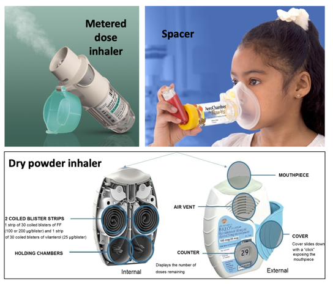
흡입제 분류1 사용 목적: controller, reliever
2. 제형
- DPI (dry powder inhaler, 건조분말 흡입기)
- pMDI (pressured metered dose inhaler,
정량식 분무 흡입기)
- Nebulizer
- Spacer
MART(Maintenance And Reliever Therapy)요법 : Symbicort, Foster
[건조 분말 흡입기]
예시) 렐바: 딸각 소리가 날때까지 마개를 밑으로 내려주세요. 렐바를 잡고 최대한 편안하게 숨을 내쉰 후에 약물을 흡입합니다. 가능한 빠르고 깊게 흡입을 하여야 하고 5초 정로 숨을 참아주세요.
[분무/분사 흡입기]
예시) 벤톨린: 두껑을 열고 2~3번 흔듭니다. 숨을 최대한 끝까지 공중으로 내쉬었다가 흡입기를 입에 가까이 댄 후 윗부분을 누름과 동시에 5초에 걸쳐 매우 천천히 깊게 숨을 들이 쉬어야 합니다. 그리고 10초동안 숨을 참으며 약물이 흡수되길 기다립니다.
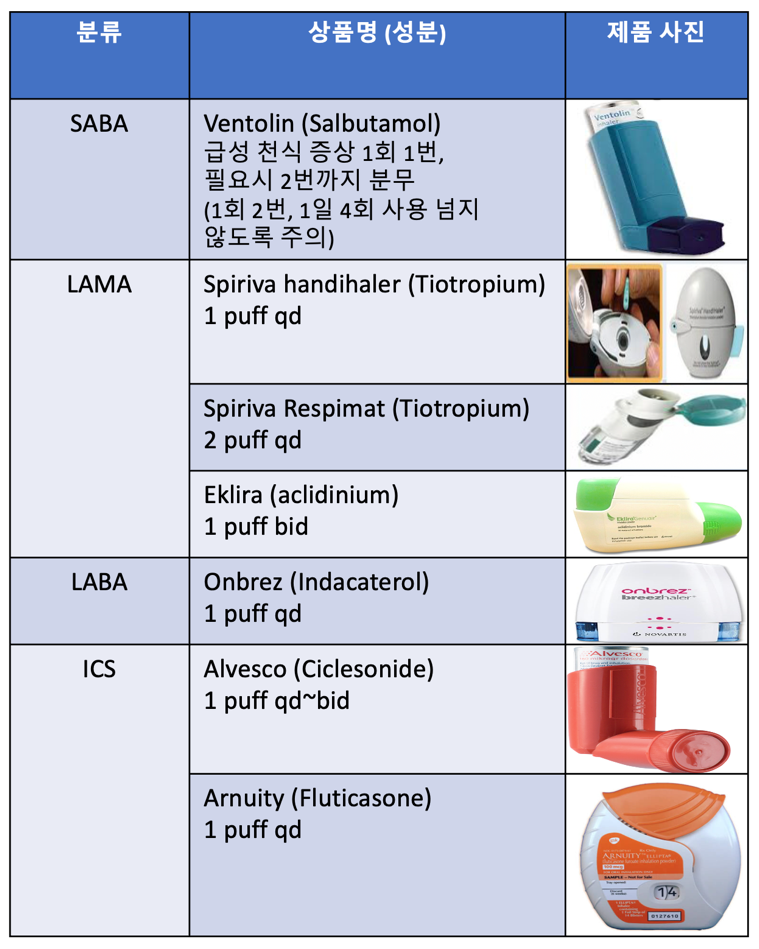
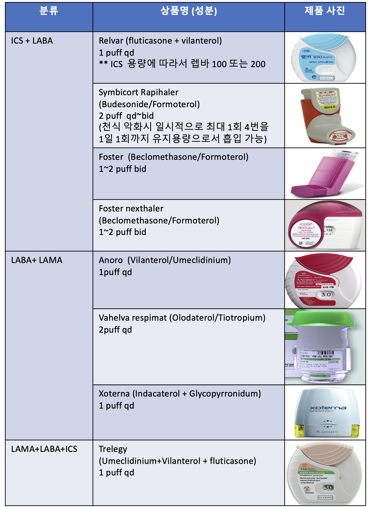
**Trelegy: Umeclidinium+Vilanterol+Fluticasone
(LAMA + LABA + ICS)
허가 사항) 지속성 베타2-효능약과 지속성 무스카린 수용체 길항제 복합요법에도 불구하고 FEV1
값이 정상 예측치의 60% 미만 또는 연 2회 이상 급성악화가 발생한 경우
▲지속성 베타2-효능약과 흡입용 코르티코스테로이드 복합요법에도 불구하고 호흡곤란 등의 증상이
적절히 조절되지 않는 경우
**Leukotriene modifier (LTD4 receptor antagonist): Montelukast(singulair)
** 닥사스, Daxas(roflumilast/PDE4 inhibitor)
:보험기준)B2 agonist, 항콜린제 지속투여에도 연 2회이상 급성 악화 발생 또는. FEV1<50%
2. Peak flow meter 시행 방법
최대호기류(PEF) 측정기를 사용하기 위하여 기립자세에서 최대 호기류 측정기를 잡는다 호기류양 표시기가 이동하는 데 지장이 없도록 조심한다.호기류양 표시기가 눈금의 시작점에 있는 것을 확인한다.숨을 깊이 들여 쉬면서 최대 호기류 측정기를 입안에 넣고, 기능한 빨리 강하게 숨을 내쉰다. 2번 더 반복하고 3번 시행한 기록 중 가장 높은 기록을 선택한다.하루 2번 평가, 일중 변화량 20%이상이면 천식을 시사
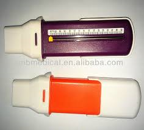 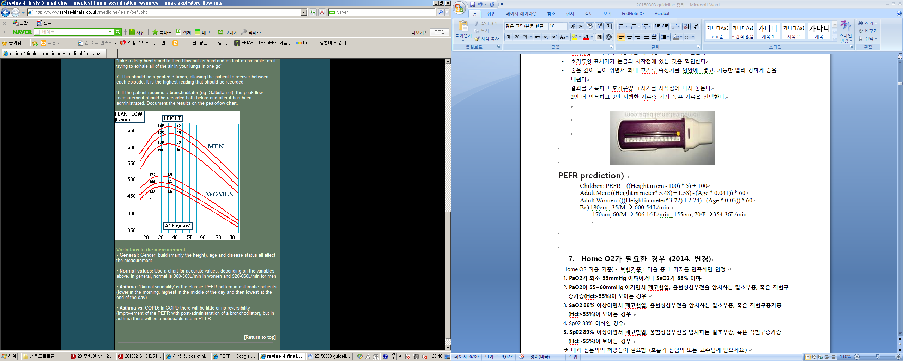
PEFR prediction)
Adult Men: ((Height in meter* 5.48) + 1.58) - (Age * 0.041)) * 60
Adult Women: (((Height in meter* 3.72) + 2.24) - (Age * 0.03)) * 60
Ex) 180cm, 35/M 🡪 600.54 L/min
170cm, 60/M 🡪 506.16 L/min, 155cm, 70/F 🡪354.36L/min
7. Home O2가 필요한 경우 (2014. 변경) (가정용 산소발생기: 월12,000원)
Home O2 적용 기준) – 보험 기준: 다음 중 1 가지를 만족하면 인정
1. PaO2가 최소 55mmHg 이하이거나 SaO2가 88% 이하
2. PaO2이 55~60mmHg 이면서 폐고혈압, 울혈성심부전을 암시하는 말초부종, 혹은 적혈구증가증(Hct>55%)이 보이는 경우
3. SaO2 89% 이상이면서 폐고혈압, 울혈성심부전을 암시하는 말초부종, 혹은 적혈구증가증(Hct>55%)이 보이는 경우
4. Sp02 88% 이하인 경우
5. Sp02 89% 이상이면서 폐고혈압, 울혈성심부전을 암시하는 말초부종, 혹은 적혈구증가증(Hct>55%)이 보이는 경우
🡪 내과 전문의의 처방전이 필요함. (호흡기 전임의 또는 교수님께 받으세요.)
** 하루 15시간 이상 장기간 산소투여는 만성 호흡부전환자에서 생존율을 높일 수 있습니다
1. 객혈 환자가 내원
🡪 주의: 환자 상태가 갑자기 안 좋아질 수 있으므로 고년차/교수님과 상의.
대량 객혈: 200~600ml/24hr
병력
1. 객혈양 ( 한번에 몇 cc, 총 몇cc)
Ex) 한번 할 때 휴지에 뭍어나는 정도. 소주컵 또는 종이컵으로 1번.
2. 객혈 시작한 시점.
3. 객혈 양상 (fresh blood, old blood clot)
4. aspirin, clopidogrel, ticagrel, prosudogrel, warfarin, NOAC 복용력 확인
5. 전에도 객혈이 있었는지?
6. 과거 결핵 또는 기관지 확장증, 페동정맥 기형 여부, 폐암 가능성 확인.
검사
1. Chest PA
2. CBC 및 INR 등 확인. Matching 나가고 PRC 준비 고려
3. Chest CT (E) 고려
4. SpO2 Check. ABGA 고려
5. 안정시 Bronchoscopy 시행 .
치료
1. 보호자 설명
- massive hemoptysis 심해지면 위험할 수 있다.
- 중환자실 치료 및 기도 삽관/인공호흡기 사용 가능성 설명
- 사망 가능성 설명
- MI, CI, AF 과거력 환자🡪Aspirin, warfarin, clopidogrel, ticagrel, prosudogrel, NOAC 중단시 MI,CI
등 악화 재발 가능성 설명
(순환기 내과, 신경과와 상의)
2. NPO하고 피가 나는 쪽이 아래로 가도록 Decubitus 로 눕는다.
3. 기침 억제 (code-s 60CC #3 또는 codein 3T #3 처방), 최소한의 물과 함께 복용
4. TRS 1 ample q 8hr ( CODE : 7TRS) : Tranexamic acid: anti-fibrinolytic activity
또는 Blistop(p-Aminomethylbenzoic acid) 1 am + NSS 100ml mix
5. Hempotysis 1회 200ml 이상, 하루 500ml~1000ml 이상이면 embolization consult
동의서 받을 때 드물게 embolization 후 하지 마비 가능성, 출혈, 혈종 발생에 대해서도 설명
6. embolization이 완치적 치료가 아니며, 객혈 재발할 수 있으며, 조절이 되지 않으면
추가적인 embolization 또는 수술적 치료를 할 수도 있다고 설명.
Hemoptysis evaluation
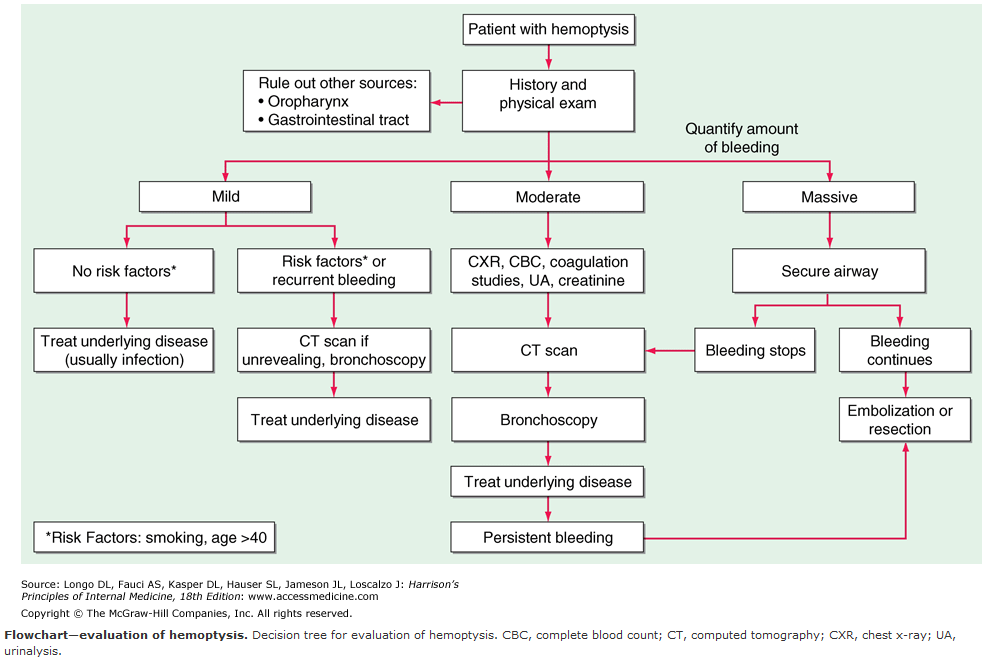
2. 폐 조직검사를 시행 받기 위해서 내원
** 조직검사 다음날 조직검사 검사 결과를 확인해서 암으로 나오면 중증 등록하고, 다음 검사 (PET 토르소 조영증강, Brain MRI meta initial 촬영 예약을 잡고 퇴원.
병력
1. aspirin, clopidogrel, warfarin, NOAC 복용 여부 확인. 언제까지 복용했는지 확인.
-aspirin, clopidogrel은 5일~7일 정도 중단. Warfarin은 INR 정상화될 때까지 중단.
2. Bronchoscopy 시행했는지 확인. Bronchoscopic biopsy 가능한지 확인.
3. supraclavicular, Neck LN enlargement 있으면 우선 LN에서 Biopsy 시행🡪합병증 risk 적음.
4. Mediastinal LN 확인. EBUS로 Biopsy가능한지 확인.
🡪 가능한 병변이 있으면 고년차 또는 staff 와 상의
검사
1. Routine lab check (CBC, ADM, UA. CXR, EKG)
- Hb. Plt. INR 확인. 부정맥이 있는지. CXR이 외래에서 촬영한 것과 변화가 있는지 확인.
2. Matching 준비 (ABO/RH, Irregular Ab. Screening)
설명 및 치료
1. 보호자 설명 및 동의서
- 기흉 및 출혈 가능성
- 기흉 발생시 흉관 삽입할 수 있습니다.
- 조직 검사 실패 가능성, 재검사 가능성
- 조직 확진이 안되면 흉부외과 수술적으로 진단 및 치료할 수도 있습니다.
2. 검사일 NPO
3. (PCNB의 경우) 검사를 supine으로 하는지 prone으로 하는지 확인하고 조직검사 부위가
열릴 수 있도록 정형외과 수술복으로 입혀서 내려주세요.
Ex) supine으로 하는 경우 🡪 가슴 쪽이 열리도록, prone으로 하는 경우 🡪 등쪽이 열리도록.
4. 검사 끝나면 병동 오기 전에 Chest PA 촬영: 기흉 여부 확인.
Emphysema 등 underlying lung ds. 있는 환자들은 처음에는 기흉이 없더라도 나중에
발견되는 경우도 많으므로, 호흡곤란 등 증상이 발생하거나 risk가 높은 경우에는 검사 당일
저녁, 다음날 아침에 꼭 chest PA를 F/U해본다.
5. Infection 가능성 있어서 Culture(AFB 등) 시행할 경우 saline 들어있는 bottle도 같이 내리세요.
** 폐 조직검사 시행 후 기흉 발생
🡪 산소 NP 4L/min, 양이 많은 경우 흉부외과 상의 (고년차와 상의)
** 폐 조직검사 시행 후 Blood tinged sputum
🡪 대부분 지혈됨. CODE-S, TRS 처방 고려 (고년차와 상의)
지혈이 안되면 embolization 고려
3. Hypoxemia evaluation을 위해서 입원
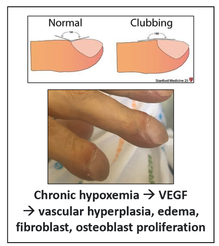
병력1. Cyanosis 및 손가락 clubbing 확인
2. 가족력 (pul.HTN, AVM, 선천성 심기형 등)
3. Dyspnea onset, grade (mMRC or ATS)
4. 간질환 (Hepato-pul. syndrome) 여부
검사
1. CBC, L-ADM3, Chest PA 등 기본 검사
2. ABGA
- (A-a)DO2 계산, 산소 투여 후 Hypoxemia 교정 여부 확인
3. CHEST CT(E) – 필요에 따라서 Pul. Thromboembolism CT
4. Echo. – AVM, hepato-pul. syndrome 등 Shunt 의심될 때는 Contrast Echo 시행
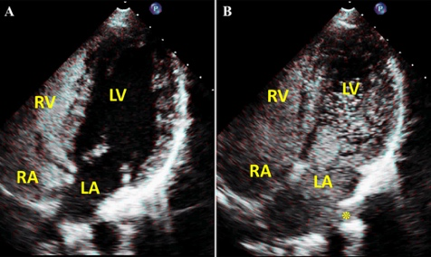
5. 필요에 따라서 lung perfusion scan, angiography 등 시행Saline Contrast Echocardiography
치료
- 원인에 따른 치료 시행
1) Pulmonary AV Malformation 🡪 embolization 시행
2) Pul. Edema 🡪 이뇨제 사용 및 순환기 내과 상의
Hypoxemia evaluation
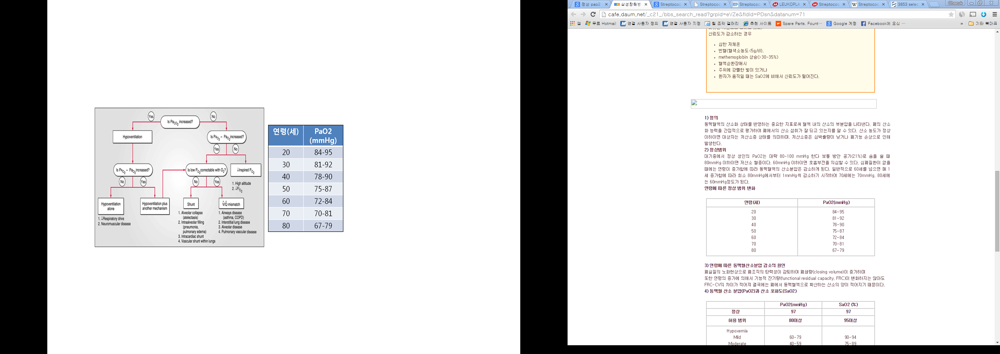
** PAO2 = Fi02 x 713 -1.25 x PaCO2 (Room air Fi02: 0.21)
(A-a)Do2는 15mmHg미만이 정상(30세 기준), 10년 지날수록 3mmHg씩 증가
(산소 치료 : FiO2)
Room air : FiO2 =0.2
Nasal cannula | Mask | Reservior Bag |
1L/min FiO2=0.24 | 5~6L/min , FiO2=0.4 | 6L/min , FiO2=0.6 |
2L/min FiO2=0.28 | 6~7L/min , FiO2=0.5 | 7L/min , FiO2=0.7 |
3L/min FiO2=0.32 | 7~8L/min , FiO2=0.6 | 8L/min , FiO2=0.8 |
4L/min FiO2=0.36 | 9L/min , FiO2=0.8 + α | |
5L/min FiO2=0.40 | 10L/min , FiO2=0.9+ α |
Nasal cannula, mask, mask with reservoir bag 🡪 low flow system
High flow nasal cannula (ex. Ventri mask, Optiflow) 🡪 high flow system
Dyspnea Grade
(mMRC: modified Medical Research Council dyspnea scale)
0 | 힘든 운동을 할 때만 숨이 차다 |
1 | 평지를 빨리 걷거나 약간 오르막길을 걸을 때 숨이 차다 |
2 | 평지를 걸을 때 숨이 차서 동년배보다 천천히 걷거나, 자신의 속도로 걸어도 숨이 차서 멈추어 쉬어야 한다. |
3 | 평지를 약 100m 정도 걷거나, 몇 분 동안 걸으면 숨이 차서 멈추어 쉬어야 한다 |
4 | 숨이 너무 차서 집을 나설 수 없거나, 옷을 입거나 벗을 때도 숨이 참 |
Performance status
ECOG (European Cooperative oncology Group)
0 | 증상이 없는 경우 |
1 | 약간의 증상이 있는 경우 |
2 | 낮 시간의 50% 이하를 침대에서 보내는 경우 |
3 | 낮 시간의 50% 이상을 침대에서 보내는 경우 |
4 | 종일 누워 지내는 경우 |
4. 폐렴으로 입원 (Community-acquired pneumonia)
병력>
1. 발열, 오한, 근육통, 기침, 객담, 호흡곤란, 객혈, 흉통 여부
2. aspiration 여부
3. 가족, 직장 동료 등 폐렴, 결핵 여부, 흡연력, 음주력
4. 개인병력 치료력(항생제, 해열제), 치주염 치료 (lung abscess)
5. 기저질환 (DM, cancer, HF, renal ds., Liver ds. 등 risk factor 확인)
6. 이전 입원력, culture 결과 및 항생제 사용 기록 확인
7. steroid 복용 여부 및 immune compromised 상태 인지 확인.
검사>
1. Sputum Gram stain, bacterial culture, ± AFB stain/culture ± Fungal stain/culture
2. blood culture (항생제 투여 전 2쌍)
** atypical pneumonia 의심될 때 (선별해서 시행)
🡪 Mycoplasma IgM/IgG, cold agglutinin test, Legionella Ab. (Chlamydia pneumonia PCR)
Respiratory virus detection, Influenza rapid antigen test, Influenza PCR
3. ESR/CRP, procalcitonin
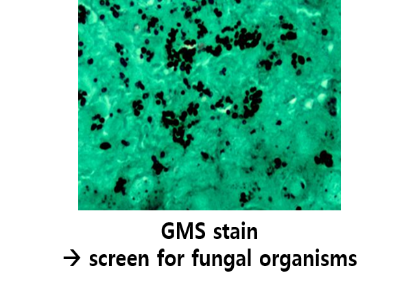
4. hypoxemia 있으면 ABGA5. sepsis, septic shock 가능성 있으면 lactic acid 확인
6. fungal infection 가능성 있을 시 🡪 Cryptococcus Ag. Aspergillosis Ag 혈액 검사 고려
TBLB시행할 경우 cytospin, GMS (Grocott’s Methenamine Silver) stain🡪 PJP(Pneumocystis jiroveci pneumonia) 확인
치료>: (항생제 용량- 신장기능 이상 있으면 Dose adjustment)
1. Pseudomonas 의심되지 않을 때
cefotaxime 1~2g q8hr (or ceftriaxone 2g q24hr) plus macrolide (Clarithromycin or Azithromycin)
또는 respiratory quinolone: Levofloxacin or moxifloxacin or Gemifloxacin
2. Pseudomonas cover 해야 하는 경우
- Cefepime 2g q8hr + ciprofloxacin (moxifloxacin 400mg qd) or amikacin (20mg/kg qd iv)
- Tazo/pip 4.5g q 6~8hr ± ciprofloxacin (moxifloxacin, levofloxacin)
3. ESBL (extended spectrum B-lactamase) (+)균 의심되거나 확인 시
🡪 Carbapenem: imipenem 500mg q6hr (meropenem 500mg~1000mg q8hr)
4. MRSA 균 의심되거나 확인 시 Vancomycin 15mg/kg q12hr (or linezolid 600mg q12hr)
Vancomycin 천천히 정주(빨리 주사하면 red man syndrome 발생)신기능 이상 시 teicoplanin iv
5. Aspiration pneumonia 가능성 🡪 흡인된 적인 있는지, 흡인되는 이유 확인.
특정소견 없으면 CAP에 준해서 치료 (ex. Cepha 계열 항생제)
특정소견(subacute onset, 치아상태 불량, 폐 괴사) 🡪 anaerobe cover를 위해 clindamycin 추가
Carbapenem
Dose | Pseudomonas | Anaerobe | Side effect | |
Meropenem | 500mg~1g q8hr | ++/+++ | ++ | Lower seizure risk |
Imipenem | 500mg q6hr | +/++ | ++ | Higher seizure risk |
Ertapenem | 1g qd | - | ++ | |
Doripenem | 500mg q 8hr | ++/+++ | ++ |
**
Clindamycin vs metronidazole
Metronidazone, clindamycin 둘다 anaerobe에 대한 항균력있음단독 요법시 metronidazole은 G(+), G(-) aerobe에 대해서 항균력이 낮아서 Aspiration pneumonia에 대한 치료효과가 적음Clindamycin은 G(+), G(-) aerobe에 모두 효과가 있음.폐렴에서는 Anaerobe과 G(+),G(-) aerobe 복합 감염이 많아서 metronidazole보다는 clindamycin을 선호함. Clindamycin : 50S ribosome에 작용, Metronidazole : DNA 합성 억제
Anaerobic pathogen
Bacteroides, Provotella, Fusobacterium, Peptostreptococcus
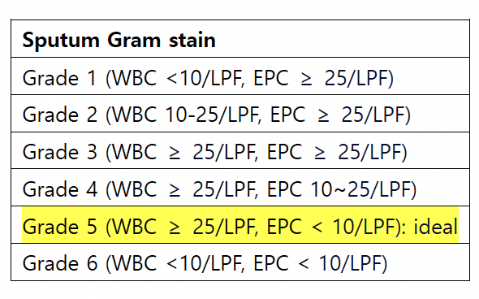
**객담 검사의 적정성 평가1) Sputum Gram stain 의미
: 객담 검체가 적절한지 판단하고 원인균 예측
2) 배양에 적절한 객담
: Low power field (X40): WBC >25, Epithelial cell <10
이 조건이 부합하지 않으면 오염된 검체로 판단
3) 객담 검체의 질 평가 기준 : Grade 5가 이상적인 객담 샘플
Grade 1~4는 oropharyngeal secretion에 오염된 객담
Pneumonia severity 평가 / 퇴원시 check list
- Criteria for admission: pneumonia severity index (PSI) score
Factor | Score | ||
Patient age | |||
Male (age in years) | Age | ||
Female (age in years) | Age-10 | ||
Nursing home resident | +10 | ||
Coexisting illness* | |||
Neoplastic disease | +30 | ||
Liver disease | +20 | ||
Congestive cardiac failure | +10 | ||
Cerebrovascular disease | +10 | ||
Chronic renal disease | +10 | ||
Signs on examination | |||
Acutely altered mental state† | +20 | ||
Respiratory rate ≥30/min | +20 | ||
Systolic blood pressure <90 mmHg | +15 | ||
Temperature <35°C or ≥40°C | +15 | ||
Pulse rate ≥125/min | +10 | ||
Results of investigations | |||
Arterial pH <7.35 | +30 | ||
BUN ≥30 mg/dL | +20 | ||
Serum sodium <130 mEq/L | +20 | ||
Serum glucose >250 mg/dL | +10 | ||
Hb <9 g/dL (Hematocrit <30%) | +10 | ||
PaO2 <60 mmHg (SaO2 <90%) at room air | +10 | ||
Pleural effusion on chest X-ray | +10 | ||
*Coexisting illness (Neoplastic disease: within one year, excluding cutaneous basal cell carcinoma or
cutaneous squamous cell carcinoma; Liver disease: clinical or histological liver cirrhosis or chronic
active hepatitis; Congestive cardiac failure: diagnosed by history, physical examination or laboratory
findings; Cerebrovascular disease: clinical stroke or confirmed cases by CT or MRI), †Altered mental
state: disorientation to person, place and time; or recently decreased level of consciousness.
2.Expected mortality, risk, and recommended place for treatment according to PSI
Class | PSI score | Expected mortality (%) | Risk | Recommendation | |
Class I | Aged less than 50 yrs old, no underlying disorder/no severe clinical signs | 0.1~0.4 | Low | Home | |
Class II | 1~70 | 0.6~0.7 | |||
Class III | 71~90 | 0.9~2.8 | Home or admission* | ||
Class IV | 9~130 | 8.2~9.3 | Moderate | Hospitalization | |
Class V | >130 | 27.0~31.1 | High | Intensive care unit | |
CURB-65 score | Mortality (%) | Risk | Recommendation | ||
0 | 0.7 | Low | Home | ||
1 | 2.1 | ||||
2 | 9.2 | Moderate | Hospitalization | ||
3 | 14.5 | High | Intensive care unit | ||
4 | 40 | ||||
5 | 57 | ||||
*Hospitalization for a short term or treatment at observation unit.
3. CURB-65, mortality, risk, and recommended place for treatment
Clinical factor |
C (Confusion) |
U (Blood urea): >19 mg/dL |
R (Respiratory rate): ≥30/min |
B (Blood pressure): Systolic pressure <90 mmHg or diastolic pressure ≤60 mmHg |
65: ≥65 years |
4. Criteria for severe pneumonia
Major criteria (2) |
Invasive mechanical ventilation |
Requiring vasopressors due to septic shock |
Minor criteria (9) |
Respiratory rate ≥30/min |
PaO2/FiO2 ratio ≤250 |
Multilobar pneumonia in chest X-ray |
Decreased level of consciousness/disorientation |
BUN >20 mg/dL |
WBC <4,000/mm3 |
Platelet <100,000/mm3 |
Core temperature <36°C |
Hypotension requiring aggressive fluid therapy |
Criteria for admission to intensive care unit |
One major or more |
Three minor or more |
5. Checklist for decision of discharge
Clinically stable state |
Body temperature ≤37.8°C |
Pulse rate ≤100 per minute |
Respiratory rate ≤24 per minute |
Systolic pressure ≥90 mmHg |
SaO2 >90% at room air |
PaO2 ≥60 mmHg |
Possible oral intake |
Normal level of consciousness |
Need for treatment of other underlying diseases |
Need for other diagnostic tests |
Social circumstances for patient care |
Community acquired pneumonia : pathogen/ risk factors
6. Major pathogens of community-acquired pneumonia in Korea
Pathogen | No. (%) | ||||
Woo JH53 (n=219) | Chung MH54 (n=54) | Yu CW55 (n=81) | Sohn JW66 (n=39) | Song JH57 (n=108) | |
Gram-positive | |||||
S. pneumoniae | 59 (26.9) | 19 (35.2) | 27 (33.3) | 17 (43.6) | 38 (35.2) |
S. aureus | 25 (11.4) | 5 (9.3) | 13 (16.0) | 1 (2.6) | 12 (11.1) |
Viridans group streptococci | 12 (5.5) | 1 (1.9) | 4 (3.7) | ||
β-hemolytic streptococci | 1 (0.5) | 3 (5.6) | 4 (10.3) | 5 (4.6) | |
Others | 2 (0.9) | 2 (0.9) | |||
Gram-negative | |||||
Klebsiella spp | 44 (20.0) | 8 (14.8) | 12 (14.8) | 4 (10.3) | 12 (11.1) |
Pseudomonas spp. | 28 (12.8) | 1 (1.9) | 5 (6.2) | 4 (10.3) | 7 (6.5) |
Enterobacter | 14 (6.4) | 1 (1.9) | 2 (5.1) | 5 (4.6) | |
Haemophilus | 1 (5.0) | 12 (22.2) | 11 (13.6) | 1 (2.6) | 3 (2.8) |
Acinetobacter spp. | 7 (3.2) | 1 (1.9) | 4 (10.3) | 1 (0.9) | |
E coli | 6 (2.7) | 2 (3.7) | 2 (5.1) | 4 (3.7) | |
Others | 10 (4.6) | 1 (1.9) | 13 (16.0) | 9 (8.3) | |
Anaerobes | 3 (2.8) | ||||
7. Etiologies according to the risk factors
Risk factors | Common etiology |
Heavy alcohol drinking | S. pneumoniae, oral anaerobes, Gram-negatives including K. pneumoniae, M. tuberculosis |
COPD±smoking | H. influenzae, P. aeruginosa, Legionella spp. S. pneumoniae, M. catarrhalis, C. pneumoniae |
Structural lung diseases such as bronchiectasis | P. aeruginosa, B. cepacia, S. aureus |
Aspiration | Enterobacteriaceae, Anaerobes |
Bronchial obstruction | Anaerobes, S. pneumoniae, H. influenzae, S. aureus |
Influenza season | S. pneumoniae, S. aureus, H. influenzae |
Occurring in autumn, rash with eschar | Orientia tsutsugamushi |
Intravenous drug abuser | S. aureus, Anaerobes, M. tuberculosis, S. pneumoniae |
Exposure to air conditioning of building for last 2 weeks | Legionella spp. |
Exposure to birds | C. pneumoniae |
8.Etiology of viral pneumonia in Korea
Virus* | No. (%) n=317 |
Influenza A | 16 (5.0) |
Parainfluenza | 10 (3.2) |
Adenovirus | 4 (1.3) |
RSV | 3 (0.95) |
*Virus was isolated in 10.1% of community-acquired pneumonia.
HAP/ VAP(hospital acquired/ Ventilaotr associated pneumonia)
치료 및 Multidrug resistant pathogen risk 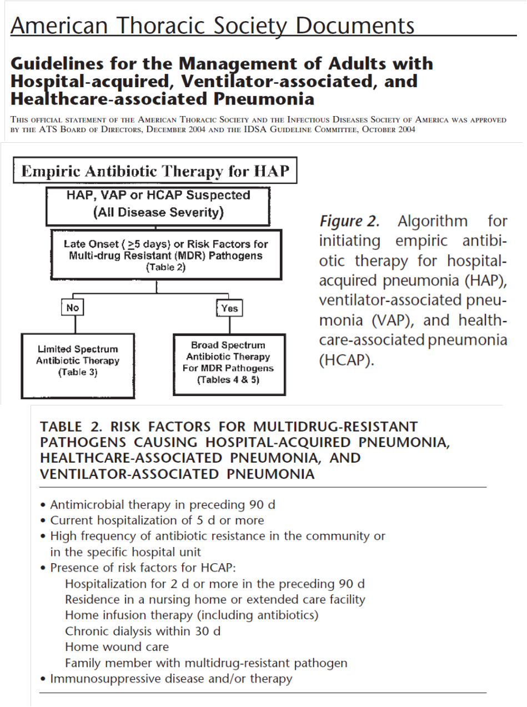
Dose of antimicrobial drugs in adult patients with renal impairment
Antimicrobial | Dose for normal renal function | Adjustment for renal failure(CrCl), Ml/min | ||
>50-90 | 10-50 | <10 | ||
Meropenem | 1gm q8h | 1gm q8h | 1gm q12hSame dose for CRRT | 0.5gm q24h |
Amikacin | 7.5mg per kg q12hor 15mg per kg once daily | 7.5mg/g q24hOr 15mg/kg once daily | 30-50: 7.5mg/kg q24hSame dose for CRRT10-30: 7.5 mg/kg q48h | 7.5mg/kg q72h |
Cefepime | 2gm q8h (max. dose) | 2 gm q 8h | 2 gm q 12-24hSame dose for CRRT | 1 gm q 24h |
Cefotaxime | 2gm q8h | 2 gm q 8h | 2 gm q 12-24hSame dose for CRRT | 1 gm q 24h |
Ciprofloxacin | 500-750mg po (or 400gm iv) q 12h | 100% | 50-75% CCRT400mg iv q 24h | 50% |
Gatifloxacin | 400mg po/iv q 24h | 400mg q 24h | 400mg, ten 200mg q 24hSame dose for CRRT | 400mg,then 200mg q 24h |
Gemifloxacin | 320mg po q 24h | 320mg q 24h | 160mg q 24h | 160mg q24h |
Levofloxacin | 750mg q 24h iv, po | 750mg q 24h | 20-49 : 750mg q 48h | <20: 750mg once, then 500mg q 48h |
Clarithromycin | 500-100mg q 12h | 500mg q 12h | 500mg q 12-24h | 500mg q 24h |
Erythromycin | 250-500mg q 6h | 100% | 100% | 50-75% |
Metronidazole | 7.5mg per kg q 6h | 100% | 100%Same dose for CRRT | 50% |
Vancomycin | 1 gm q 12h | 15-30mg/kg q 12h | 15mg/kg q 24-36h | 7.5mg/kg q2-3 days |
Pip/Tazo | 3.375-4.5mg q6-8h | 100% | 2.25gm q 6h<20: q 8hSame dose for CRRT | 2.25gm q8h |
** No renal dose adjustment : azithromycin, ceftriaxone, chloramphenicol, clindamycin, doxycycline, linezolid, minocycline, moxifloxacin, nafcillin, polymyxin B, tigecycline.
5. Pleural effusion/empyema로 입원
병력(흉수 및 증상이 발생한 시간, 흉수 양이 감별 진단에 중요한 인자이다)
1. 결핵 가능성 – 대개 천천히 발생, 체중감소, 오한, 발열, 기침, 가래, 피로함, 야간 발열, 객혈,
2. 악성 흉수 가능성 – 체중감소, 객혈, 호흡곤란
3. parapneumonic effusion/empyema –대개 급성으로 발생, 화농성 가래, 고열, 오한, 근육통, 흉통(편측), 호흡곤란 확인, Heavy alcoholics 많음 (주의: 흉통이 심한 경우 empyema 급격히 악화되는 경우 많음)
(** empyema의 경우 악화 가능성, 흉관 삽입, 수술 가능성도 미리 설명 드리기)
검사
1. Chest PA & Decubitus
2. Chest CT(E)
3. sputum AFB stain/culture, Gram stain, fugal stain, sputum culture
4. blood culture (항생제 투여 전 2쌍)
5. 환자 안정화시 bronchoscopy (Effusion 심한 경우 chest cath. 삽입해서 배액 후)
6. Diagnostic thoracentesis (*** 중요)
a. Body fluid analysis (본원에서 이 order에 pH도 포함됨)
b. pleural, serum LDH, pleural Total protein ± Albumin
c. pleural glucose, amylase
d. pleural CEA, Cytology (Malignant effusion의심되면 3번 연속, cell block (C5940)도 시행)
e. pleural stain (Gram stain, AFB stain, Fungal stain), culture, ADA
f. chylothorax (유미흉) 의심되면 Triglyceride 확인 (pleural TG>110mg/dl 이면 유미흉 시사)
7. 필요시 pleural Biopsy (결핵, malignant effusion, mesothelioma 등 감별)
원인에 따른 치료
1. chest catheter/tube 삽입 적응증 (한가지라도 만족 시)
- gross pus in the pleural space
- positive gram stain or culture of the pleural space
- pleural fluid glucose <60mg/dl, pleural pH<7.2
- loculated effusion
** chest catheter 삽입할 때 pleural biopsy가 필요한 경우 같이 의뢰해주세요.
2. empyema -> 내과적 치료가 잘 되지 않는 경우 수술적 치료 고려해야 한다.
- 항생제 치료: cefotaxime(ceftriaxone) plus clindamycin 6주~8주 정도 장기간 치료
- 증상 및 검사 결과 호전되면 경구 항생제로 바꾸어서 나머지 기간 치료 가능
- chest catheter 로 drainage (chest tube 삽입하기도 함.)
- loculation 되어 있거나 배액이 잘 되지 않으면 function잘 되는지 확인하고
Urokinase instillation (50000unit 주입 후 4시간동안 30분 간격으로
자세 변화 후에 병변 있는 쪽이 아래로 가도록 누워있는다.
**empyema 치료 중 bronchopulmonary fistula 발생 가능성 생각
Pleural effusion 검사 결과 해석 (중요!!)Light criteria 세가지 기준 중 한가지를 만족하면 Exudate 1) pleural LDH >upper normal x 2/3 (본원 LDH >266mg/dl)2) pleural/serum LDH> 0.63) pleural/serum TP >0.5 Light criteria에서 따르면 심장 문제에 의한 transudate의20%가 exudate로 나옴.그러므로 Protein gradient> 3.1g/dl 또는 Albumin gradient> 1. 2g/이면 Light criteria상 exudate라도 transudate로 보는 것이 합당하다.
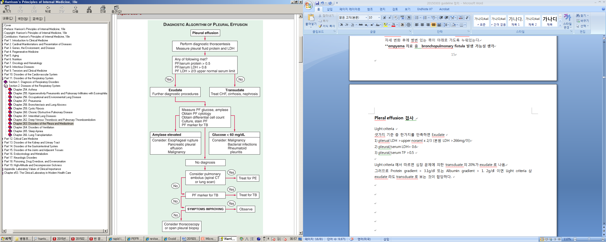
Pleural effusion
Neutrophil dominant (>50%) With parenchymal opacity -Parapneumonic effusion - Pulmonary embolism -Bronchogenic carcinoma Without parenchymal opacity - Pulmonary embolism - Viral infection - Acute tuberculosis (10%) - Benign asbestos pleural effusion |
Eosinophilic effusion (>10% eosinophils) Parapneumonic effusion, Tuberculosis Drug induced (nitrofurantoin, bromocriptine, dantrolene) Pulmonary embolism, Parasitic disease (paragonimiasis) Malignancy (rare), Air or blood in pleural cavity |
Lymphocyte predominant (>50%) Tuberculosis Malignancy Sarcoidosis, Chylothorax, Rheumatoid disease |
결핵성 흉막염이 의심되는 환자에서도 적극적으로 객담 도말 검사 및 배양 검사를 시행해야 한다. (결핵성 흉막염과 폐결핵이 같이 있는 경우가 있음)림프구가 우세 염증 세포인 삼출성 흉수에서 adenosine deaminase (ADA) >40 IU/L이고 ADA가 증가할 수 있는 다른 동반 질환이 없다면 결핵성 흉수의 가능성이 높다.
** Empyema necessitates (흉막천농성 농흉)
: The accumulation of pus in a small space in the pleural cavity, with subsequent rupture of the purulent material into the surrounding soft tissue
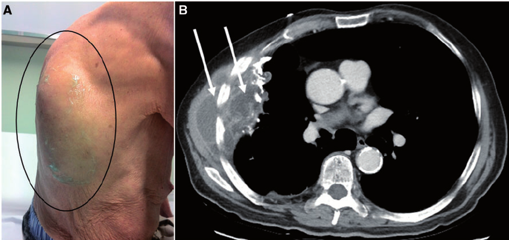
6. Lung abscess로 입원
lung abscess 가 주변 혈관에 인접해 있는 경우 massive hemoptysis 등으로 갑자기 사망할 수 있다고 꼭 설명한다. 내과적으로 치료가 잘 되지 않으면 수술적 치료 가능성 설명.
-lung abscess: lung parenchyma에 pus/empyema: pleural space에 pus
병력
1. 발열, 오한, 근육통, 기침, 객담, 호흡곤란, 객혈, 흉통, 체중 감소 여부
특징적으로 썩은 냄새가 나는 화농성 객담
2. aspiration 여부 (구강 내 이물 흡인), 연하곤란
3. 흡연력, 음주력 (alcoholism 여부 확인)
4. CVA, alcoholism, DM, kidney, liver ds.
5. 치주 질환, 부비동 감염, 기관지 확장증, 수면 위내시경 시행 여부
검사
1. Chest PA & Both decubitus: air-fluid level
2. CBC, L-ADM3, ESR/CRP, procalcitonin
3. Chest CT(E)
4. 안정화되면 bronchoscopy 시행 (empyema의 경우 chest catheter 시행 후 bronchoscopy 시행)
치료
** abscess가 기관지와 연결되어 있으면 체위 배농 (postural drainage) 시도한다.
- 항생제 치료: cefotaxime(ceftriaxone) plus clindamycin 600mg q8hr
MDR pathogen cover 해야 하면 Cefepime plus clindamycin 또는 Tazo/pip 3.5g q 6hr
치료기간) 대개 6주~8주 정도 장기간
(Chest image상 lesion이 clear해지거나 subtle scar가 될 때까지)
증상 및 검사 결과 호전되면 경구 항생제로 바꾸어서 나머지 기간 치료 가능
Ex) amoxillin/clavunate (Augmentin 3T #3)
또는 moxifloxacin 400mg qd (or Gemifloxacin 350mg qd)
- Refractory lung abscess는 수술적 절제에 대한 위험도 높은 경우 경피적 배액 고려할 수
있으나 bronchopleural fistula와 같은 합병증 발생가능성 높다.
- 호전 없으면 수술적 치료도 고려
7. 폐결핵으로 의심되는 환자 내원
🡪 AFB stain(+) 또는 AFB culture(+) 이면 결핵일 수 있지만, NTM일 수도 있다.
어떤 경우든 AFB stain과 AFB culture를 같이 시행 !!! (가장 중요)
병력
1. 현재 체중, 체중 변화 여부, night sweating
2. 가족, 직장 동료 결핵 Hx.
3. 기침, 가래, 호흡곤란 양상.
4. 과거 결핵 병력 (치료기간, 약제, 완치 여부, 약제 부작용)
** 폐결핵으로 진단이 되면 감염관리실에 EMR상에서 보고하고 결핵환자 교육 및 가족들
결핵 검진 쿠폰 받도록 함.
대개 결핵약 복용 2주 후 격리해지 가능. 최근에는 보통 AFB stain (-) 되면 격리해지
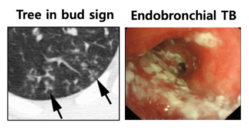
검사a. Sputum AFB stain/culture 시행 🡪 연속 3일
객담 배출 어려우면 3% saline 이용한 유도 객담
b. Chest CT 고려: cavity, tree in bud sign 확인.
c. 객담 배출이 어려우면 Bronchoscopy 시행
(의심되는 부위 washing 🡪 sputum AFB staining/culture, TB PCR or Xpert)
d. 객담 AFB stain (+)로 폐결핵 진단되면 bronchoscopy시행 고려
: endobronchial Tbc lesion 있는지 확인. (특히 기침이 심하거나 젊은 여자의 경우)
* 참고 사항
1. AFB culture (고체/액체 배지 동시 실시)
2. TB PCR (sputum 또는 bronchial washing – 둘 중에 하나만 보험 됨. 둘 다 시행 시 하나 삭감)
: 폐결핵이 의심되나 도말 검사상 음성, AFB(+)이나 NTM 의심될 때
3. 조직학적 진단이 필요한 경우
🡪bronchoscopic biopsy 또는 PCNB 한 것을 조직병리로도 보내고 Culture도 보낸다.
(formalin이 담긴 용기🡪 조직병리, AFB culture할 것은 saline 거즈로 싸서 따로 미생물검사실)
4. 조직 검사상 granuloma 나왔을 때 결핵균 확인: 조직 TB-PCR: TB/NTM detection (code: CZ864)
5. 잠복 결핵 확인
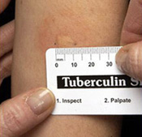
TST (tuberculosis skin test) = PPD test- 전박부 안쪽 피부에 주사 (2TU PPD RT 23 0.1mL를 27G needle로)
- 48~72시간 후 결과 판독 (가장 긴 직경 기록, 10mm 이상이면 양성)
(전박 장축의 수직방향으로 경결의 가장 긴 직경을 촉지해서 mm로 표시)
IGRA (interferon gamma releasing assay)
- 과거 결핵균에 감작되었던 T-lymphocyte에 결핵균 항원을 자극하여 분비되는
IFN-r를 측정(miliary TB, 5세 미만 에서는 예민도 떨어져서 시행 안 함)
치료
1.결핵약 처방
항결핵제 | 용량(최대용량) | 투여방법(식후 1시간) | 부작용 |
Isoniazid | 5mg/kg (400mg) | 하루 한번, 식후 300mg | 간독성, 말초신경염. 피부과민반응 |
Rifampin | 10 mg/kg (600mg) | 하루 한번, 공복시 450mg(<50kg) 600mg(>50kg) | 간독성, 독감양 증후군, 피부과민반응. 혈소판 감소증 |
Ethambutol | 15~25mg/kg 고용량 사용시 2개월 후 감량 | 하루 한번, 식후 800mg(<50kg) 1,200mg(<50~80kg) 1,600mg(>80kg) | 시신경염(시력저하 및 색각의 변화) **주의 1200mg이상으로 시작한 경우 2개월 후 감량 고려 |
Pyrazinamide | 20~30mg/kg (2000mg) | 하루 한번, 식후 1,000mg(<50kg) 1,500mg(50~70kg) 2000mg(>70kg) | 간독성, 관절통, 위장장애 |
결핵약 처방시 “결핵 치료 동의서” 꼭 받기
결핵약 줄 때 꼭 Pyridoxine(vitamin B6) 1T 같이 order, EMB 관련 시신경염에 대한 설명
결핵약 복용: 특별한 사항 없으면 식후 1시간(qd +1)
GI trouble 심하고 힘들어하면 3제로 바꾸거나 저녁 먹고 나서 복용
예)
1) 60/M, 70kg
🡪 INH 300mg/RFP 600mg/EMB 1200mg/PZA 1500mg 4제, (+pyridoxine) 6개월요법
: PZA는 초기 2달만 처방, EMB 2달 후 용량 감량/중단 고려
INH 300mg/RFP 600mg/EMB 800mg 3제, (+pyridoxine) 9개월 요법
2) 85/F, 40kg
🡪 INH 250mg/RFP 450mg/EMB 600mg 3제,(+pyridoxine) 9개월 고려. 혹은 4제
3) 결핵약 복합제재 처방(+pyridoxine 처방)
-Tubis® 1T : INH 75mg/RPF 150mg/EMB 275mg/PZA 400mg
4T : INH 300mg/RPF 600mg/EMB 1100mg/PZA 1600mg
30~37kg : 2T38~54kg : 3T55~70kg : 4T71kg 이상: 5T
**리팜핀과 같이 복용 시 용량을 증가시키고 주의해야 할 약제들
: 항부정맥약 (quinidine, phenytoin), 와파린(warfarin), 경구 피임약, 스테로이드(glucocorticoids),
인슐린, 경구용 혈당 강하제(sulfonylurea)
참고 1) 항산균 도말검사의 해석 기준 (US CDC/CLSI)
관찰되는 균주의 수 (No. of bacilli observed) | 보고 | ||
Carbolfuchsin stains (1,000x) | Fluorochrome stain | ||
250x | 450x | ||
0/300F | 0 | 0 | No AFB seen |
1-2 / 300F | 1-2 / 30F | 1-2 / 70F | Doubtful Repeat test (Trace) |
1-9 / 100F | 1-9 / 10F | 2-18 / 50F | Rare (1+) |
1-9 / 10F | 1-9 / F | 4-36 / 10F | Few (2+) |
1-9 / F | 10-90 / F | 4-36 / F | Moderate (3+) |
>9 / F | >90 / F | >36 / F | Numerous (4+) |
참고 2) 항결핵제의 분류*
군(group) | 항결핵제 |
1군 (경구용 일차 항결핵제) | 이소니아지드(Isoniazid, H) |
리팜핀(Rifampin, Rifampicin, R) | |
에탐부톨(Ethambutol, E) | |
피라진아미드(Pyrazinamide, Z) | |
리파부틴(Rifabutin, Rib†) | |
2군 (주사제) 효과가 좋으나 사용하기 불편하므로 약제내성이나 부작용으로 일차 항결핵제를 사용할 수 없을 때 선택되는 약제 | 카나마이신(Kanamycin, Km) |
아미카신(Amikacin, Amk) | |
카프레오마이신(Capreomycin, Cm) | |
스트렙토마이신(Streptomycin, S) | |
3군 (퀴놀론계 약) 항결핵 효과가 좋으므로 결핵균이 감수성을 보일 때 이차 항결핵제로 선택되는 약제 | 레보플록사신(Levofloxacin, Lfx) |
목시플록사신(Moxifloxacin, Mfx) | |
오플록사신(Ofloxacin, Ofx) | |
4군 (경구용 이차 항결핵제) 일차 항결핵제에 비해 항결핵 효과가 적고 부작용이 많아서 약제내성 결핵에서 이차 항결핵제로 선택되는 약제 | 프로치온아미드(Prothionamide, Pto) |
시클로세린(Cycloserine, Cs) | |
파스(p-aminosalicylic acid, PAS) | |
5군 약효가 입증되지 않아 표준 요법으로 선택되지 않고 광범위 약제내성 등 난치성 결핵 시 제한적으로 선택되는 약제들로 전문가 자문이 필요한 약제 | 클로파지민(Clofazimine, Cfm) |
리네졸리드(Linezolid, Lzd) | |
Amoxicillin/Clavulanate | |
클래리스로마이신(Clarithromycin) | |
고용량 이소니아지드 | |
이미페넴(Imipenem) |
*modified from reference 1, Table 7.1
†항레트로바이러스 약제를 사용 중인 HIV 감염인에서 결핵 초치료 시 선택
참고 3) 항결핵제의 용량과 부작용
항결핵제 | 용량 (최대 용량) | 투여 방법 | 부작용 |
이소니아지드 | 5 mg/kg (400 mg) | 하루 한번, 식후 300 mg | 간독성, 말초신경염(vit B6 부족), 피부과민반응 |
리팜핀 | 10mg/kg(600 mg) | 하루 한번, 공복시 450 mg (<50kg) 600 mg (>50 kg) | 간독성, 독감양 증후군(flu-like syndrome), 피부과민반응. 혈소판 감소증 |
에탐부톨 | 15-25 mg/kg 고용량 사용시 2 개월 후 감량 | 하루 한번, 식후 800 mg (<50 kg) 1,200 mg (50-80 kg) 1,600 mg (>80 kg) | 시신경염(시력저하 및 색각의 변화) |
피라진아미드 | 20-30 mg/kg (2,000 mg) | 하루 한번, 식후 1,000 mg (<50kg) 1,500 mg (50-70kg) 2,000 mg (>70kg) | 간독성, 관절통, 위장장애 고요산혈증, 통풍 |
카나마이신 | 50세 미만: 15 mg/kg (1000 g) 50세 이상: 10 mg/kg (750 mg) | 근육주사 또는 정맥주사 | 이독성, 신독성, 입주위 저린 증상 |
아미카신 | |||
스트렙토마이신 | |||
카프레오마이신 | |||
레보플록사신 | 하루 한번 식후 750-1,000 mg | 위장장애, 두통, 어지러움, 관절통 | |
목시플록사신 | 하루 한번 식후 400 mg | 위장장애, 두통, 어지러움, 관절통 | |
시클로세린 | 10-15 mg/kg (1,000 mg) | 하루 두번 식후 250-500 mg bid | 우울증, 정신장애 신경계 (Pyridoxine 복용) |
프로치온아미드 | 15-20 mg/kg (1,000 mg) | 하루 두번 식후 250-500 mg bid | 위장 장애, 간독성 |
파스 | 150 mg/kg (12g) | 하루 세번, 식후 3.3g(pack) tid | 식욕부진, 오심, 구토, 복부불쾌감, 간독성 |
리파부틴 | 5 mg/kg (300 mg) | 하루 한번, 공복시 300 mg | 간독성, 호중구 감소증 |
Linezolid | 600mg | 하루 한번, 경구 혹은 주사 | 골수억제, 말초신경염, 시긴경염, 위장장애 |
Bedaquiline | 첫 2주간 하루 400mg, 이후 22주동안 200mg 주 3회 복용 | 심전도 이상(QT간격 연장), 간독성, 위장장애, 두통, 관절통 | |
Delamanid | 200mg | 100mg 하루 2회, 음식과 함께 복용 | 위장 장애, QT 간격 연장, 어지러움 |
Meropenem | 1000mg 하루 2번, 정맥 주사, 하루 3~4회 125mg clavulanate를 동시 사용 | 설사, 울렁저림, 구토 | |
Imipenem-cilastatin | 1000mg, 하루 2회, 정맥 주사 | 설사, 울렁거림, 경련발작 | |
Amoxicilin-cluvulnate | Amoxicillin 1000mg과 clavulanate 125mg 하루 2회 | 설사, 울렁거림, 구토, 복통 |
*
참고 4) 초치료 결과의 분류
완치 | 치료 종결 후(마지막 달) 시행한 객담 배양이 음성이며 그 전에 한 번 이상 배양이 음성이었던 경우 |
완료 | 치료를 완료하였지만 치료 종결 후(마지막 달)의 객담 도말 및 배양 음성 결과가 없거나 그 전에 한 번 이상 도말 및 배양 음성 결과가 없을 때 |
실패 | 치료 4개월 후 또는 그 이후 시행한 배양이 양성인 경우 또는 치료 중 다제내성 결핵이 확인된 경우 |
사망 | 어떤 이유로든 치료 도중에 사망한 경우 |
치료중단 | 연속하여 2달 이상 치료가 중단된 경우 |
전출 | 다른 의료기관으로 전원되어 치료 결과를 알 수 없는 경우 |
진단변경 | 타 질환으로 진단이 변경된 경우 |
치료성공 | 완치 혹은 완료된 경우 |
** 2년이내 재발시 🡪 재치료 기간 3개월 연장(2년 이후에는 초치료와 같이 치료)
<결핵 진단 관련 검사 해석>
최소 2회, 가능한 3회 객담 도말과 배양검사 그리고
1회 결핵균 핵산증폭검사(TB-PCR)를 시행
AFB도말 (+)
TB-PCR (+)
AFB도말 (+)
TB-PCR (-)
AFB도말 (-)
TB-PCR (+)
AFB도말 (-)
TB-PCR (-)
NTM으로 추정
결핵으로 추정
임상적 판단
결핵으로 추정
그림 1. 폐결핵의 진단과정, TB-PCR검사는 위양성 위음성의 가능성이 있으며 최종 배양결과를
확인해야 한다.
** 2017 변경) 결핵이 의심될 때 도말 및 배양 검사와 함께 TB-PCR 검사를 시행함
🡪 경증 폐결핵 조기 진단, NTM 감별 목적
결핵균 분자진단검사 (2020년 가이드라인)
** 결핵이 의심될 때 도말 및 배양 검사와 함께 TB-PCR 검사를 시행해야 한다.
(경증 폐결핵 조기 진단, NTM 감별 목적)
기존에 발표된 Xpert 평가연구를 체계적 문헌고찰한 결과, 도말 및 배양 양성 검체에서 민감도는 98%, 도말음성 및 배양양성 검체에서는 68%로 기존 핵산증폭검사와 유사하였다
국내 재치료 환자와 같이 리팜핀 내성률이 15%이면 Xpert의 양성예측도는 90%를 넘지만 초치료
환자처럼 리팜핀 내성률이 5%인 경우 70% 아래로 감소한다.
이소니아지드 내성 결핵의 경우 2004년 보건소 도말 양성 초치료 환자에서 이소니아지드 내성률이 9.9%, 재치료 환자의 경우 24.1% 로 높았다.
7.결핵 치료 중 chest X-ray 및 증상이 악화되어서 내원
감별진단) 약제 내성, Paradoxical reaction, 기타(pneumonia, ILD 등) 발생
병력
1. 결핵 치료 시점, 약제, 치료 시행한 병원
2. 약제 복용을 잘 했는가?
3. AFB culture, sensitivity 검사 결과 확인.
** Paradoxical reaction(역설적 반응): 고열, 림프절염의 악화 또는 새로운 림프절염의 발생, 중추신경계 병변의 악화, 폐결핵 병변의 악화, 흉수의 증가 등이 일시적으로 나타나며 시간이 지나면 소실되며 치료 방침을 바꿀 필요가 없다
시행할 검사)
1. AFB stain/culture 시행
2. AFB culture에서 자라면 sensitivity 검사(B4064X) 시행여부 확인, 안 나갔으면 order.
3. MDR 의심되면 “INH/RFP 신속 내성 검사” (CY752X, CY751X) 시행🡪 검체 “sputum”
: 결과 나오는데 1주일정도 걸림.
** INH 신속 내성 🡪 KatG & InhA promoter DNA 확인
** RFP 신속 내성 🡪 rpoB DNA 확인.
참고) Quinolone 내성성🡪 gyrA, gyrB gene확인
5. 필요시 pneumonia, ILD와 관련된 검사 시행
치료 (교수님과 상의)
-일단 현재 결핵약 유지.
신속 내성 검사 결과 및 결핵약 감수성 검사 결과 확인 후 약제 변경
** 참고: MDR(Multi-Drug resistant): INH, RFP 내성
XDR(Extensively-Drug resistant): INH, RFP 내성
+ quinolone 한가지 이상
+ 주사제 약제 (kanamycin, capreomycin, amikacin) 중 한가지 이상에 내성
**내성 결핵의 빈도
초치료) INH 단독 내성: 10~13%, MDR: 2.7~5%
재치료) INH 단독 내성: 28%, MDR: 14%
*리팜핀 단독내성 결핵이 매우 드물어 Xpert 검사에서 리팜핀 내성은 추후 약제 감수성검사에서 확인될 때까지 다제내성 결핵으로 간주하는 것이 합리적이다.
** X-pert MtB/rif: 결핵진단 및 RFP 내성 바로 확인.
: 객담으로 검사. 2시간이내 검사 결과 나옴
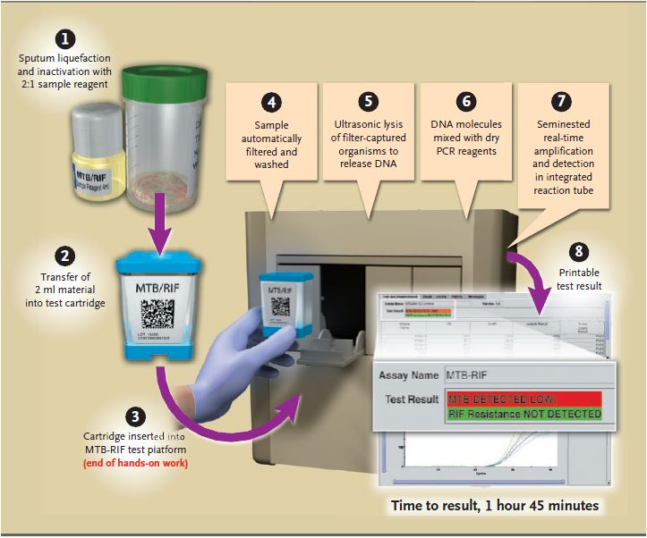
1. 우리나라 특성상 RFP 내성이면 INH도 같이 있다고 봐야함. (즉 MDR !!)
2. 재치료와 같이 MDR-TB 가능성이 높은 경우 초기 진단검사로 Xpert MTB/RIF를 시행할 수 있음.
3. 중증 결핵이나 HIV 감염인에서 발생한 결핵처럼 약제 내성 여부를 신속하게 확인해야 하는
경우 Xpert/RIF 검사를 시행할 수 있음.
TB-PCR | RFP 내성 변이 | 해석 |
Detected | Detected | 결핵 & RFP 내성(MDR) |
Detected | Not detected | 결핵 MDR-TB 가능성 매우 낮음 INH 내성 가능성 배제 못함 |
Not detected | 중증 폐결핵 가능성 매우낮음 (경증폐결핵 가능성 배제못함) |
*리팜핀 단독내성 결핵이 매우 드물어 Xpert 검사에 서 리팜핀 내성은 추후 약제감수성검사에서 확인될 때까지 다제내성 결핵으로 간주하는 것이 합리적이다.
** MDR-TB가 전체 결핵환자의 3-4%
9. Pleural effusion으로 내원. (결핵성 흉막염/결핵성 농흉)
병력- 폐결핵 의심 환자와 비슷
1. 현재 체중, 체중 변화 여부, night sweating
2. 가족, 직장 동료 결핵 Hx.
3. 기침, 가래, 호흡곤란 양상.
4. 과거 결핵 병력
5. pleuritic chest pain 유무 확인.
검사
1. Both decubitus 사진 추가
2. 1cm 이상 fluid shift 있으면 500cc 정도🡪 diagnostic thoracentesis 시행
검사) – 묶음 처방 이용
Serum LDH
Pleural fluid
– LDH, Total protein
- Cell & differential count (B0510E)
- ADA (>40 IU/L이면 결핵성 흉막염 가능성 높다)
: Bacterial infection이 심해도 ADA가 높을 수 있다.
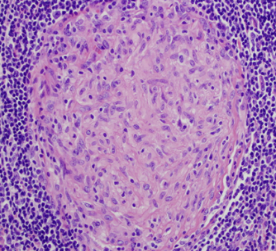
- CEA, Cytology- AFB stain, culture: AFB(+) 🡪 결핵성 농흉 가능성 높다.
3. 안정화되면 Bronchoscopy 시행 (effusion 빠지면)
4. Pleural biopsy로 조직학적 확진(chest catheter 삽입할 때 같이 시행 가능)
: 육아종 (granuloma) 🡪 결핵 시사
치료
1. loculated effusion 🡪 chest catheter 삽입 의뢰 (필요시 pleural biopsy도 같이 시행)
- 필요에 따라 pleural biopsy 시행 고려
- catheter draining 안되면 urokinase 25000U bid instillation.
(cath. 로 urokinase 주입하고 환자 자세 변화 시키고, 병변이 아래쪽으로 가도록)
2. large amount effusion🡪 drainage 하루 500cc~1000cc 정도 (필요시 1.5~2 L 배액도 가능)
- 갑자기 너무 많이 빼면 re-expansion pul. Edema 발생하는 경우도 있음.
3. Tbc pleurisy도 폐결핵과 치료 동일하다.
4. Sputum AFB, TB-PCR, Xpert 검사 음성이면 꼭 격리할 필요는 없음.
(하지만 Tbc pleurisy 환자 중 일부에선 AFB + 이고 Pul. Tbc 동반하기도 함.)
5. Drainage 양이 하루 50~100ml 이하이면 remove 고려
6. chest PA상 effusion이 많아 보이나 catheter function 잘되지만 drainage 잘 되지 않으면
Reposition 의뢰
7. 퇴원하기 전 PFT 시행 (restriction 여부 확인)
10. 결핵약 부작용으로 내원
1. 오심, 구토
🡪routine 검사상 특이 사항이 없으면 결핵 약 복용시간을 아침 식후 1시간 또는 저녁
식후 1시간으로 변경
2. 간수치 상승
- 정상치 5배 이상 (ALT 기준)
- 정상치 3배 이상 증가 및 간염의 증상(오심, 구토, 황달)
병력
결핵약 복용 잘 했나?
다른 약제 및 herb medication 없었나?
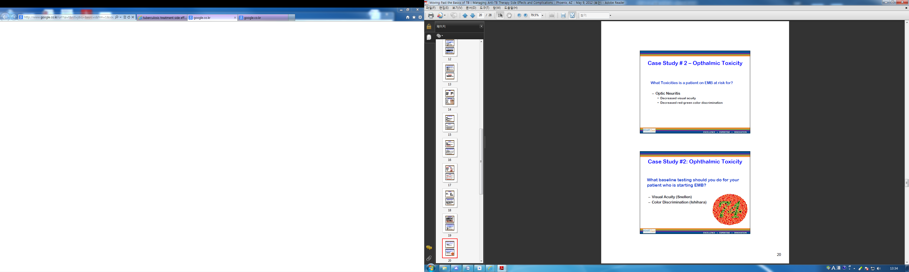
치료)
RFP/INH/PZA 중단, 단 EMB는 유지(간독성 적다)
2차 약제 포함해서 3개 이상의 약제로 cover
Ex) Moxifloxacin 400mg qd+ cycloserine 250mg bid + EMB
+ (Pas gran3.3g tid or AMK 1000g iv qd)
정상 상한치의 2배 이하로 감소하면 한가지 약제씩 재 투여
적녹색맹
RFP 🡪 INH 🡪 PZA 순서 (저용량 부터)
: RFP이 INH, PZA보다 간독성이 덜 하고 항결핵 효과가 더 좋으므로.
3. 시력 감소, 색각 이상 (적녹색맹) 🡪 EMB에 의한 시신경염, EMB 중단. 안과 진료
4. 혈소판 감소 🡪 리팜핀 중단. (리팜핀 재투여 금지)
5. PZA에 의한 관절통 🡪 PZA 유지하면서 NSAID 투여, 통풍 생기면 PZA 중단.
(EMB 도 관절통 유발할 수 있으며 심하면 중단 고려)
6. 발진
1. 경미한 발진 및 소양증은 항히스타민제를 투여하면서 치료를 지속
2. 피부발진이 심해지면 의심되는 모든 약을 중단. 호전되면 가능성이 적은 약부터 재투여
시작. 원인이 확실하지 않으면 RFP 🡪INH🡪 PZA 순으로 재투여 시도
3. 일반적으로 한가지 약제를 2~3일에 걸쳐서 한가지 약제씩 서서히 증량하고 이후에 다른
약제의 투여를 시도
11. 특수 상황에서의 결핵 치료
1. 임신 및 수유: 결핵약 태반 투과, 기형은 유발 안함. 수유 시 소량만 아기에게 전달
- 임신한 환자도 (2HREZ/4HR(E) )표준치료 또는 9HRE를 권고
- 일차약제로 치료하는 산모는 모유수유 중단할 필요 없음.
2. 간질환 환자.
- 간손상 심하지 않은 만성 간질환 (Ex) 비활동성 HBV
🡪 9HRE, 정기적으로 LFT F/U
- 중증 간질환이 있는 결핵 환자 (Ex) HBV LC, child class [B] 이상
🡪 간독성 없는 에탐부톨, 주사제, 퀴놀론, 시클로세린 등을 18-24개월 사용.
3.신부전 환자
- 신기능 저하가 있는 경우 INH, RFP, 프로티온아미드, 파스 및 MOXIF은 용량 조절 없이 사용
가능하며 기타 약제의 경우 투약 간격을 늘려 투여.
- 투석 중인 환자는 모든 항결핵제를 투석 직후 투여.
- 복막 투석: 혈액투석에서의 권고안을 따르는 것이 일반적임.
Ex) DM-CRF 월, 수, 금 투석 (Ccr <30ml/min)
🡪 INH, RFP 은 매일 투여
EMB 15~25mg/kg, PZA 25~30mg/kg 월, 수, 금 투석 직후에 투여.
Pyridoxine 매일 준다.
**PZA은 대개 쓰지 않고 3제로 9개월 치료.
** RFP 🡪 warfarin, steroid, 피임약의 간 대사를 촉진.
혈중 약물 농도 떨어뜨리므로 warfarin. Steroid 증량 고려
피임약 외 다른 방법으로 피임.
** INH 단독 내성
: INH 내성을 진단한 시점부터 RFP, EMB, PZA, Levofloxacin 6개월 치료
** RFP 단독 내성 INH, EMB.PZA, Quinolone 12~18개월(PZA 2달 이상 복용)
MDR 치료 (결핵 진료지침 4판,2020)
3.1. 치료의 일반 원칙
신속감수성검사에서 리팜핀 내성 유전자 변이가 확인되면 통상감수성검사 결과가 나오기 전까지 다제내성결핵 권고 처방으로 치료한다.효과적인 약제를 선정하기 위해 과거 결핵치료력과 약제감수성검사 결과를 동시에 고려해야 한다.항결핵효과가 강력한 군에 포함된 약제부터 순차적으로 선정하여 처방을 구성한다.적극적인 부작용 관리, 치료 과정에 대한 모니터링, 적절한 환자 관리가 병행되어야 한다.다제내성결핵 치료는 치료 경험이 많은 전문가에게 의뢰할 것을 권고한다.치료 처방을 결정할 때 퀴놀론 내성을 먼저 파악해야 하며, 퀴놀론 감수성 결핵은 권고 처방으로 퀴놀론 내성 결핵은 개별화된 처방으로 치료를 시작한다
Group | Medicine |
A군: 매우 효과적인 약제들로 금기가 없으면 치료 처방에 반드시 포함해야 하는 핵심 약제 | Levofloxacin or Moxifloxacin Bedaquiline Linezolid |
B군: 치료 처방을 구성할 때 A군 다음으로 선택하는 약제 | Cycloserine Clofazimine |
C군: A군과 B군만으로 처방이 구성되지 않을 때 다음 단계로 선택할 수 있는 약제 | Amikacin (or streptomycin) Ethambutol Imipenem or meropenem P-aminosalicyclic acid Prothionamide Pyrazinamide Delamanid |
3.3. 치료 기간
개정지침에서는 보다 강력한 살균력과 멸균력을 가진 3가지 핵심약제(퀴놀론, 베다퀼린, 리네졸리드)가 포함되기에, 집중 치료기는 4가지 약제로 6개월간 유지하여도 좋은 결과를 기대할 수 있다. 만약, 퀴놀론 내성 결핵처럼 3가지 핵심 약제 중 한가지 이상을 사용하지 못한다면, 보다 많은 약제로 오랜 기간 치료해야 할 수 있다.
집중치료기 권고 처방은 최소 4가지 효과적인 항결핵제들로 구성하며, 이는 A군의 퀴놀론, 베다퀼린, 리네졸리드 3가지와 B군의 시클로세린과 클로파지민 중 최소 1가지를 포함한다.
베다퀼린은 6개월 사용을 권고하며 리네졸리드는 부작용이 없는 한 치료의 전 기간 사용한다
유지치료기는 퀴놀론을 포함한 최소 3가지 효과적인 항결핵제로 구성한다
총 치료기간은 18-20개월을 권고하며, 배양 음전시기와 치료 반응, 치료약제의 종류를 고려하여
변경할 수 있다.
약제에 반응하지 않는 다제내성결핵의 경우, 병변이 국소적이며 환자의 전신상태가 양호한 경우,
그리고 감수성 약제가 2-3개 남아있는 경우 치료 시작 2-3개월 후병변의 수술적 제거를 권고한다.
12. Miliary Tbc 와 폐 외 결핵
A. Miliary Tuberculosis (결핵균의 hematogenous spread)
: 20~25% sputum AFB stain (+), 30~60% AFB culture (+)
병력
1. 폐결핵 및 폐 외 결핵에 대한 evaluation
검사
1. chest PA, chest CT상 miliary pattern 확인
2. 면역 이상 검사 (HIV 검사 등)
3. sputum AFB stain/culture, TB-PCR, blood culture (ABF culture), Transbronchial lung biopsy, BAL
Sensitivity: sputum AFB stain (20~40%), AFB culture (60~80%), TB-PCR (60~80%), TBLB (65~100%)
4. 안과 검사 (multifocal choroiditis 확인)🡪 안과 consult
치료) 6개월간 결핵 치료
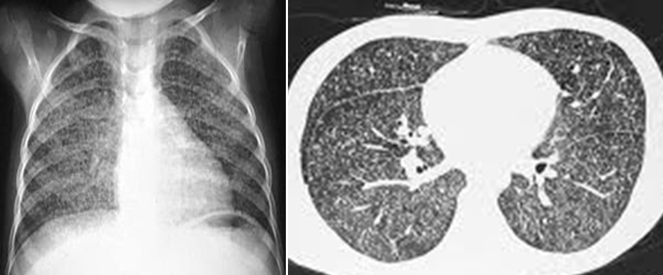
B. Endobronchial Tuberculosis
단순 폐결핵보다 오랫동안 Sputum AFB(+)로 나올 수 있다.
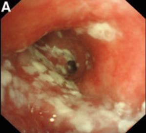
병력1. 장기간의 기침, 가래.
2. 젊은 여성, 호흡곤란
검사
1. 일반 폐결핵과 동일 (6개월)
- chest PA, CT상 특이사항 없는 경우가 있음
- Bronchoscopy상 endobronchial lesion (+)
치료
1. 폐결핵 치료와 동일
2. 기관지 협착의 발생 가능성이 높은 경우 협착 예방을 위해서 스테로이드를 투여해볼 수 있다.
(교수님과 상의)
3. 기관지 협착 가능성에 대해서 설명. 치료 후 bronchoscopy F/U할 것이라고 설명
4. 기관지 협착이 진행된 환자에서 증상과 폐기능 개선을 위해서 치료 2개월 이후에
중재시술(Ballooning, stent) 고려해볼 수 있다.
C. 림프절 결핵
병력
1. Neck LN 촉지
2. 결핵 관련 증상 확인, Lymphoma 등과 감별
검사
1. 림프절에서 얻은 검체에 대해서 병리검사와 항산균 배양검사 시행.
2. 객담 AFB stain/culture 시행
치료
1. 치료기간은 보통 6개월이지만, 림프절염이 남아있는 경우는 더 길어질 수 있다.
2. 치료 중 LN가 커질 수도 있다고 설명 (paradoxical reaction): 25% 정도에서 악화 후 호전
** 골관절 결핵 – 6~9개월 치료/중추 신경계 9~12개월, Steroid 병행치료
결핵약 desensitization
- 여러가지 스케줄에 의한 방법이 있음(교수님과 상의)예시
1) RFP desensitization
첫째날: 20mg – 40mg – 80mg -150mg : 3시간 간격으로 투여
둘째날: 300mg – 450mg : 3시간 간격으로 투여
만약 중간에 과민반응 (fever, rash, nausea, vomiting) 있으면 stop.
다음날 과민반응 생긴 용량의 1/20에서부터 다시 시작
만약 80mg에서 과민반응 있었으면 4mg – 8mg – 16mg-32mg으로 restart
2) INH desensitization
첫째날 30mg, 둘째날 50mg, 셋째날 100mg, 넷째날 200mg, 🡪 300mg🡪600mg
3) 신속 desensitization (하루 스케줄) ref) Allergy asthma Respir. Dis. 1(4) 395-399 Dec.2013
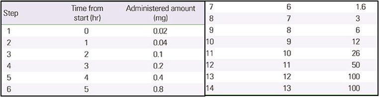
Solution for step 1-6) INH 10mg + 5DW 50ml (0.2mg/ml)
Solution for step 7-11) INH 100mg + 5DW 50ml (2mg/ml)
13. NTM(비결핵성 항산균)이 의심되는 환자가 입원
- NTM (Nontuberculous mycobacteria) = MOTT(mycobacteria other than tuberculosis)
: AFB (+), 결핵균보다 빨리 배지에서 자란다. (1~2주만에 자란다)
주로 Hemoptysis, sputum 심해서 내원. chest PA 또는 CT 상 NTM 의심되는 병변.
NTM은 사람간 전파 없음. 격리 필요 없음.
*대개 천천히 자라서 바로 치료하지 않고 증상 악화되거나 chest PA/CT상 병변이 진행하면
치료 고려해볼 수 있음. 하지만 sputum AFB stain(+)이고 cavity가 있고 폐병변이 심한
경우 바로 치료하기도 함. 치료기간이 1년 이상 길고 치료하더라도 치료가 잘
되지 않을 수도 있어서 신중하게 NTM 치료를 시작해야함.
병력
1. 현재 체중, 체중 변화 여부, night sweating
2. 가족, 직장 동료 결핵 Hx.
3. 기침, 가래, 호흡곤란 양상.
4. 과거 결핵, 기관지 확장증 병력
검사
Sputum AFB stain/culture: NTM은 결핵균보다 빨리 자란다.
Bronchoscopy washing 🡪 AFB stain/culture, MTB/NTM PCR 검사)
NTM 의심되는 자에서 AFB culture(+) 이면 NTM ID Test(C60291X)-결과 나오는데 2주 걸림.
NTM drug sensitive 검사 시행
Chest CT 촬영(Enhance 시행 여부- 고년차와 상의)
- Chest PA: nodular or cavitary opacity
- Chest CT: multifocal bronchiectasis with multiple small nodules.
치료
- 외래 약제 유지
- 초치료는 교수님과 상의
(NTM 폐질환치료에서 가장 힘든 것 중 하나는 “언제 치료를 시작할지 결정”하는 것이다.
장기간의 항생제 치료가 필요하기 때문에 부작용과 얻을 수 있는 이득을 고려하여 결정)
: 호흡기적 증상이 심해지고 흉부 사진상 악화가 진행되면 치료 시작 고려
MAC(M.avium, M.intracellulare)- NTM의 70% 치료: 두 균의 치료 방법, 예후 비슷
치료 기간: 객담 배양 음전되고, 이것이 최소한 12개월 간 지속될 때까지 치료
2) M. abscessus complex: M. Abscessus, M.massilience, M.bolletii
3) M. Kansasii: 치료 성공률 95%
NTM의 진단 기준 (2007 ATS/IDSA)
임상적 기준
호흡기적 증상(수개월 기침,가래 ± 객혈) , 흉부 X-ray 에서 결절성 병변 또는 공동성 병변의 존재 혹은 HRCT에서 다병소의 기관지 확장증과 동반된 다발성 결절의 존재
그리고
다른 질환이 적절히 배제 ( 결핵이 배제되어야 함. )
미생물학적 기준
최소한 2회 이상의 객담에서 배양 양성 (객담에서는 같은 균이 두번 나와야 진단!!) 또는 기관지 세척액에서 1회에서 배양 양성 또는 TBLB 등 조직배양이 양성이거나 또는 조직검사에서 육아종 등 마이코박테리아 감염의 병리학적 증거가 있으면 1회 이상 객담 또는 기관지 세척액에서 배양이 양성. 드문 균주 혹은 일반적으로 오염균으로 간주되는 균주가 분리되는 경우는 전문과와 상담. NTM 폐질환이 의심되지만 진단기준을 만족하지 못하는 경우에는 진단이 확실해지거나 배제될 때까지 추적관찰이 필요
** NTM 폐질환 진단 자체가 항생제 치료를 필요로 하는 것은 아니다.
항생제 치료는 개별적으로 치료에 따른 득실을 고려하여 판단.
** 현재 진단기준은 MAC, M.Kansasii 그리고 M.abscessus에 가장 잘 적용이 됨. .
섬유 공동형 (Fibrocavitary form) 결절 기관지확장증형
(Nodular bronchiectatic form)
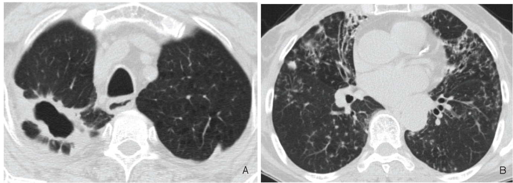
섬유 공동형 (Fibrocavitary form) : 중년이상의 남성 , 기저 폐질환, 흡연,음주. COPD, 과거 폐결핵 치료력, 진폐증. 🡪 얇은 벽의 공동이 상엽에 존재. 주위 늑막 비후.--> 치료를 하지 않으면 1~2년이내에 계속 진행하여 광범위한 폐실질의 파괴와 사망 초래
결절 기관지확장증 (Nodular bronchiectatic form) : 중년이상의 여성, 기저 질환 무. 양측 폐에 다발성 결절. 우중엽과 좌상엽의 설상엽. 5mm 이하서의 다발성 소결절과 기관지 확장증. 우중엽과 좌상엽의 설상엽에 국학되었거나 가장 심함. 🡪 치료를 하지 않더라도 매우 느린 방사선학적 진행
NTM 치료
MAC 폐질환의 치료 (미국흉부학회. 1997) : NTM drug sensitivity 검사결과 확인매일 치료 Clarithromycin 1000mg
or azithromycin 250mg
Ethambutol 25mg/Kg (2개월) 🡪 15mg/kg Rifampin 600mgor rifambutin 300mg Streptomycin 질병이 심한 경우 첫 2~3개월간 주 2~3회 근육 주사
** 치료 기간: 18~24개월 그리고 객담 배양 음전이 된 후 최소 12개월.
MAC 폐질환의 치료 (미국흉부학회. 2007)
초치료 결절기관지확자형 | 초치료 공동의 있는 경우 | 진행된 중증질환 또는 재치료 | |
Macrolide | CLR 1000mg TIWOr AZM 500~600mg TIW | CLR 500~1000mg/d Or AZM 250~300 mg/d | CLR 500~1000mg/d Or AZM 250~300 mg/d |
Ethambutol | 25mg/Kg TIW | 15mg/Kg/d | 15mg/Kg/d |
Rifampin | 600mg TIW | 450~600mg/d | 450~600mg/d |
Amniglycoside | none | Streptomycin or Amikacin or none | Streptomycin or Amikacin |
M. abscessus 폐질환의 치료 (미국흉부학회. 2007) Macrolide 항생제 단독 치료: 미생물학적 완치를 기대하기 힘들다. 2~4개월의 병합 항생제 치료 (정주용 amikacin + 정주용 cefoxitin or imipenem + 경구용 macrolide); 기간- 명확한 진료 지침 없음. 병변이 국소적인 경우 폐절제술 시행 현재 사용 가능한 항생제로는 대부분의 환자에서 만성적이고 완치 불가능한 감염증이다.
참고) 비결핵성 마이코박테리아로 인한 폐질환에 대한 치료
원인균 | 약제 및 용량 | 기간 |
M. avium complex | • Clarithromycin (500mg, 하루 두번) 혹은 azithromycin (250mg 하루 한번) | 균 음전 후 일년간 |
• Ethambutol (25mg/kg → 15mg/kg 하루 한번) | ||
• Rifampin (600mg 하루 한번) | ||
M. abscessus | • Clarithromycin (500mg, 하루 두번) | 처음 2~6주 |
• Amikacin (최고농도가 20ug/ml로, 하루 한번) | ||
• Cefoxitin (4g, 하루 세번) 혹은 imipenem (750mg, 하루 세번) | ||
• Clarithromycin (500mg. 하루 두번) | 이후 6~12개월 | |
• Doxycycline, moxifloxacin, linezolid | ||
M. kansasii | • Isoniazid (300mg, 하루 한번) | 균 음전 후 일년간 |
• rifampin (600mg. 하루 한번) | ||
• Ethambutol (25mg/kg → 15mg/kg 하루 한번) |
폐결핵과 NTM 감별진단 🡪 TB-PCR 검사 시행
Sputum AFB stain (+) 중 NTM 비율이 높아짐.
: 전국 보건소 – 10%가 NTM
삼성서울병원. 아산병원 – 45~65%가 NTM
원주세브란스 기독 병원 -21%가 NTM
최소 2회, 가능한 3회 객담 도말과 배양검사 그리고
1회 결핵균 핵산증폭검사(TB-PCR)를 시행
AFB도말 (+)
TB-PCR (+)
AFB도말 (+)
TB-PCR (-)
AFB도말 (-)
TB-PCR (+)
AFB도말 (-)
TB-PCR (-)
NTM으로 추정
결핵으로 추정
임상적 판단
결핵으로 추정
14. COPD 처음 진단받은 환자
COPD: Incompletely reversible airway obstruction and excess mucus production in the airway
정의) 완전히 회복되지 않는 기류제한을 특징으로 하며 흡연이나 실내외 먼지/가스에 의해서 기도와 폐포가 손상되어 호흡기 증상을 일으키는 질환
흡입제 처음 사용하는 경우 복약상담 의뢰하세요. COPD 진단: post-bronchodilator FEV1/FVC <70%
병력)
호흡곤란 정도 grading (mMRC 혹은 CAT score)
기침, 가래, 천명, 흉부 압박감, 피로, 체중감소, 식욕부진, 우울증
흡연력, 천식 과거력.
검사)
Chest PA, Blood eosinophil, sputum eosinophil.
PFT & BDR, DLCO (diffusion capacity of the lung for carbon monoxide)
Chest CT 혹은 Echo 고려(교수님과 상의)
- 보통 COPD환자는 심장이 Slim한데, 심장이 커져 있으면 cor pulmonale(폐성심) 발생가능성 있음.
심혈관질환, 골다공증, 우울증 및 폐암 등의 동반질환 가능성 확인
위식도역류는 악화 위험을 증가시키고 삶의 질을 떨어뜨린다
치료)
흡입제 보험 기준 ( 2022.3 개정)
중증도 이상의 만성폐쇄성폐질환[FEV1값이 예상정상치의 80% 미만] 환자의 유지요법FEV1이 80% 이상인 만성폐쇄성폐질환 환자 중, 호흡곤란 증의 증상이 적절히 조절되지 않는 경우 유지 요법
단일제: Aclidinium (에클리라), indacaterol (온브리즈), Umeclidinium (인크루즈)
복합제: Formterol + aclidinium(듀어클리어), indacaterol + glycopyrronium (조터나), olodaterol+tiotropium (바헬바), vilanterol + umeclidinium (오노로)
Spiriva respimat : 분사형. 흡입을 잘 하지 못하는 노인분들에게 사용하면 좋다.
이것은 2 puff 하루 한번임. (중증악화 경험이 있는 천식환자에도 보험적용됨)
DAXAS 500mg: roflumilast/PDE4 inhibitor🡪 급성악화 빈도 감소
: 보험 기준 (2021.11)
FEV1값이 예상 정상치의 50% 미만 또는ß2작용제나 항콜린제 등의 지속 투여에도 연 2회 이상의 급성학화가 발생하는 경우
부작용: 설사, 식욕 저하, 체중감소
COPD 환자 Staging (급성 악화로 입원하면 무조건 “다”)
∙ COPD를 의심해야 하는 경우는 40세 이상의 성인에서 흡연 등 위험인자에 노출된 적이 있으면서 호흡곤란, 기침, 가래를 만성적으로 동반하는 경우이다.
∙ COPD를 진단하기 위해서는 폐활량측정법이 필요하다.
∙ COPD를 치료를 위해 폐기능과 호흡곤란 정도 그리고 악화력을 평가한다. 이 평가에 따라
COPD환자를 가, 나, 다군으로 분류한다.
∙ COPD 환자는 심혈관질환, 골다공증, 우울증 및 폐암 등의 동반질환이 있는 경우에 불량한 예후를 보이기 때문에 이들에 대한 검사가 중요하다.
∙ 중복증후군은 천식 및 COPD의 특징을 함께 보이는 경우를 지칭한다.
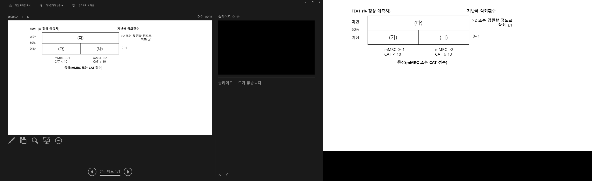
mMRC 2란 호흡곤란 정도가 “평지를 걸을 때 숨이 차서 동년배보다 천천히 걷거나, 자신의 속도로 걸어도 숨이 차서 멈추어 쉬어야 한다”이다.
.
가군: 위험 낮음, 증상 경함. FEV1 60% 이상이고 지난 해 악화가 없었거나 한 번이며, mMRC 0 ~ 1 (또는 CAT 점수가 10 미만)인 경우이다.
나군: 위험 낮음, 증상 심함. FEV1 60% 이상이고 지난 해에 악화가 없었거나 한 번이며, mMRC 2 이상(또는 CAT 점수가 10 이상)인 경우이다.
다군: 위험 높음. mMRC 혹은 CAT 점수와 상관없이 FEV1 60% 미만에 해당하거나 또는 지난 해에 2회 이상 급성악화가 있었거나 입원할 정도로 심한 악화가 있었던 경우이다.
참고, 악화(=급성 악화)는 호흡기증상이 매일매일의 일상적인 변화 정도를 벗어나서 약제를 추가해야 할 정도로 증상이 나빠진 급성상태를 의미한다. 여기서 약제는 항생제 또는 스테로이드를 말한다.
** mMRC 호흡곤란 점수
mMRC 호흡곤란점수 | 호흡곤란 내용 |
0 | 힘든 운동을 할 때만 숨이 차다. |
1 | 평지를 빨리 걷거나, 약간 오르막길을 걸을 때 숨이 차다 |
2 | 평지를 걸을 때 숨이 차서 동년배보다 천천히 걷거나, 자신의 속도로 걸어도 숨이 차서 멈추어 쉬어야 한다. |
3 | 평지를 약 100m 정도 걷거나, 몇 분 동안 걸으면 숨이 차서 멈추어 쉬어야 한다. |
4 | 숨이 너무 차서 집을 설 수 없거나, 옷을 입거나 벗을 때도 숨이 차다. |
CAT (COPD Assessment Test) : 8가지 항목
COPD stage 별 약물 치료 🡪 약물 p80참고
닥사스(DAXAS 500mg: roflumilast/ PDE4 inhibitor)
:보험기준)B2 agonist, 항콜린제 지속투여에도 연 2회이상 급성 악화 발생 또는 FEV1<50%
BODE index (COPD 예후 평가지표)
Body mass index | Obstruction (FEV1) | Dyspnea (mMRC) | Exercise capacity (6MWD) | |
0 | >21 | ≥65% | 0 | ≥350m |
1 | ≤21 | 50~64% | 1 | 250~349m |
2 | 36~49% | 2 | 150~249m | |
3 | ≤35% | 3 | ≤149 | |
4 | 4 |
** Approximate 4 year survival interpretation
0-2 points : 80%, 3-4 points : 67%, 5-6 points : 57%, 7-10 points : 18%
6분 보행 검사 : “E7230P” code
6MWD X 10 = walking distance in 1 hr
Ex) 6MWD = 400ml = 4Km/hr
ACO (Asthma COPD Overlap)
- COPD 환자가 천식 특징을 함께 보여 중복증후군 가능성을 시사하는 사항
호흡곤란 | 발작적, 가변적 |
기침 | 주로 밤 또는 새벽에 심하고 천명음 동반 |
아토피 | 특이 lgE 증가 또는 알레르기 피부반응 검사 양성 |
호산구 | 가래 또는 말초 혈액에서 호산구 증가 |
ACO diagnostic criteria
Two major criteria or one major with two minor criteria
Major criteria
- Marked reversibility with bronchodilators
(>15% and >400ml in FEV1)
- History of asthma (<40yrs old)
- Sputum eosinophilia
Minor criteria
- Reversibility on two separate occasion
(>12% AND >200ml in FEV1)
- History of atopy
- Increased total serum IgE
** 호흡 재활 치료의 효과
15. COPD 진단받은 환자가 발열 및 호흡곤란, 기침, 가래 증가
해서 입원 (COPD 급성 악화)
급성 악화 시 반드시 systemic steroid 치료 고려
병력)
1. 호흡곤란 정도(grade), 기침증가, 가래 색깔, 양, 점도, 가슴답답함. 활동 제약, 외출 잘 하나,
잠을 잘 자나, 기운이 왕성한가?
2. 치료력 (흡입제 사용 잘 하셨는지?)
3. 폐렴 백신 주사 맞으셨습니까?
4. 개인병원에서 치료? (항생제 및 해열제)
5. 과거 PFT 결과 및 Home O2 사용 여부 확인
6. 급성 악화 Hx. (과거 sputum culture 결과 및 항생제 sensitivity 확인)
7. 흡연 여부 확인 및 금연 교육
검사)
1. Chest PA, R-Lab , SaO2 (필요시 ABGA), ESR/CRP, 필요시 procalcitonin
2. Culture study
3. PEFR check (아침, 저녁) – 아침 흡입제 사용 전, 저녁 흡입제 사용 후 check
4. 안정화되면 PFT & BDR 고려
5. COPD와 관련된 합병증 검사 고려 (교수님과 상의)
- Echo. Chest CT, 골다공증 검사. 우울증 상담 등.
치료)
1. pneumonia 등 infection 가능성 있으면 항생제 치료
🡪 ex) COPD 65세/M, 정상 신장 기능
cefotaxime 2g q8hr (or ceftriaxone 2g q12hr) plus Clarithromycin 500mg q12hr
또는 moxifloxacin (or gemifloxacin) 400mg qd
** pseudomonas cover
Cefepime 1~2g q8hr ± ciprofloxacin (moxifloxacin 400mg qd) or amikacin
또는 Tazo/pip 4.5g q 6hr ( Tiocla 2vi q 6hr) ± ciprofloxacin(moxifloxacin)
** aspiration pneumonia 가능성 🡪 Clindamycin 600mg q8hr 추가 고려
2. 호흡곤란시 bronchodilator nebulizer
🡪 ventolin nebulizer q6hr or atrovent nebulizer q 6hr
(nebulizer 할 때 mucomyst 1/2 ample mix 해서 하면 가래배출 잘 됨)
3. 흡입제 사용 🡪 LAMA+ LABA (+ ICS)
4. 급성 악화가 심해서 wheezing 들이고 호흡곤란 심하면 systemic steroid 사용
Ex) COPD 65세/M, nebulizer 해도 wheezing(+) , RR 30/min, PEFR 50L/min(평소 150L/min)
Prednisone (PD) 또는 methylprednisolone 40~50mg 5일~7일 스테로이드 용량, 사용 기간은 환자에 따라서 조절 가능
경과 봐서 Pd 사용 기간 교수님과 상의 (prednisolone 5mg = methylPd 4mg)
COPD 급성 악화
: 호흡곤란의 악화, 기침의 증가 , 가래양의 증가 또는 가래색의 변화.
환자증상 악화가 매일-매일의 일상적인 증상변화의 범위를 벗어난 것
표1) 입원 적응증
〮 증상이 매우 심한 경우 |
〮 기류제한이 심한 COPD |
〮 새로 발생한 진찰소견(부종, 청색증) |
〮 심각한 동반질환(특히 심혈관질환) |
〮 잦은 악화 |
〮 고령 |
〮 일차치료에 반응하지 않는 급성악화 |
〮 가족이나 주위 사람의 도움을 기대하기 어려운 경우 |
표2) COPD 악화 환자의 중환자실 치료 적응증
〮 초기 응급처치에 반응이 나쁜 심한 호흡곤란 |
〮 의식상태 변화(혼란, 기면, 혼수상태) |
〮 적절한 산소공급과 비침습적 기계환기법의 사용에도 불구하고 저산소혈증(PaO2〈40 mmHg) 이나 호흡산증(pH〈7.25)이 지속되거나 악화될 때 |
〮 침습적 기계환기법이 필요한 경우 |
〮 혈류역학장애가 있어 승압제 치료가 필요한 경우 |
표3) 비침습적 기계환기(NIV; non-invasive ventilation)의 적응증
다음 중 한 가지에 해당될 때 |
〮 호흡산증(pH≤7.35 또는 PaCO2≥45 mmHg), 호흡보조근의 사용, 역설적 복근운동, 또는 늑간수축(함몰)이 관찰될 정도의 심한 호흡곤란 |
폐암) (연발생률: 50.4명/10만명 2016년 기준) 위암 59.7명, 유방암 42.7명
1. 폐암의 분류 및 빈도
비소세포폐암(85%) : 선암 (40%), 편평상피암 (30%), 대세포암 (15%)
소세포폐암(15%)
Histologic types of lung carcinoma. (A)SqC (B)SCLC (C)ADBAC type (D)LCC
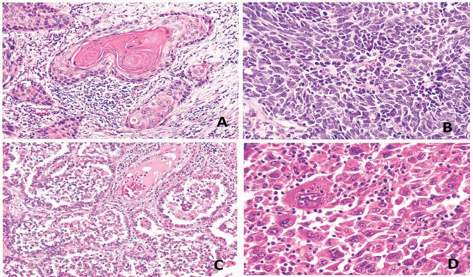
2. 폐암환자의 예후
NSCLC
병기 | 5년 생존률 |
I | 55~80% |
II | 40~50% |
III | 15~30% |
IV | 1~10% |
** NSCLC 환자의 30~50%가 결국 Brain meta가 생긴다.
-폐암 환자가 의식저, 손발 감각/운동 저하 있는 경우 뇌 전이 의심
-대부분의 약제들이 BBB 통과 못함
SCLC
SCLC [LS] 🡪 28% 완치
SCLC 치료 안하면 평균 생존기간 : 6~17주, 치료하면 평균 40~460주
2년이상 생존률 : 30%, 5년 생존률 10%
** 표적치료제, 면역치료제 등 약제에 대한 반응정도에 따라서 같은 병기에도 예후는 많이 다를수 있음.
TNM staging

8th TMN stage (N2,T3이상이면 III이상, T3N0만 IIB)
** IIIA is very heterogenous disease entity.
Stage IIIA1 : incidental nodal meta found on final patholgic examination of resection specimen
Stage IIIA2: nodal (single station) meta recognized intraoperatively
Stage IIIA3: nodal meta(single or multiple station) recognized by prethoracotomy staging
Stage IIIA4: bulky or fixed multistation N2 disease
[Small cell lung cancer]
Definition of LD & ED (Harrison 18th)
contralateral suparclavicular, mediastinal LN, SVC syn., recurrent laryngelal nerve 침범 🡪 LDmalignant effusion, cardiac tamponade, cervical, axillary LN 🡪 ED
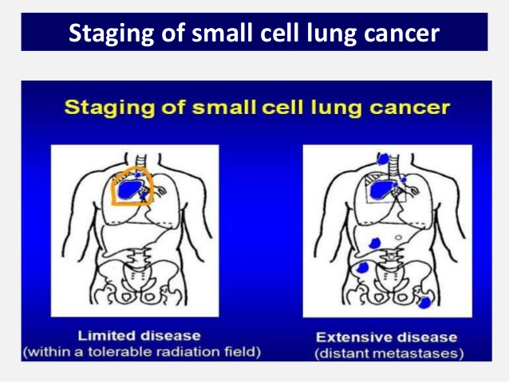
** Tumor가 tolerable radiation field에 들어온다면 limited disease로 생각하고 CCRT
Pulmonary Lymph node
N2 node : LN2~LN9 (contralateral 이면 N3 node가 됨)
N3 node : LN1 (supraclavicular LN)
EBUS로 접근 가능 : 2R/L, 3P, 4R/L, 7, (8), 10R/L, 11R/L, 12R/L
EUS: 5,7,8,9 Mediastinoscopy 로 접근 가능 : (1), 2, 4, 7(ant.), LN 5,6🡪 VATS biospy
Pulmonary Lymph node
ECOG performance score
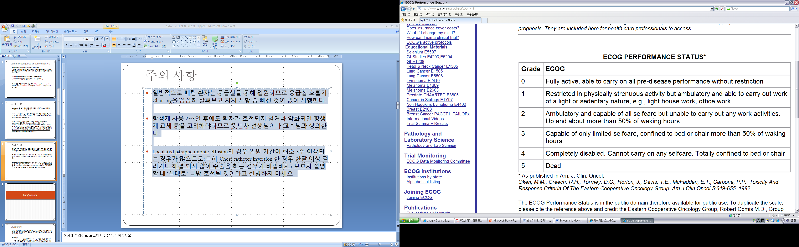
Karnofsky scale (0 = dead)
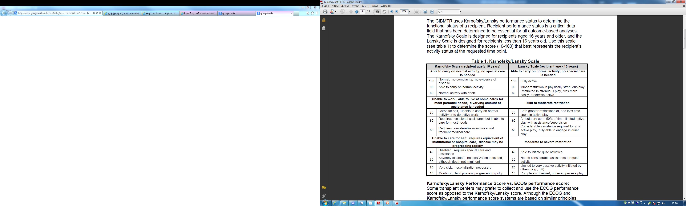
항암치료 반응 평가
RECIST(response Evaluation Criteria In Solid cancer) ver1.1Threshold: PR – Baseline x 0.7, PD- Nadir x 1.2 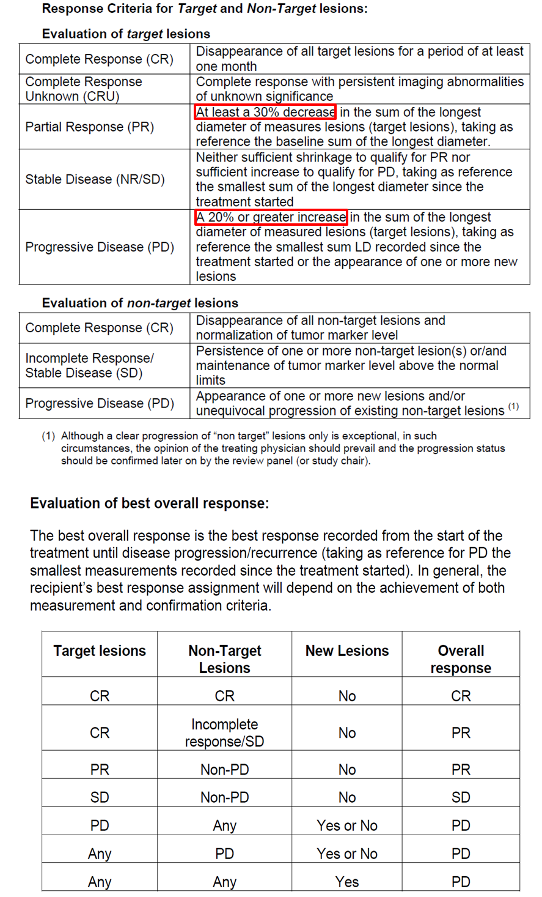
** Highlights of revised RECIST 1.1 (2009)
Number of lesions required to assess tumor burden: maximum of five total Assessment of pathologic lymph node -short axis of ≥ 15mm : measurable and assessable as target lesions-nodes that shrink to <10mm short axis are considered normal Disease progression: target disease of 20% increase in sum, a 5mm absolute increase
Immune Related Response Criteria
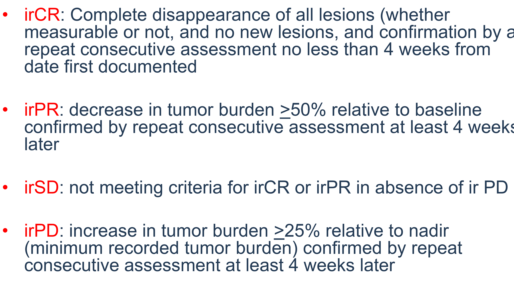
면역 항암제 특이적인 반응들
1. Pseudoprogression: phenomenon in which an initial increase in tumor size is observed or new lesions appear, followed by a decrease in tumor burden
2. Hyerprogression: the accelerated (more rapid than expected) growth or. progression of a cancer after treatment is initiated.
(정확한 기준은 없으나 대개 2달 이내로 2배이상 커지면 hyperprogression으로 봄)
16. lung mass evaluation 하기 위해서 내원, 진단 후 초치료
수술적 치료를 고려할 경우, 진단 및 치료적으로 상의가 필요한 환자는 Lung cancer conference에 올리세요. 조직 검사(PCNB, bronchoscopy)시행후 환자분 퇴원시키지 말고 조직검사 결과를 1~2일 안에 확인하고 바로 다음 검사 진행할 수 있도록 함.
(예상되는 검사에 대해서 환자, 보호자 설명
: 조직검사 확인🡪 PET-CT, Brain MRI 🡪 N2 또는 수술 가능성 있으면 EBUS 고려)
Stage IIB~IV 환자분들 호흡 재활 적극적으로 권장하세요재활의학과에 호흡재활 의뢰 병력) 1. 흡연력 (반드시 pack-years로 기록), 중단했다면 중단하기 전 흡연력 꼭 기록. 2. 직업, 석면 노출 3. 가족력4. 결핵 Hx. 5. Neck, supraclavicular, axillary LN 확인 (LN 에서 조직 검사할 수 있으면 PCNB, EBUS 등 Invasive procedure를 피할 수 있다.)6. SVC syndrome: facial edema, arm swelling검사) 1. Chest CT(E)로 촬영- Enhance하지 않으면 mediastinal LN 평가할 수 없음. 2. Bronchoscopy 시행 3. Bronchoscopy 및 Neck LN에서 조직검사 안되면 PCNB, EBUS (linear, radial)시행 4. Chest CT상 Mediastinal LN 커져 있으면 EBUS로 조직검사 및 Staging할 수 있다.5. 조직 검사상 폐암으로 진단되면 "PET-CT 토르소(조영증강)" 촬영6. N2 region metastasis 의심되면 EBUS로 확인 (수술, CCRT 고려하는 경우) 7. Brain MRI(meta, initial) 촬영 8. NSCLC로 진단되면 EGFR (PNAClamp 원내검사), PD-L1 IHC, ALK(D5F3) IHC, ROS1 fusion, NGS 검사(TMB/MSI, RNA 포함)9. adrenal gl. meta 의심: Basal ACTH. Cortisol. Renin. Aldosterone. Adrenal CT고려 ** N2 병변 있으나 EBUS등 mediastinal LN evaluation 하지 않은 경우 경과기록지에 사유 반드시 기록. NSCLC 치료) ** 자세한 사항은 staff 선생님과 상의
Stage | Treatment |
IA~IIB,IIIA(T3N1) | Operation. 수술 어려울 경우 definitive RT (SABR 고려) |
IIIA | ** Very heterogeneous disease 🡪 Multidisciplinary discussion Neo. CTx(CCRT) + op. + CTx.op + adj. CTx. or CCRTdefinitive CCRT or 전신상태 나쁠 시 palliative CTx.IIIB(N3) 🡪 definite CCRT ± adjuvant Durvalumab (PD-L1: 1% 이상) |
IIIB | |
IV | 항암치료 (Target agent 치료 가능성 확인) |
Brain metastasis | GKS, whole Brain RTx. 고려 |
Bone metatasis | Palliative RTx. |
*SABR : stereotatic ablative body radiotherapy
Stage IV 또는 Stage III (수술, CCRT 못할 경우) | |
주로 adenocarcinoma에서 EGFR –TKI sensitive mutation (+) 인 경우 (EGFR-TKI: 상피세포성장인자 수용제 티로신 키나아제 억제제) (EGFR: chromosome 7번, 7p12-14, exon 28개) | 초치료로 EGFR-TKI 고려. (Iressa/ Tarceva/ Giotrip) 단 stage IIIA 이상에서만 보험됨. **EGFR-TKI sensitive mutation: exon 19 del. and exon 21(L858R) and exon 18(G719X) **EGFR-TKI resistant mutation: exon 20 insertion. T790M ** Osimertinib는 1차치료: 2023.7 보험예정 |
주로 adenocarcinoma, ALK(D5F3) IHC 양성 또는 ALK FISH(+) 15% 이상 참고) mucinous cribriform, signet ring cell cancer with mucin인 경우 ALK(+)가능성 높다 | ALK inhibitor 처방 가능 (Crizotinib, ceritinib, alectinib, brigatinib) ceritinib, alectinib, brigatinib 내성생기면 Lorlatinib 급여 가능 |
EGFR변이, ALK, ROS1 재배열 없을 시 | (stage IV 환자에서 급여 2022.3.2) 1) PDL1 50%이상 🡪 Pembrolizumab 단독가능 2) PDL1 발현과 무관하게 **Non-squamous NSCLC. 🡪 carboplatin + pemetrexed + Pembrolizumab **Squamous NSCLC 🡪 carboplatin +paclitaxel + Pembrolizumab |
**참고) Osimertinib 내성 흔한 원인: C797S 변이
EGFR-TKI : 2~3달마다 반응평가.. Stage IIIA 이상에서 보험
1세대 EGFR-TKI) EGFR과 가역적 결합 | |
타세바(Tarceva) Erlotinib | 100mg/150mg: 식사 최소 1시간 전 또는 식사 후 2시간에 복용 |
이레사(Iressa) Gefitinib 250mg | : 식사와 무관하게 매일 같은 시간에 복용 |
2세대 EGFR-TKI) EGFR과 비가역적 결합 | EGFR과 약제 비가역적 결합 (공유결합) 설사, 피부발진 등 부작용이 1세대보다 심한편 |
지오트립(Giotrip) : Afatinib 40mg, 30mg. 20mg | 공복에 복용 (1st line 이상에서도 처방 가능) |
비짐프로(Vizimpro) :Dacomitinib 15, 30, 45mg | 45mg 시작 권장 (1st line만 보험)` |
3세대 EGFR-TKI) EMSI(EGFR Mutant Specific Inhibitor) | EGFR T790M 변이도 억제. (1nd line도 보험 2024.1.1~) Rebiopsy, liquid biopsy에서 T790M 확인되면 보험. |
타그리소: 오시머티닙(Osimertinib) | 1일 1회, 80mg (40mg으로 감량 가능) |
렉라자: 레이저티닙(Lazertinib) | 1일 1회, 240mg (80mg, 3정) |
Exon 20 insertion (2~3% of NSCLC) | 2차 이상에서 사용 가능 (비보험) |
Mobocertinib (엑스키비티) | EGFR ex20ins–specific TKI |
Amivantamab (리브리반트) | Bispecific EGFR and cMET antibody |
ALK inhibitor (stage IIIA 이상, ALK (D5F3) IHC 양성 🡪 보험)
1세대 ALK inhibitor | ||
젤코리(Xalkori) : Crizotinib 250mg 2C#2
| 1st line 부터 보험 *참고: ROS1 rearrangement에서도 처방 | |
2세대 ALK inhibitor | crizotinib 내성시에는 2nd line 도 보험 처방 | |
자이카디아:세리티닙(Ceritinib) | 1st line 부터 보험, Brain meta에도 효과 | |
알레센사 : 알렉티닙(Alectinib) | 1st line 부터 보험, Brain meta에도 효과 RET rearrangement에서도 효과 (+) | |
알룬브릭 : 브리가티닙(Brigatinib) | 1st line 처방 가능. Brain meta에도 효과 | |
로브레나/로비큐아 : 로라티닙(Lorlatinib) : 급여 | 2세대 ALK inhibitor 내성시 보험가능, Brain meta에도 효과 | |
ROS1 rearrangement | Crizotinib 250mg bid (보험 기준: 국소진행성 또는 전이성 환자) | |
BRAF V600E mutation (NSCLC 1~3%) | Dabrafenib(라핀나: RAF inhibitor) 150mg bid + Trametinib(매큐셀: MEK inhibitor) 2mg bid (보험 기준: 전이성, stage IV 환자) | |
MET exon 14 skipping mutation : NSCLC ~3% | TABRECTA (Capmatinib) 400mg twice daily . 비보험 TEPMETKO, (Tepotinib) 비보험 | |
** EGFR L858R or Exon 19del NSCLC 수술 후 IB~IIIA기 환자들
– ADARUA study : PFS, OS 향상 (OS Hazard ration: 0.49)
: Adjuvant Osimertinib 3년간 복용.
(수술 후 10주, 보조 항암하는 경우 수술 후 26주 이내)
한달 비보험 약값 230만원
Immune check point inhibitor ( stage IIIB 이상, 2차 이상, 고식적 요법)
Immune check point inhibitor | 보험 기준 (면역 억제제 공통) 2nd Line, IIIB, IV 병기 |
옵디보- 니볼루맙(Nivolumab) , BMS 3mg/kg iv 60 min, 2주 간격 (이 경우만 급여 인정) 대개 3~4번 치료 후 반응평가 (PD-1 blocker) | 이전 백금기반 화학요법에 경험이 있는 환자로 질병 진행이 확인된 환자 EGFR, ALK 변이가 있는 환자는 Target tx. 후 질병 진행이 확인되고, 이전 백금 기반 화학요법에도 실패한 경우 IHC 28-8 pharmDx, VENTANA PD-L1(SP263) Assay검사로 PD-L1 10% 이상이면 보험. |
키투루다- 펨브로리주맙(pembrolizumab), MSD 1차 치료 : 200mg, 2차 치료 이상 🡪2mg/kg iv 3주 간격 X 3번 치료 후 반응평가 (PD-1 blocker) | IHC 22C3 pharmDx, VENTANA PD-L1(SP263) Assay 50% 이상시 보험 |
티쎈트릭(tecentriq).Atezolizumab(PD-L1 blocker) 1200mg, 3주 간격, 60min iv | PD-L1 발현 관계 없이 보험 |
Durvalumab (Imfinzi) : PD-L1 blocker (2주 간격) | 백금기반 CCRT후 진행없는 3기 NSCLC adjuvant TX. 보험 기준) VENTANA PD-L1(SP263) PD-L1 1% 이상, CCRT 종료 6주이내 시작, 2주 간격, F/U CT상 SD 이상. 1년간 급여 (weekly 항암제 4번 이상 투여시 급여, 방사선요법이 항암화학요법보다 먼저 종료되면 급여인정 안됨) |
Ipilimumab (Yervoy) : CTLA4 blocker | 보험 안됨 |
면역 항암제 급여 변경 사항 (2022.3.2) 1차 치료에서도 보험 급여 가능 (stage IV)
Pembrolizumab : 최대 2년 (35회)
PD-L1 50% 이상 발현, EGFR 또는 ALK 변이가 없는 진행성(stage IV) NSCLC 1차 치료 🡪 키트루다 단독요법 가능 EGFR 또는 ALK 변이가 없는 전이성 비편평 비소세포폐암 1차 치료 병용요법 (키트루다+페메트렉시드+백금 화학요법, 3주간격) 🡪 4차 이후 키트루다, 페메트렉시드 유지 EGFR 또는 ALK 변이가 없는 전이성 편평 비소세포폐암 1차 치료 병용요법(키트루다+카보플라틴+ 파클리탁셀, 3주간격) 🡪 4차 이후 키트루다 유지
단독 요법) 비소세포페암에서 전체생존기간 중앙값(mOS)를 비교했을 때,
키트루다 투여군은 30개월, 대체약제 투여군은 14.2개월.
병용요법) 비편평 비소세포폐암에서 키트루다 투여군은 22개월, 대체약제 투여군은 10.6개월.
편평 비소세포폐암에서는 키트루다 투여군 17.1개월, 대체약제 투여군 11.6개월.
** Immunotherapy (Immune checkpoint Inhibitor)
Nivolumab(Opdivo) : PD-1 blockerPembrolizumab(Keytruda) : PD-1 blocker Atezolimumab(Ticentriq), Durvalumab(Imfinzi) : PD-L1 blocker
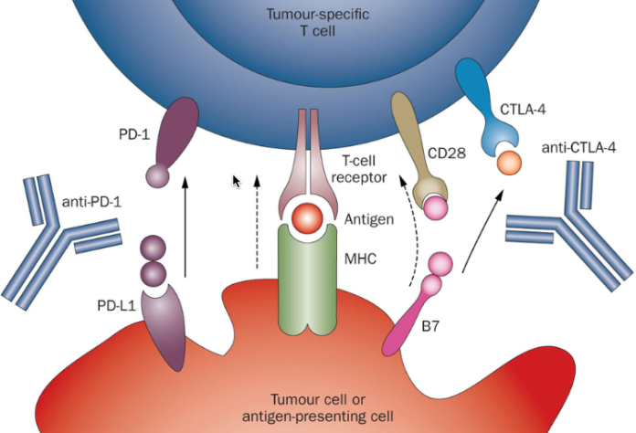
** ipilimumab (Anti-CTLA4 inhibitor) : side effect 심함.흔히 쓰는 약제
Neoadjuvant Chemotx | 주로 cisplatin(carboplatin) + navelbine |
CCRT 약제 | carbo(AUC 2) + Taxol (45mg/m2) weekly |
NSCLC 약제 : 선행화학요법에 효과가 있는 경우 수술 후 보조요법으로 연장투여 가능(총 4주기까지)
선행화학요법
항암요법 | 투여대상 | |
1 | Paclitaxel + platinium | Stage III |
2 | Docetaxel + platinium | |
3 | Gemcitabine + platinium | |
4 | Irinotecan + platinium | |
5 | Pemetrexed + platinium | Stage III(비편평상피세포) |
수술 후 보조요법
항암요법 | 투여대상 | |
1 | Paclitaxel + platinium | Stage II~IIIB |
2 | vinorelbine+ platinium | |
3 | Pemetrexed + platinium | Stage II~IIIB (비편평상피세포) |
동시항암화학방사선치료
항암요법 | 투여대상 | |
1 | Etoposide + platinium | Stage III |
2 | paclitaxel + platinium | |
3 | Pemetrexed + platinium | Stage III(비편평상피세포) |
SCLC 치료
초치료)
SCLC [LS] 🡪 대개는 CCRT 시행 고려 (교수님과 상의)
: Initial Tumor vol.이 커서 1~2 cycle 항암치료 후 RT 시작하기도 함.
(처음부터 CCRT 하지 않는 경우 반드시 사유 기 해야 함)
항암치료는 platinium+ etoposide 총 4~6회
SCLC[ES]: distant meta가 있거나 malignant pleural effusion/pericardial effusion(+)
Tumor 가 RTx field를 벗어나는 경우
항암치료: carboplatin + etoposide+ atezolizumab (2020. 7 기준, 1차, 고식적): 급여인정기간: 1년까지(단, 질병진행시 중단) 급여인정 하되, 1년 내에 최적의 투여기간에 대한 임상결과 미 발표 시 자동 연장하여 최대 2년으로 함.
: 4 cycle of induction 이후 atezolizumab maintenance(1200mg, q 3 weeks)
SCLC T1-2N0M0: 수술 고려Postop. pathologic stage N0이더라도 모든 수술 환자에서 adjunctive CTx. 시행 (중요!!)
3. SCLC 환자에서 PCI(Prophylactic Cranial Irradiation)
- skin, hippocampus sparing : 25Gy/10fx
: Initial therapy 에 반응이 CR,PR 인 LS 또는 ES 환자들에서 PCI를 시행한다.
(PCI 가 brain meta를 줄이고 overall survival을 연장한다. )
: 시행 시점 – initial therapy의 acute toxicity가 resolution 된 후.
: 부작용 : chronic neurotoxicity, 특히 고령환자에서.
단, performance가 나쁘거나 neurocognitive function이 떨어진 환자들에서는
시행하지 않는다.
2nd line 부터 Zepzelca (lurbinectedin) 비보험 처방 가능 (3.2mg/m2, 4mg/vial, 240만원)- alkylating drug that binds to DNA and results in bending of the DNA helix
5. 면역 항암제: 3rd line 이상에서 nivolumab 비보험 처방 가능
2차 이상 약제 (보험)
Cyclophosphamide+doxorubicin+vincristineEtoposide + platiniumIrinotecan + platiniumIrinotecan
5. Belotecan
Topotecan (IV, PO), paclitaxel 17. 폐암환자가 항암치료 받기 위해서 내원. Regimen 변경 시 “항암 동의서” 다시 받으세요. 약제 부작용 설명.동의서에 check하는 거 빼먹지 말고 하세요. 2. 반드시 항암 Set order 이용해서 order 내세요. - 그래야 나중에 환자 항암치료의 flow sheet를 볼 수 있음.3. D8 시행할 때도 반드시 Set order 이용해서 order 내세요. 4. 항암치료가 아닌 supportive care를 원하시는 환자에게는 효과적인 pain조절 및 영양관리를 해주어야 한다. (호스피스를 원하시는지 상담)병력 1. fever, nausea, vomiting 2. 식사하는지, 잠 잘 주무시는지 확인 `` 3. 체중 감소, 호흡곤란 4. Stage 정확하게 기록 (TNM 또는 LS/ES) 5. Performance status (항암 치료 전 기록 반드시 필요함) 검사 1. 외래에서 시행한 CBC, CXR 확인- WBC, Hb. Plt. Cr 꼭 확인. Pneumonia 여부 확인 2. 외래에서 항암 용량 조정했는지 확인. (ex) 75% 감량, 또는 skip & S.C
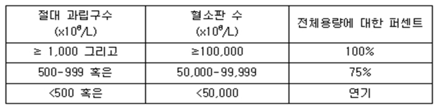
치료 1. 교수님과 상의해서 치료 2. 항구토제 처방. (High, moderate emetic risk 항암제 사용시 – Serotonin R. antagonist) : ramosetron 주사 0.3mg, 경구 0.1mg Ondansteron 주사 8~16mg, 경구 16~24mg (고위험군 5일/중등도 위험군 2일) Granisetron 주사 2mg, 경구 2mg ** high risk: Carboplatin(AUC 4이상), CisplatinLow risk: paclitaxel, docetaxel, pemetrexed, etoposide Minimal emetic risk: nivolumab, pembrolizumab, durvalumab, vinorelbine호흡기 내과 항암치료: regimen은 담당 교수님과 상의 Small cell lung cancer 1st line CTx. ex) Carboplatin + Etoposide + Atezolizumab 2nd line~ CTx ex) Topotecan mono, belotecan mono, taxol mono q 3wks CAV, cisplatin (carboplatin) + irrinotecan Cisplatin (carboplatin) + beletecan2nd line 부터 Zepzelca (lurbinectedin) 비보험 처방 가능3nd line이상 부터는 면역치료(비보험) 고려해볼 수 있음. ** ES 병기: 1st line 티센트릭(atezolizumab)+ Carboplatin/etoposide 병용요법(보험) : 1년 이상의 전체 생존기간 평균 12.3개월, 대조군 대비 사망위험 약 30% 감소 : 4 cycle of induction (carbo + etopo + atezolizumab) 이후 atezolizumab maintenance(1200mg, q 3 weaks)SCLC - Chemotherapy regimen1. cisplatin + etoposide q 3weeksDrug | Dosage | Route | Day | Fluid | Time | Comment |
Cisplatin | 60mg/m2 | IV | D1 | NSS1L50 | 2 | 2hr 전후 washing |
etoposide | 100mg/m2 | IV | D1-3 | 5D50 or NSS500 | 1 | 2hr |
** etoposide : 0.2~0.4mg/ml , 500ml 이상의 수액에 혼합 해야함. 2.carboplatin + etoposide + atezolizumab q 3 weeks (Induction)
Drug | Dosage | Route | Day | Fluid | Time | Comment |
carboplatin | AUC5 | IV | D1 | 5D50 or NSS1L50 | 2 | 1hr |
etoposide | 100mg/m2 | IV | D1-3 | 5D50 or NSS500 | 1 | 2hr |
atezolizumab | 1200mg | IV | D1 |
3. cisplatin + irrinotecan q 3 weeks
Drug | Dosage | Route | Day | Fluid | Time | Comment |
Cisplatin | 60mg/m2 | IV | D1 | NSS1L50 | 2 | 2hr 전후 washing |
irrinotecan | 60mg/m2 | IV | D1, D8 | 5D50 | 1 | 90min |
4. Weekly irrinotecan q 4 weeks (1 cycle: 1주일에 한번씩, 3주동안 맞고 1주 쉬고)
Drug | Dosage | Route | Day | Fluid | Time | Comment |
irrinotecan | 60mg/m2 | IV | W-1,W-2,W-3 | 5D50 | 1 | 90분 |
5. Topotecan q 3 weeks
Drug | Dosage | Route | Day | Fluid | Time | Comment |
Topotecan | 1.25mg/m2 | IV | D1-5 | 5D10 or NSS100 | 1 | 30min |
6. Belotecan (Camtobell) q 3 weeks (Esp. no brain metastasis/ 뇌전이 있으면 보험 안됨)
Drug | Dosage | Route | Day | Fluid | Time | Comment |
Belotecan | 0.5mg/m2 | IV | D1-5 | 5D10 | 1 | 30min |
** Topotecan. Belotecan : Topoisomerase inhibitor
7. cisplatin + belotecan q 3 weeks
Drug | Dosage | Route | Day | Fluid | Time | Comment |
Cisplatin | 60mg/m2 | IV | D1 | NSS1L50 | 2 | 2hr 전후 washing |
belotecan | 0.5mg/m2 | IV | D1-4 | 5D50 | 1 | 30min |
8. CAV q 3 weeks
Drug | Dosage | Route | Day | Fluid | Time | Comment |
Cyclophophamide | 1000mg/m2 | IV | D1 | 5D20 or NSS115 | 3 | 30min |
Doxorubicin | 40mg/m2 | IV | D1 | 5D10 or NSS10 | 2 | 10min |
Vincristine | 1.4 mg/m2 | IVP | D1 | NSS2 | 1 | Bolus, Max 2mg |
9. Carboplatin + ifosfamide q 3 weeks
Drug | Dosage | Route | Day | Fluid | Time | Comment |
carboplatin | AUC =5 | IV | D1 | 5D50 or NSS50 | 1 | 1hr |
ifosfamide | 5 g/m2 | IV | D1 | 5D1L | 2 | |
Mesna | 5 g/m2 | IV | D1 | 5D1L | uroprotectionIfosfamide와 동량 |
**주의: SCLC에서는 Gemcitabine 보험 안됨. 2017년 SCLC에 paclitaxel(taxol)보험 추가: 2차 이상, 고식적 목적재발 시기에 따른 Small cell lung cancer 구분 및 치료 Refractory/resistant relapse: 1차 치료 종료 후 3개월 이내 PD다음약제 반응률 ≤10%Sensitive relapse: 1차 치료 종료 후 3개월 후 PD 🡪 다음약제 반응률 ≤25%6개월 이후에 PD인 경우: 1차때 사용했던 항암제 재 처방. Ref) Harrison’s internal medicine, NCCN 2018. Ver 2.
** 보험 기준
: 항암치료 종료하고 6개월이상 SD했으면 PD되었을 때 그 약제 재사용 가능
Advanced Non-small cell lung cancer (Systemic therapy)** 흔한 예를 들은 것임. 자세한 사항은 Staff 선생님과 상의하세요. 1st line CTx) ex. NSCLC, EGFR 변이(+) 🡪 EGFR-TKI (Iressa/tarceva/giotrip/dacomitinib)NSCLC ALK IHC (+)🡪 ALK inhibitor (Xalkori, ceritinib, alectinib, brigatinib) ROS1 fusion (+) 🡪 Xalkori BRAF V600E (+) : NGS에서 확인된 것만 인정 🡪 Dabrafenib(라핀나: RAF inhibitor) + Trametinib(매큐셀: MEK inhibitor) 타겟이 없는 4기 비소세포폐암 환자: 면역항암제 단독 또는 복합치료 고려 PD-L1 50% 이상 발현, EGFR 또는 ALK 변이가 없는 진행성(stage IV) NSCLC 1차 치료 🡪 키트루다 단독요법 가능 EGFR 또는 ALK 변이가 없는 전이성 비편평 비소세포폐암 1차 치료 병용요법 (키트루다+페메트렉시드+백금 화학요법, 3주간격) 🡪 4차 이후 키트루다, 페메트렉시드 유지 EGFR 또는 ALK 변이가 없는 전이성 편평 비소세포폐암 1차 치료 병용요법(키트루다+카보플라틴+ 파클리탁셀, 3주간격) 🡪 4차 이후 키트루다 유지
** 복합치료인 경우 4차 집중 치료 이후 유지 치료로 전환
2nd line CTx) ex. a. Non-squamous NSCLC 1. EGFR mutation (+) 🡪 1차 약제로 EGFR-TKI 안 쓴 경우 Iressa/Tarceva (Giotrip은 안됨) EGFR-TKI 쓰다가 진행한 경우: Re-biopsy 또는 Liquid biopsy (T790M 변이 확인)🡪 T790M 변이 있으면 Osimertinib 또는 Lazertinib 처방 (cell free DNA로 EGFR T790M 변이 확인🡪 osimertinib만 가능) 2. EGFR mutation (-) 🡪 Systemic immune check point inhibitor (Nivolumab/pembrolizumab/atezolimumab)
🡪 platinium + gemcitabine
or single agent (Alimta, paclitaxel, gemcitabine, docetaxel, vinorelbine)
** 1차약제 EGFR-TKI 쓰다가 2nd line으로 platinium+ Alimta 또는 single Alimta 처방가능b. Squamous cell ca (Alimta가 효과 없음!!) 1. systemic immune check point inhibitor (Nivolumab/pembrolizumab/atezolizumab) 2. taxotere (or docetaxel) or other single agent NSCLC - Chemotherapy regimen1. cisplatin/carboplatin (AUC 5) + pemetrexed q 3weeks (Non-squamous NSCLC)
Drug | Dosage | Route | Day | Fluid | Time | Comment |
cisplatin | 60mg/m2 | IV | D1 | NSS1L50 | 2 | 2hr, 전후 washing |
pemetrexed | 500 mg/m2 | IV | D1 | NSS10 | 1 | 10min |
-Vitamin B12(cobalamine 1000ug) : administered IM. Approximately 1~2wks before the 1st dose of alimta 🡪 Actinamide(Cobalamine) code: 7ACTINA 9주마다 injection (3 cycle 마다)-Folic acid(300~1000ug) : orally daily 1~2 wks before the 1st dose of alimta, continuing unitil 3wks after the last dose of alimta 🡪 Folin 1T (1mg) qd 로 처방. - Dexamethasone : 4mg orally twice daily, Day (-1)~1 : Dexa 0.5mg 8T *6번 (생략 가능)🡪 alimta single 로 하는 경운 2mg 주어도 됨. 2. cisplatin + gemcitabine q 3weeks
Drug | Dosage | Route | Day | Fluid | Time | Comment |
cisplatin | 60mg/m2 | IV | D1 | NSS1L50 | 2 | 2hr, 전후 washing |
gemcitabine | 1000mg/m2 | IV | D1,D8 | NSS15 | 1 | 30min |
3. carboplatin + gemcitabine q 3weeks
Drug | Dosage | Route | Day | Fluid | Time | Comment |
carboplatin | AUC =5 | IV | D1 | 5D50 or NSS50 | 2 | 1hr |
gemcitabine | 1000mg/m2 | IV | D1,D8 | NSS15 | 1 | 30min |
4. cisplatin + docetaxel q 3weeks
Drug | Dosage | Route | Day | Fluid | Time | Comment |
cisplatin | 60mg/m2 | IV | D1 | NSS1L50 | 2 | 2hr, 전후 washing |
Docetexel | 60mg/m2 | IV | D1 | 5D50 or NSS50 | 1 | 1hr |
5. Taxotere q 3weeks
Drug | Dosage | Route | Day | Fluid | Time | Comment |
Docetexel | 75mg/m2 | IV | D1 | 5D50 or NSS50 | 1 | 1hr |
6. EGFR-TKI (4weeks/ 1 cycle)
Drug | Dosage | Route | Day | Fluid | Time | Comment |
Gefitinib | 250mg | PO | Daily | |||
Erlotinib | 150/100mg | PO | Daily | |||
Afatinib | 40/30/20mg | PO | Daily | 설사약 미리 처방 |
7. Alimta q 3 weeks : single Alimta는 2nd line 부터만 보험이 됨.
Drug | Dosage | Route | Day | Fluid | Time | Comment |
pemetrexed | 500 mg/m2 | IV | D1 | NSS10 | 1 | 10min |
8. weekly gemzar (q 3 weeks)
Drug | Dosage | Route | Day | Fluid | Time | Comment |
gemcitabine | 1000 mg/m2 | IV | D1,D8 | NSS15 | 1 | 30min |
9. weekly navelbine(vinorelbine) (q 4 weeks) : microtubule polymerization 억제
Drug | Dosage | Route | Day | Fluid | Time | Comment |
navelbine | 25mg/ m2 | IV | D1,8,15 | NSS10 or 5D10 | 1 | 30min |
10. weekly Taxotere(docetaxel) (q 4 weeks) : microtubule depolimerization 억제
Drug | Dosage | Route | Day | Fluid | Time | Comment |
Docetexel | 25mg/m2 | IV | D1,8,15 | 5D50 or NSS50 | 1 | 1hr |
11.CCRT (Carboplatin + taxol) every week during CCRT (CCRT시 first choice)
Drug | Dosage | Route | Day | Fluid | Time | Comment |
paclitaxel | 45mg/m2 | IV | weekly | 5D50 or NSS50 | 1 | 1hr |
carboplatin | AUC 2 | IV | weekly | 5D50 or NSS50 | 2 | 1hr |
12.CCRT (Cisplatinn + taxol) every week during CCRT (CCRT시 first choice)
Drug | Dosage | Route | Day | Fluid | Time | Comment |
paclitaxel | 45mg/m2 | IV | weekly | 5D50 or NSS50 | 1 | 1hr |
Cisplatin | 20mg/m2 | IV | weekly | NSS1L50 | 2 | 2hr, 전후 washing |
13. Weekly Taxol(paclitaxel): CCRT 할 때 보험 되는 약제
Drug | Dosage | Route | Day | Fluid | Time | Comment |
paclitaxel | 60mg/m2 | IV | D1,8,15 | 5D50 or NSS50 | 1 | 3hr |
3기 NSCLC 치료
1) 수술 불가능 🡪 CCRT 이후 Durvaluamab 고려 (PD-L1 1%이상인 경우)
2) 수술을 고려해볼 수 있는 경우 면역항암제 포함해서 Neoadjuvant CTx 또는
수술 후 adjuvant CTx
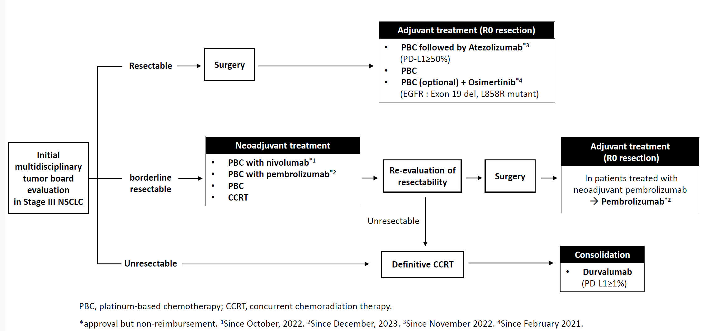
Anti-cancer drug 주요 부작용
1. Iressa. Tarceva, Giotrip 부작용
- 발진. 설사, 피부건조, 여드름(20~60%, 대부분 경미하나 간혹 심각한 상태로 나타나기도 함)
- 간기능 이상(1~10%)
- 간질성 폐질환(<1%) : 호흡곤란등의 증상을 나타내며 사망에 이르게 하는 치명적인 부작용
- 결막염, 안검염
- 와파린 등을 복용하는 환자에게서 예상치 못한 출혈성 경향.
** Giotrip(afatinib) : 2nd generation EGFR-TKI
: 설사, 피부 발진 등 부작용이 더 심하지만 약물 중단할 정도로 심한 경우는 드물다.
** afatinib 처방시 설사약 처방약 처방 및 교육
하루 4번~6번이상 설사 : loperamide 4mg(2T) 즉시 복용이후 설사날때마다 또는 매 4시간마다 1T 씩 복용, 하루 최대 10T. 12시간동안 설사 안나면 loperamide 중단하루 7번이상 설사 증가시 : 입원. Afatinib 중단설사 호전되면 afatinib 10mg으로 시작
2.Cisplatin - 오심/구토(76~100%), 골수억제(25~30%), 간독성,신독성,이독성, 탈모
3.Carboplatin - 통증(23%), 오심/구토(중등도), 탈모(2~3%)
Cisplatin 보다 오심/구토,신독성은 덜 하지만 골수억제 더 심함.
4.Taxotere(docetaxel) – 신경근골격계 쇠약감(66%), 근육통(3~23%), 감각신경이상(20~58%),탈모
5.Alimta(pemetrexed) – 흉통(40%), 피로(87%), 탈모(11%), 발진(22%), 오심,구토(25-58%),
호중구 감소(11-58%)
6.Taxol (Paclitaxel) - 말초 신경병증(47~70%), 탈모(87%), 호중구, 백혈구 감소증,빈혈
7.Campto (Irinotecan) – 치료후기 설사(83~88%), 초기설사 (43~51%), 복통(57~68%)
부교감신경독성(47%-타액분비증가,발한, 연동운동항진)
8.Navelbine (vinorelbine) – 정맥염 !!🡪 되도록 chemoport insertino하고 CTx.시작,
오심(44%), 심각한 골수 억제, 간수치 상승(67%)
9.Gemzar (gemcitabine) – 오심/구토(64-71%), 백혈구감소증(62-71%), 탈모(15-18%)
10.Etoposide (etoposide)– 탈모(8-66%), 난소부전(38%), 백혈구 감소증(60-91%), 오심구토(43%)
11. Xalkori(Crizotinib) – 시각장애(>25%) : 시력손상, 광시증. 시야흐려짐. : 첫 2주이내 흔함.
오심,구토, 부종. 신경계이상반응(13%)
** Liquid biopsy
EGFR (cell free DNA) : BV529
: 1세대 EGFR-TKI 치료 후 PD 되었을때 Serum 에서 cell free DNA를 뽑아서 EGFR 변이 확인
T790M 확인되면 osimertinib, Lazertinib 처방 가능.
<약제별 보험기준>Iressa /Tarceva : Stage IIIA 이상 ( 한달 약값 180만원🡪 중증 5% : 7만원 정도)EGFR 활성 변이가 있는 국소진행성 또는 전이성 NSCLC 1차 치료 이전 화학요법에 실패한 국소 진행성 또는 전이성 비소세포폐암, 백금계 약물을 기본으로 하는 1차 화학요법의 4주기 후 질병진행이 없는 국소 진행성 또는 전이성 비소세포폐암의 유지요법Giotrip® (afatinib): exon 19 del 있는 경우에는 OS benefit. 도 있음. EGFR 활성 변이가 있는 국소진행성 또는 전이성 NSCLC 치료에서 보험, 1차 이상 오시머티닙(Osimertinib) : 조직검사상 T790M 변이가 확인된 경우, 2차 이상 Alimta (pemetrexed) : Stage IIIA 이상, Non-squamous NSLCL에서 1차로서 platinium 과 병용시 보험. : maintenance tx. : NSCLC. NOS에는 보험 안됨. Gemcitabine : Stage IIIA 이상 Belotecan : brain meta 있으면 보험 안됨. Single agent therapy : PS 2 또는 고령 (70세 이상) 에서 사용시 보험. CCRT (concurrent Chemotherapy radiation therapy)시 보험 인정 약제 Platinium + etoposide Platinium + paclitaxel Platinium + Pemetrexed Single Alimta는 2nd line 이상부터 보험됨. (stage IIIA 이상에서)Alimta+platinium은 1st line 이상 보험 Erlotinib, getifinib 둘다 stage IIIA 이상에서만 처방 가능 Erlotinib(Tarceva)만 EGFR wild type으로 1차 화학요법 치료 후 질병상태가 stable한 경우 maintenance therapy로 보험이 됨. EGFR-TKI 교차 치료 🡪 법적 비급여 Ex) IRS 사용하다가 PD 되어서 중단한 환자 만약 IRS에 대한 반응이 좋았다면 주사 항암치료 후 다시 tarceva 비보험으로 처방가능
** 폐암 유지 요법 (maintenance therapy)
Alimta 유지요법 보험 기준 (3주마다) : Non squamous NSCLC stage IV 환자에서만 보험됨 백금계 약물 기본 1차 항암요법 4주기 이후 질병진행이 없는 상태(CR, PR, SD) Squamous를 제외한 국소 진행성 또는 전이성 NSCLC의 유지요법: 즉 switch maintenance 인 경우는 CR, PR, SD까지 보험 인정 Alimta를 포함한 1차 화학요법 이후에는 질병의 상태가 CR, PR, SD: 즉 continuous maintenance인 경우는 CR, PR, SD 보험 인정
** EBUS 적응증: 수술 및 CCRT를 고려하는 환자(RTx field결정)
NCCN 2017)
Patients with suspected nodal status should be biopsied by EBU, EUS, navigational bronchoscopy, or mediastinoscopy.
In patients with solid tumors less than 1cm or for nonsolid tumors (ie.GGOs) less than 3cm, pathologic mediastinal LN evaluation is not required if the nodes are FDG-PET/CT negativeMediastinal evaluation can be considered in patients with clinical stage IA disease (T1ab, N0).Normal size mediastinal LN: 16% (14/90) : occult N2 or N3
참고(AMC Ix)
PET uptake 양성인 LN가 있는 경우Mediastinal LN에 PET uptake 음성인 경우CT상 LN의 short axis diameter >1 cm인 경우CT상 LN의 short axis diameter가 5~9mm인 경우이면서 다음 중 한가지를 만족하는 경우-central tumor (종양의 중심이 CT의 내측의 1/3에 위치함)-primary tumor의 FDG uptake가 faint한 경우-PET에서 N1 node에 uptake가 있는 경우
18. 폐암 환자가 brain meta가 의심되어서 입원/svc syn. 환자
(Brain metastasis work-up)
병력
1. Headache, nausea, vomiting, 시력 저하. Dizziness
2. motor weakness, paresthesia
검사
1. Brain MRI
2. Leptomeningeal seeding 의심되면 CSF tapping 고려 🡪 cytology, cell block 검사.
(실제로 시행여부는 staff과 상의)
치료
1. 뇌압 감소 및 brain edema 감소
: dexamethasone 5mg (1@) q 12hr iv
Other ex) dexa 10mg 🡪 4mg q 6hr 🡪 slowly tapering
Merit of dexa) least mineralocorticoid effect. Least risk of infection or cognitive dysfunc.
: Glyfurol 200ml/BT q 8hr iv
🡪 5일정도 full dose 로 쓰다가 tapering
2. 병변이 다발성이고 큰 경우 : Whole Brain Radiation Therapy (WBRT): 방사선 종양학과 consult
3. gamma-knife 고려 (병변 10개 이하, 신경외과와 상의)
** Gamma-knife surgery (GKS)
: SBRT(stereotactic body radiation therapy: SBRT) -정위적 방사선 치료
보험기준)
1) ICP 상승되어 있으면 금기.
2) 원칙상은 10개 이하. 일반적으로 5cm 이하
3) 여명이 3개월 이상. Ex) GKS하고 퇴원 못하고 3개월이내 사망시 삭감.
** 크기, 개수 상관 없이 한 번 수술하는 비용은 같다.
3개월 후 MRI F/U
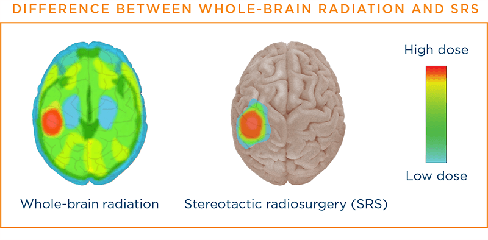
Leptomeningeal metastases
: carcinomatomeningitis and meningeal
carcinomatosis,
refers to the spread of malignant cells through
the CSF space
** SVC (Sup. vena cava) syndrome
얼굴, 상지 부종이 있고 central mass, paratracheal stripe 두꺼워져 있는 경우 의심.
치료) Bed rest with head elevation, IV line은 하지에 잡는다
원인 질환 치료 (항암치료, 방사선 치료 고려)
Chemoport를 해야 하는 경우 femoral vein 에 삽입
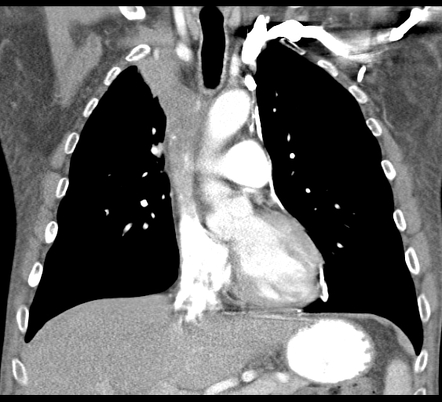
19. 폐암 치료 중 BM depression/ Neutropenic fever로 내원.
병력
항암치료 기록발열(Peak temp.)Infection (ex. Pneumonia) 확인
검사
CBC. L-ADM, ESR/CRP, pro-calcitoninCulture study, chest PA 치료 BM depression 있으면서 발열있으면 일단 Antibiotics ( pseudomonas cover) start. Ex) cefepime + amikacin Tazocin + ciprofloxacinHydrationNeutropenia 가 심한 경우 🡪 G-CSF: lenograstim/filgrastim
(보험기준)
고형암에 대해 항암요법을 받고 있는 환자의 호중구감소증의 경우 호중구수 500/㎣미만에서 시작하여
1,000/㎣까지 투여하는 경우 인정
단, 발열을 동반한 호중구감소증(febrile neutropenia)환자에서는 시작시기를 호중구수 1,000/㎣ 미만,
종료 시기를 3,000/㎣까지 인정
Infection 가능성이 낮고 cancer fever 가능성이 높은 경우는 NSAID 고려Mesulid/naproxen/Vimovo(naproxen+esomeparzole)등. 20. 천식 급성 악화로 내원*중요) 중등도/중증 급성 악화가 있는 경우 적극적으로 Systemic steroid 를 사용하라. (입원할 정도의 급성 악화면 steroid 꼭 써라 !! )천식 급성 악화의 많은 원인이 처방 받았던 흡입제를 잘 사용하지 않은 것임. URI 등 급성악화의 원인을 찾고 severity를 평가한다. 병력1. 흡입제를 잘 사용했나?2. 평소 steroid 복용했는가?3. 개인병원에서의 치료 확인- 항생제, steroid 복용? 4. 흉부 압박감, 기침, 야간 증상, 호흡곤란 빈도 5. severity 평가 - 호흡곤란 정도, 의식, 호흡수, 부호흡근사용. Wheezing, PEFR, ABGA, SpO26. 비염, 충농증, 알러지. 아토피 병력, 최근 비증상의 악화7. 악화 인자에 노출 : 먼지, 꽃가루, 아스피린, NSAID 검사1. PFT, BDR, DLCO, FENO --> 천식을 진단하고, 중증도를 평가하기 위해 시행. Local에서 천식을 진단받았으나, COPD 등 다른 airway disease일 가능성이 있음.2. Chest PA, 필요시 Chest CT 시행 --> 폐실질 병변에 의한 호흡곤란 여부 확인 필요3. CBC --> Eosinophil count를 확인하여 천식의 phenotype을 구별 - 호산구성 천식 여부 확인4. Total IgE, Allergen specific IgE - D1:Der.p, D2: Der.f --> 천식의 phenotype 구별 - 알레르기성 천식 여부 확인 5. P.N.S series --> 부비동염 여부 확인. 천식은 Chronic rhinosinusitis가 동반되어 있는 경우가 있음. CRS가 천식 악화에 기여하기 때문에 항히스타민제로 CRS 증상을 조절해 주는 것이 도움됨. 6. SpO2 check. ABGA (응급실에서 한번만 시행하면 됨), PEFR 확인 (예.응급실 PEFR 200L/min) 치료 1. SaO2 92% 이하면 산소 투여 2. Systemic steroid 용량은 Methylprednisolone iv 40mg q24h로 투여. 환자 중증도에 따라 용량 조절 필요. 용량과 사용기간은 교수님과 상의.3. 폐렴 등 infection이 의심되면 항생제 사용 4. Atrovent, Ventolin 네불라이져 q8h로 사용. Pulmicort 네불라이져 q12h로 사용. 5. 평소 사용하던 흡입제를 올바른 방법으로 사용하는지 확인. 필요시 약제팀에 의뢰하여 흡입기 교육 실시. 올바른 방법으로 흡입제 사용이 가능하면, 네불라이져는 중단하고 흡입제만 사용.6. 기침, 가래가 심할 시, anycough, cough syr, mucosten 등으로 증상 조절7. Systemic steroid를 사용하므로, anti-ulcer medication. systemic steroid를 단기간으로 사용함으로 예방적 septrin 처방은 필요하지 않음. 8. 증상 호전추세면, Systemic steroid를 경구약으로 변경하여 퇴원 진행 ** 산소 치료 target: SpO2 93~95%
스테로이드의 전신적 사용 |
반적으로 전신적 스테로이드를 증상완화제로 생각하지는 않으나 심한 급성악화 시 천식악화의 진행을 예방하며, 응급실 방문 횟수 및 입원율, 응급실 방문 후 조기 재발률 등을 낮출 수 있다. 급성 천식의 경우 전신적 스테로이드의 투여 효과는 4-6시간이 경과하여야 나타나게 되며 경구투여가 정주법보다 선호된다. 급성악화에 대한 경구 스테로이드의 전형적인 단기 치료는 프레드니솔론(prednisolone) 15-50mg/일의 용량을 악화의 중증도에 따라 3-10일간 투여하는 것이다. 증상이 소실되거나 폐기능이 기존의 수준으로 호전되었을 때에 투여를 중단하거나 점진적으로 용량을 감량할 수 있으며 그동안에도 흡입 스테로이드의 투여는 지속되어야 한다. 스테로이드의 근육 내 주사는 경구 스테로이드와 비교하여 재발 방지 효과가 우월하지 않은 것으로 알려져 있다. |
*** FENO (fractional exhaled nitric oxide, FeNO) 호기산화질소 측정천식의 객관적인 평가 도구로서 폐기능 검사에 보조적으로 사용호산구성 기도염증을 반영하는 생체지표 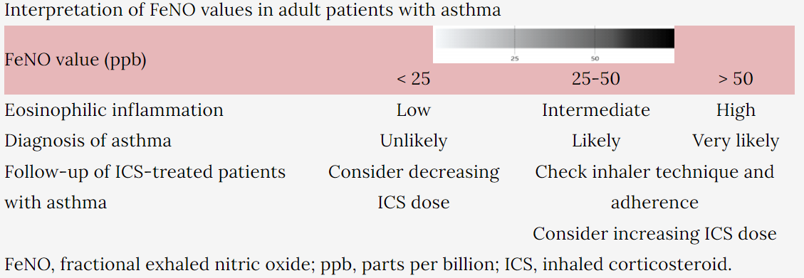
폐기능 검사)
절대 금기)
i. 최근 3달 이내에 안과 수술, 개심술, 개복술, 뇌졸중, 심장마비, 심근경색증, 기흉, 망막박리, 대동맥류가 있었던 경우
ii. 과호흡 혹은 최대 노력호흡이 문제가 될 수 있는 질환 (모야모야병, 반복 자발기흉)
iii. 현재 결핵 등 호흡기감염을 갖고 있거나 이에 노출된 가족
iv. 지난 한달 내 대량 객혈이 있었던 경우
v. 수축기 혈압 200 mmHg 초과 혹은 이완기 혈압 140 mmHg 초과
기관지 과민성) BDR : FEV1 12% & 200ml 이상 변화
유발검사) 만니톨은 FEV1 15% 이상 감소, 메타콜린은 20% 감소
(급성 천식악화의 경우 FEV1이 감소되어 있는 경우가 많으므로 천식 유발검사는 시행하지 않는다)
운동유발검사)
운동전후의 폐기능 변화를 측정: 보통 10% 경사에서 3~5 마일의 속도로 6~12분 달리기
운동전에 비해서 FEV1 10% 이상 감소하면 양성 (4마일은 6.4km)
** 중증천식에서 생물학적제제 (Biologics)
- Xolair (Omalizumab): Anti-IgE antibody (면역글로불린 E 기저치에 따라, 1회 75~600mg을 매 2주 간격 또는 매 4주 간격으로 피하 투여)
- Nucala (Mepolizumab): Anti-IL5 antibody (1 mL (약 100 mg)을 매 4주마다 상완, 허벅지, 또는 복부에 피하 주사)
- Cinquir (Reslizumab): Anti-IL5 antibody (3mg/kg으로 4주에 1회, 20~50분간 점적 정맥주입)
- Dupixent (Dupilumab): Anti-IL4Ra antibody (초회 용량은 600mg (300mg을 다른 부위로 연속 2회) 투여하고, 이후 유지 용량으로 300mg을 2주 간격 투여)
- Fasenra (Benralizumab): Anti-IL5Ra antibody (최초 3회 용량은 4주마다 1회 피하 투여하며 그 이후부터는 8주 간격으로 투여)
: 아직까지 어떤 환자에게 어떤 생물학적제제를 사용해야 하는지 정확한 가이드라인은 없음. 현재까지의 연구결과를 기반으로 생물학적제제를 선택함.
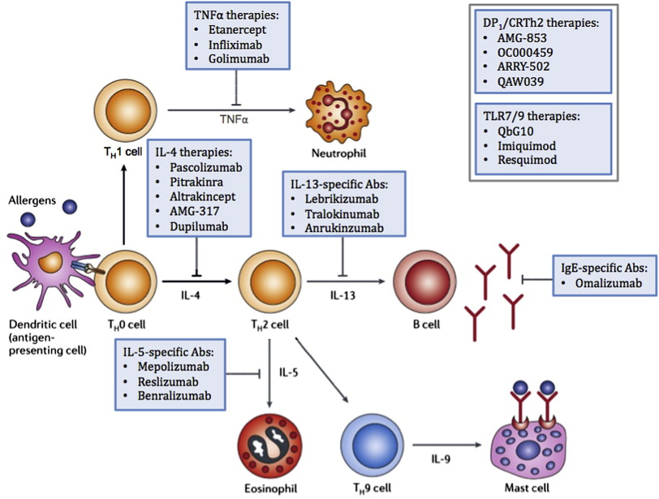
표2. 천식 급성악화의 중증도 분류
|
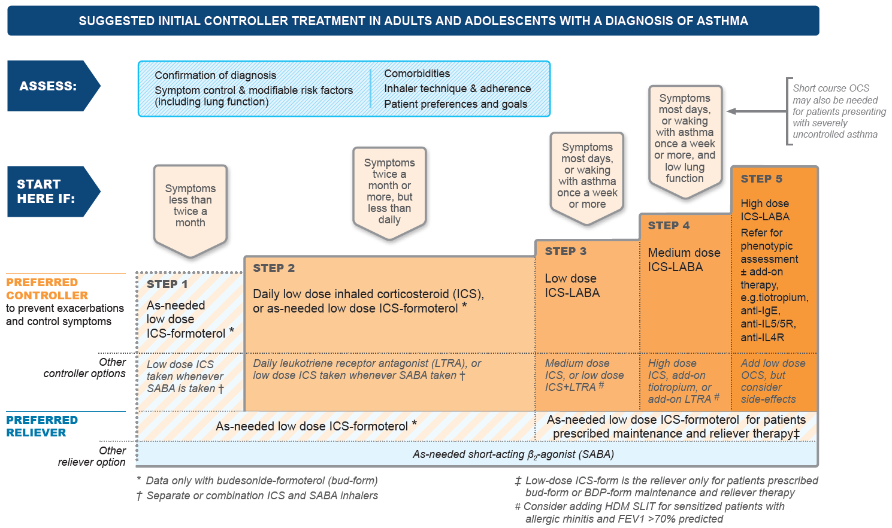
21. 기관지 확장증 환자가 발열, 기침 가래 악화로 내원Bronchiectasis: a long-term condition where the airways of the lungs become widened, leading to a build-up of excess mucus that can make the lungs more vulnerable to infection.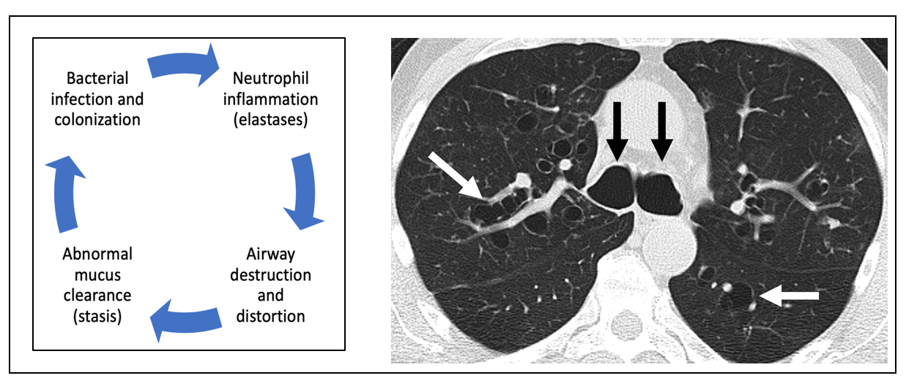
병력1. 호흡곤란 정도, 기침 증가 여부, 가래 색깔, 양, 점도 등 평가
2. 과거 입원력, sputum culture 및 sensitivity 검사 결과 확인
(pseudomonas 감염 과거력 확인)
폐구균 백신(prevena 13, 12만원) 여부 확인 🡪 접종 안 했으면 퇴원하기 전 시행*prevena13은 T cell memory를 만들기 때문에 10년이상 면역력이 유지되고 현재까진 평생 한번만 맞으면 된다. - prevena 13이 폐구균 폐렴중 70~75% 예방, 전체 폐렴중 폐구균에 의한 폐렴 30% 🡪 전체적으로 21%의 폐렴을 예방할 수 있다.
검사
1. chest PA, Routine lab. ESR/CRP. Procalcitonin
2. fever study
3. sputum stain/culture 결과 확인.
🡪 Tbc/NTM 또는 CRPA (carbapenem resistant pseudomonas aeruginosa ) 확인.
치료
1. 원인균주에 따라서 항생제 치료
Ex) pseudomonas cover 해야하는 경우
- cefepime (or ceftazidime) + Amikacin (+clarithromycin)
- cefepime (or ceftazidime) + ciprofloxacin (moxifloxacin)
- Tazo/Pip ± ciprofloxacin (moxifloxacin) or Amikacin
22. 비전형적 폐렴, 간질성 폐질환 의심되는 환자가 입원 (IPF 급성 악화 가능성)병력 1. 흡연력, 근무 환경(먼지) 변화, Reflux2. 최근 여행 다녀왔는지, 이사했는지?3. 애완 동물. 가축, 조류에 노출. 성묘, 벌레 물린 적 있는지? 3. joint pain, swelling, dry eye, dry mouth, Raynaud's syndrome, LN enlargement🡪 류마티스 질환/결체 조직 질환 유무 확인4. 약제(amiodarone, 항암제, 영양제 등) , 피부 및 관절 증상 (ILD의 1/3은 CTD원인)5. 농약, 제초제, 시멘트 노출력, old film 과 비교검사1. ANA(정량), RF, CK, anti-CCP 등 검사 시행. (류마티스 검사 항목 참고) -vasculitis 의심되면 ANCA: c-ANCA(PR3-ANCA), p-ANCA(MPO-ANCA) 2. HIV, Triple Ab. ESR/CRP/procalcitonin, ABGA4. Fever study, Respiratory virus 검사, Mycoplasma, Legionella 검사, AFB stain/culture 시행 5. CHEST CT (E) 3D 시행 - HRCT code가 우리병원엔 없다. 6. 가능한 경우 Bronchoscopy- BAL, TBLB 고려 7. 가능한 경우 PFT& BDR & DLCO 시행 8. BAL, TBLB 시행 어렵고 진단이 확실하지 않은 경우 VATS biopsy 고려BAL : lymphocyte dominant(>40%)🡪 HP, BOOP, NSIP, CTD associated ILD 시사 (Not IPF)steroid에 반응이 좋을 가능성 높다 CD4/CD8 ratio : Sarcoidosis, HP 의심될 때만 보험이 됨. 치료1. 항생제 cover (결핵 배제할 수 없으면 quinolone 대신 cepha 계통약제 사용)2. 환자 상태 악화시 교수님과 상의해서 steroid 사용 여부 및 사용 시점 결정 - 되도록이면 BAL 또는 조직검사 시행 후 steroid 사용 권고. Ex) IPF 급성 악화 🡪 steroid pulse therapy (methylPd 500mg~1g qd x 3일 🡪 이후 Pd 0.5~1mg/Kg 유지) 이때 Bactrim과 anti-ulcer medication 같이 해주어야 한다. Steroid 용량 및 사용 기간은 교수님과 상의한다. **Bactrim : Prednisone 20mg 4주 이상 쓸 경우 bactrim 1T 처방 (PJP 예방)
-중환자실 치료시: Polymyxin B hemoperfusion 고려 (oxygenation 개선)
IPF 환자, 보호자에게는 IPF의 예후 및 폐이식에 대한 설명. IPF 치료 약제: Pirfenidone(Pirespa®) : TGF-β inhibitor – 항염증. 항섬유화, 항산화의 복합작용. 폐기능감소완화성인: 1회 200mg, 1일 3회. 반응과 내약성에 따라 2주 간격으로 1회 200mg씩 증량 하여 1회 600mg, 1일 3회(1일 1800mg)까지 증량 가능 ** Pirfenidone 경구제 보험기준 (품명: 피레스파정 200밀리그램) 2019.1.1
○ 투여대상: 고해상흉부전산화단층촬영(HRCT)과/또는 수술적폐조직생검(surgical lung biopsy)으로 확진된 특발성폐섬유증환자 다음 조건을 만족시켜야 함.
1) FVC 90% 이하이거나 DLco 80%이하,
2) FVC 90% 초과 및 DLOC 80%초과 환자 중 폐 기능 저하(연간 FVC 10%이상 또는 연간 FVC 200ml 감소시), 임상증상 악화, 흉부영상 악화 소견 중 2가지 이상 해당하는 경우 보험.
단, 폐쇄성기도질환, 교원성질환, 다른 원인으로 설명되는 간질성폐질환 및 폐이식대기등록 환자는 투여대상에서 제외함.
부작용) 광과민증(51.7%), 식욕부진(23.0%), GPT 상승(20.0%), 위불쾌감(14.0%), 구역(12.1%)
참고) Nintedanib (Ofev): VEGFR, FGFR, PDGFR triple tyrosine kinase inhibitor – FDA 승인
Rheumatic ds. Connective tissue disease감별 진단 위한 검사
이러한 ds.와 관련된 ILD 환자는 IFP와 달리 steroid에 반응이 좋을 수 있다.
Antibody | 주요 감별질환 |
ANA(anti-nuclear Ab) 정밀 | (+) 나오면 titer 검사 |
ANA(anti-nuclear Ab) titer | 1: 160 이상일때 의미 있음 |
RA factor (정량)Anti-CCP | RA |
Anti-ENA(Jo-1) | Polymyositis |
Anti-smooth muscle Ab(정밀) | SLE |
Anti-DNA AbAnti-ENA(smith) Ab | SLE specific Ab |
Anti-ENA(SS-A(Ro)) Ab | SLE, Sjogren’s syndrome |
Anti-ENA(SS-B(Ra)) Ab | SLE, Sjogren’s syndrome |
Anti-cardiolipin Ab IgG(확진) | SLE, 항인지질 증후군 |
Anti-cardiolipin Ab IgM(확진) | SLE, 항인지질 증후군 |
Anti-ENA(scl-70, topoisomerase-1)Anti-ENA(Centromere) | Systemic sclerosis |
Anti-Neutrophil cytoplasmic Ab(ANCA) Titer c-ANCA: PR-3 Ab.(proteinase 3) p-ANCA: MPO Ab.(myeloperoxidase) | Wegener’s granulomatosis (granulomatosis with polyangiitis): c-ANCAChurg-Strauss syndrome(p-ANCA) |
간질성 폐질환(interstitial lung disease)
폐간질은 폐포상피세포와 내피세포와 그 기저막, 이를 둘러싼 결체조직 및 모세혈관과 림프관들을 모두 포함한다. 간질성 폐질환 간질을 주로 침범하는 비종양성, 비감염성 질환들을 총칭하지만, 이들 질환의 대부분은 간질뿐만 아니라 그 주위의 조직과 폐포 내에도 병변을 동반한다.
Table 1) Major Categories of Alveolar and Interstitial Inflammatory Lung Disease | |
Lung Response: Alveolitis, Interstitial Inflammation, and Fibrosis | |
Known Cause | |
Asbestos Fumes, gases Drugs (antibiotics, amiodarone, gold) and chemotherapy drugs Radiation Aspiration pneumonia | Residual of acute respiratory distress syndrome Smoking-related -Desquamative interstitial pneumonia -Respiratory bronchiolitis-associated interstitial lung disease - Langerhans cell granulomatosis (eosinophilic granuloma of the lung) |
Unknown Cause | |
Idiopathic interstitial pneumonias Idiopathic pulmonary fibrosis (usual interstitial pneumonia) Acute interstitial pneumonia (diffuse alveolar damage) Cryptogenic organizing pneumonia (bronchiolitis obliterans with organizing pneumonia) Nonspecific interstitial pneumonia Connective tissue diseases Systemic lupus erythematosus, rheumatoid arthritis, ankylosing spondylitis, systemic sclerosis, Sjögren's syndrome, polymyositis-dermatomyositis Pulmonary hemorrhage syndromes Goodpasture's syndrome, idiopathic pulmonary hemosiderosis, isolated pulmonary capillaritis | Pulmonary alveolar proteinosis Lymphocytic infiltrative disorders (lymphocytic interstitial pneumonitis associated with connective tissue disease) Eosinophilic pneumonias Lymphangioleiomyomatosis (LAM) Amyloidosis Inherited diseases Tuberous sclerosis, neurofibromatosis, Niemann-Pick disease, Gaucher's disease, Hermansky-Pudlak syndrome Gastrointestinal or liver diseases (Crohn's disease, primary biliary cirrhosis, chronic active hepatitis, ulcerative colitis) Graft-versus-host disease (bone marrow transplantation; solid organ transplantation) |
Lung Response: Granulomatous | |
Known Cause | |
Hypersensitivity pneumonitis (organic dusts) | Inorganic dusts: beryllium, silica |
Unknown Cause | |
Sarcoidosis Granulomatous vasculitides Granulomatosis with polyangiitis (Wegener's), allergic granulomatosis of Churg-Strauss | Bronchocentric granulomatosis Lymphomatoid granulomatosis |
<원인을 모르는 간질성 폐질환의 빈도> : IPF는 전체의 22%
Table 2) Estimated Relative Frequency of the Interstitial Lung Diseases | |
Diagnosis | Relative Frequency, % |
Idiopathic interstitial pneumonias | 40 |
Idiopathic pulmonary fibrosis | 55 |
Nonspecific interstitial pneumonia | 25 |
Respiratory bronchiolitis-ILD and desquamative interstitial pneumonia | 15 |
Cryptogenic organizing pneumonia | 3 |
Acute interstitial pneumonia | <1 |
Occupational and environmental | 26 |
Sarcoidosis | 10 |
Connective tissue diseases | 9 |
Drug and radiation | 1 |
Pulmonary hemorrhage syndromes | <1 |
Other | 13 |
<간질성 폐질환 한글 병명>
Idiopathic interstitial pneumonia | 한글 병명 |
IPF(UIP) | 특발성 폐섬유증 |
NSIP | 비특이적 간질성 폐렴 |
COP(과거 BOOP) | 특발성 기질화 폐렴 |
AIP | 급성 간질성 폐렴 |
RB-ILD | 세기관지 간질성 페렴 |
DIP | 박리성 간질성 폐렴 |
LIP | 림프양 간질성 폐렴 |
Interstitial lung disease (ILD), or diffuse parenchymal lung disease (DPLD), is a group of lung diseases affecting the interstitium (the tissue and space around the air sacs of the lungs.)
It concerns alveolar epithelium, pulmonary capillary endothelium, basement membrane, perivascular and perilymphatic tissues.
<IPF와 NSIP 구분>
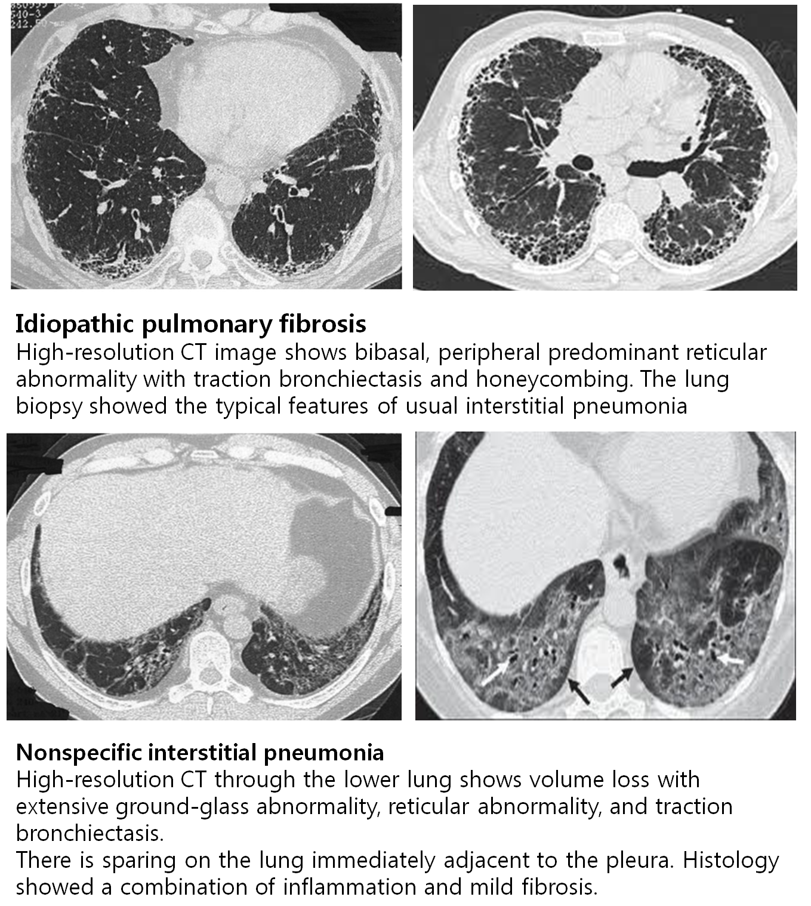
Two primary forms of NSIP — cellular and fibrotic. The cellular form is defined mainly by inflammation of the cells of the interstitium. The fibrotic form is defined by thickening and scarring of lung tissue
** IPF, fibrotic NSIP가 사진상으로 감별이 어려운 경우 VATS biopsy도 고려
** Major criteria 모두, Minor criteria 3개이상 만족할 경우 Clinical IPF 가능성이 높다.
IPF 진단 flow |
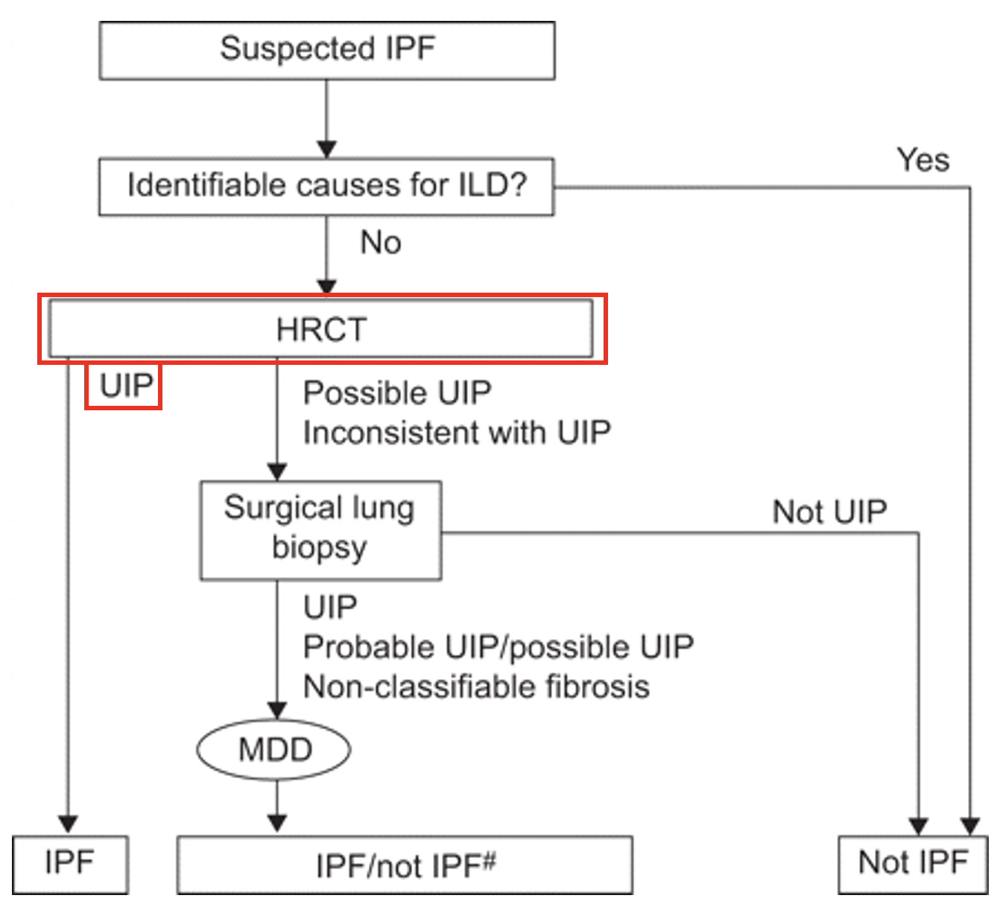 |
High resolution computed tomography criteria for UIP pattern
UIP pattern(all four feautures) | Possible UIP Pattern( all three features) | Inconsistent with UIP patttern(any of the seven features) |
Sublpleural basal predominance | Subpleural basal predominance | Upper or mid lung predominance |
Reticular abnormality | Reticular abnormality | Peribronchovascular predominance |
Honeycombing with or without traction bronchiectasis | Absence of features listed as inconsistent with UIP pattern(see third column) | Extensive ground glass abnormality (extent > reticular abnormality) |
Absence of features listed as inconsitent with UIP | Profuse micronodules(bilateral, predominantly upper lobe) | |
Discrete cyst(multiple, bilateral, away from areas of honeycombing) | ||
Diffuse mosaic attenuation/ air-trapping (bilteral in three or more lobes) | ||
Consolidation in bronchopulmonary segments(lobes) |
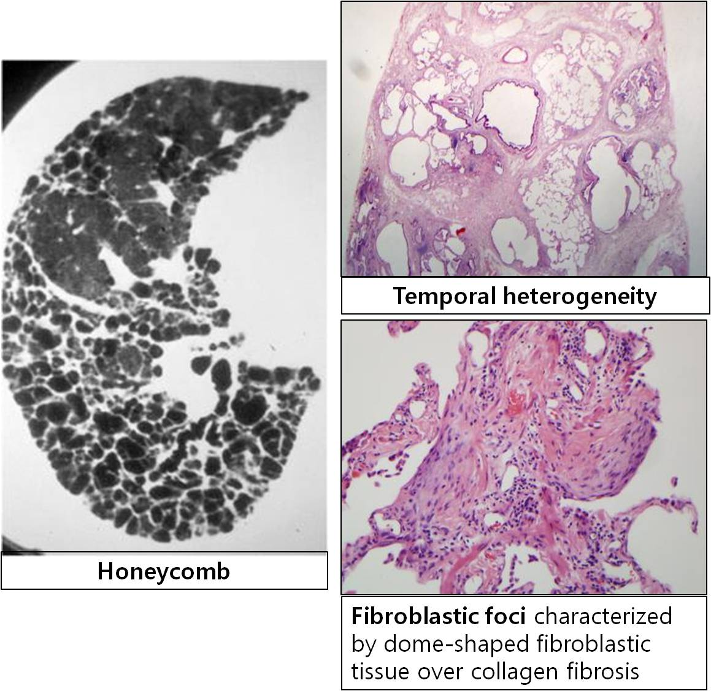
CPFE (combined pulmonary fibrosis and emphysema) lung fibrosis와 emphysema 동반 pul. HTN, 폐암 동반 많음. 효과적인 약이 없으며 예후가 나쁨 (5년 생존률 35~80%)중증인 경우 폐이식만이 유일한 치료PFT/BDR, DLCO, Echo 확인 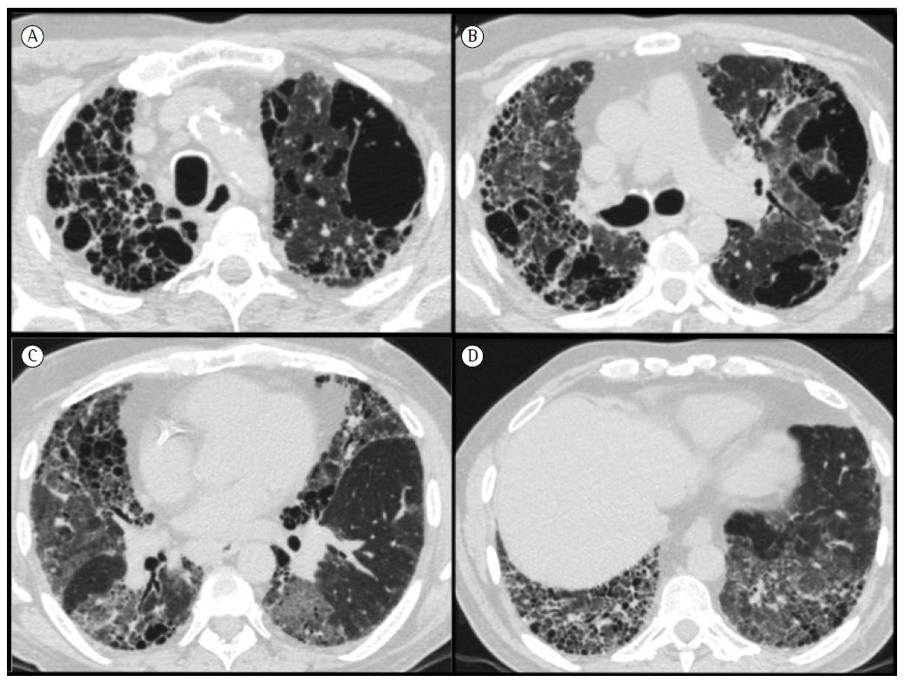
검사
Chest PA, Routine Lab. ESR/CRP/procalcitoninChest CT(E) Culture study
4. 경우에 따라서 BAL 시행 고려 (PCP lab. )
치료
Steroid - ex) Prednisone 1mg/kg qd Bactrim 1T #1 (PCP 예방), Ranit 2T #2(peptic ulcer 예방) 처방. **Bactrim: Prednisone 40mg 4주 이상 쓸 경우 bactrim 1T 처방
** 중증인 경우 methylPd pulse therapy (500~1000mg iv 3일 이후 1mg/kg)
Antibiotics cover 할 것인지 교수님과 상의
24. 기생충에 의한 폐렴 등이 의심될 때
(호산구 증가를 동반한 폐침윤) 우리나라에는 기생충과 관련된 eosinophilc lung infiltration이 많으므로, 민물계장, 육회, 생식 등을 한 것이 있는지 물어보고, parasite 검사를 시행해서 확인. 병력1. 민물계장, 육회, 생식 2. 복용하는 약제 : amiodarone, bleomycin, captopril, carbamazepine, penicillamine, sulfasalazine, Inodinated contrast agents.3. 천식, 관절통, 여행력검사1. Chest CT(E)2. 기생충 검사 시행(혈액 Sample) Parasite specific Ig G Ab: parag, Sparg, Cysticercus, Clonorchis 4가지 항목Toxocariasis(정밀)외부 3. CBC (eosinophil count 확인), IgE 4. Bronchoscopy, BAL 고려 (eosinophil count)5. CBC (blood eosinophil)6. PFT 7. Churg-Strauss syndrome 등 vasculitis 의심되면 ANCA 검사 p-ANCA, c-ANCA 검사 치료 1. toxocariasis: albendazole 1T(400mg) bid x 5일 - albendazole은 일반 의약품이여서 약국에서 환자가 사와야 함. 2. 기생충약 : Clonorchis sinensis 🡪 praziquantel
2. acute/chronic eosinophilic pneumonia 인 경우 steroid 사용(교수님과 상의)
** chronic eosionphilic pneumonia는 혈중 호산구 증가증 >1,000/mm3 동반 BAL 호산구 > 25% (특히 40%), 호흡기적 증상 2주 이상 기간
**Acute eosinophilic pneumonia는 대부분 혈중 호산구 증가증 동반 안함.
(BAL에서 호산구 >25% 이상), 호흡기적 증상 1개월 미만, 대개 1주일 이하 최근 담배를 피기 시작했거나, 분진 흡입력이 있기도 한다. 재발은 없다. 25. DPB(diffuse pan-bronchiolitis) 의심되는 환자
병력
1. 흡연력 (DPB 환자는 비흡연자 남성이 많다.)
2. chronic sinusitis 대개 동반
3. 호흡곤란, 천명음. 체중 감소.
검사
Chest CT, P.N.S series, PFT & BDR, DLCO 진단 기준) Persistent cough, sputum and exertional dyspneaHistory of chronic, paranasal sinusitisBilateral diffuse small nodular shadows on plain chest or centrilobular micronodules on CTCoarse cracklesFEV1/FVC <70% and PaO2 < 80mmHgPersistent elevation of cold hemagglutinin (≥1: 64) : 진단: 1~3 (모두 만족) + 4~6 중(2개 만족)
치료
1. Macrolide 투여 (anti-inflammatory effect: IL-8 감소)
🡪 Rulid (roxithromycin) 150mg bid 6개월 정도 (보험됨)
일찍 치료하면 Bronchiectasis 가 생기는 것을 예방할 수 있다.
2. 반드시 금연.
3. 장기간 치료가 필요하며 치료하지 않으면 만성호흡부전으로 진행 가능성 설명
<DPB 환자의 chest PA, Chest CT> 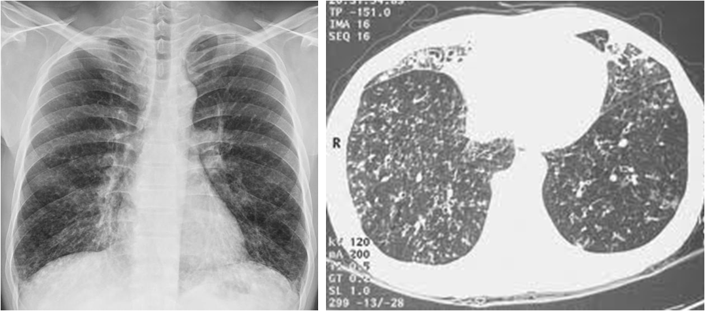
26. Pul. Thromboembolism 의심되는 환자 입원
Chest discomfort, dyspnea 있지만 Chest PA, 심전도상에서 큰 이상이 없고 산소를주어도 O2 Saturation 이 회복되지 않으면 의심할 수 있다. 병력1. deep vein thrombosis 있는지 확인, hidden malignancy 의심2. 수술, 골절, 하지 정맥류./ 경구용 피임제, 호르몬 약제 복용 여부 확인 검사1. pul.thromboembolism CT (contrast가 pul. A를 채운 다음에 CT를 촬영하는 것) 시행)2. 조영제를 사용할 수 없으면 환기/관류 스캔 시행. 3. Echo 시행 (RV function 및 failure 여부 확인)4. D-dimer (정상인 경우 PTE 배제 가능) 5. 환자 안정화되면 deep vein thrombosis work up6. 유전적 요인 work up (교수님과 상의) : 젊은 사람은 적극적으로 work up. Fibrinogen, FDP Protein C, Free protein S α2-antiplasmin, lupus anticoagulantTPA (tissue plasminogen activator), PAI (plasminogen activator inhibitor)Anti-cardiolipin Ig G/Ig M 검사 고려
치료
1. heparinization - low molecular weight heparin : enoxaparin (Clexane) 60mg q 12hr or dalteparin(Flagmin) 10,000 IU q 24hr, 신장 기능에 따른 감량 불필요. 또는 unfractionated heparin(UFH) 80U/kg bolus, 18U/Kg/hr 로 유지 Xarelto(rivaroxaban) Factor Xa 억제 : PTE 후 6개월간 보험이 됨 -Direct factor Xa inhibitor : INR check, Heparin Bridging 필요 없음.급성 심재성 정맥혈전증 및 폐색전증의 치료: 처음 3주간 1회 15mg, 1일 2회.
이후 심재성 정맥혈전증 및 폐색전증 치료를 위한 유지량 및 재발위험 감소를 위한 권장량: 1일 1회 20mg. 1일 최대량은 치료 첫 3주간 30mg, 이후 20mg**Pradaxa(dabigatran) : thrombin 억제 최소 5일간 비경구 항응고제 사용후 150mg 1일 2회 복용 (6개월간 보험됨) **Eliquis(Apixaban): 1회 10mg 1일2회, 이후 1회 5mg, 1일 2회 3. Warfarin -PTE 확진이 되면 시작. (보통 5mg Loading) -최소 4~5일은 heparin 과 병용. -PT(INR)이 2일 연속 2~3 사이에 있으면 heparin 중단 가능. 4. RV failure 심하거나 v/s 불안정할 경우(교수님과 상의) t-PA치료: 100mg 2시간에 걸쳐서 투여 (t-PA 치료 금기증 확인) 4. 상황에 따라서 IV filter, 수술적 thrombectomy 고려
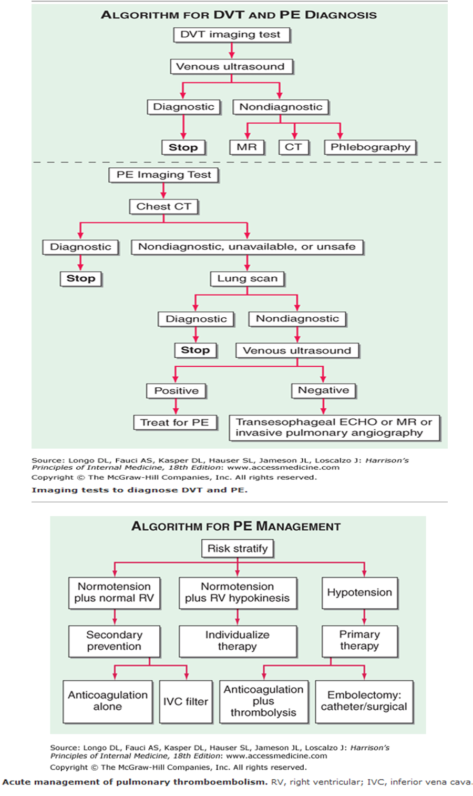
** 참고: Virchow’s triad
- venous stasis, alteration in the coagulation, vascular injury
27. Sarcoidosis 의심 환자가 입원
Sarcoidosis: multisystem granulomatous disorder of unknown cause
많은 경우 2~5년이내 self limited
<5%에서 심장, 신경 involvement, lung fibrosis 로 사망함.
1/3 정도에서 persistent disease
병력
1. 피부 병변 (erythema nodosum, lupus pernio 등)
2. 시력, photosensitivity
3. dyspnea, chest discomfort, 체중 감소
4. Beryllim exposure
검사
(CBC, L-ADM3, UA, Chest PA 등 기본검사)
1. Chest CT (E)
2. Bronchoscopy (BAL 시행, 가능하면 TBLB도 시행)
: Lymphocyte dominant (>15% 이면 sensitivity 90%)
CD4/CD8 비가 상승하는 것이 Sarcoidosis 특징적 (>3.5이면 specificity 95%)
3. enlarged mediastinal LN biopsy (EBUS 또는 mediastinoscopy 고려)
: sarcoidosis 때는 non-caseating granuloma 소견. (결핵- caseating granuloma)
4. PFT & DLco
5. Echocardiogram
6. ACE 상승 및 Hypercalcemia, 24hr Urine Ca 확인.
7. HIV, ABGA, ESR/CRP
7. 안과 진료 consult (uveitis, retinitis 등 eye involvement 확인)
8. PPD test 시행 (Sarcoidosis 때는 anergy: 대개 skin test 한 흔적도 없을 정도로) : 70%
: injection 후 48~72hr 후 induration 확인
치료 (교수님과 상의해서 결정) – 치료 없이도 자연 관해 되기도 함.
1. 치료 적응증
- Heart, CNS, Kidney 침범
- 국소 치료에 반응하지 않는 안질환.
- lung parenchyma involvement
🡪 systemic steroid 등
Ex) Prednisone 20~40mg qd
Radiologic staging)
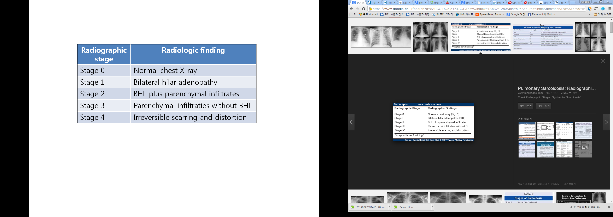
**ACE : sarcoidal granuloma epithelial cell에서 생성(sensitivity 77%, specificity 93%) 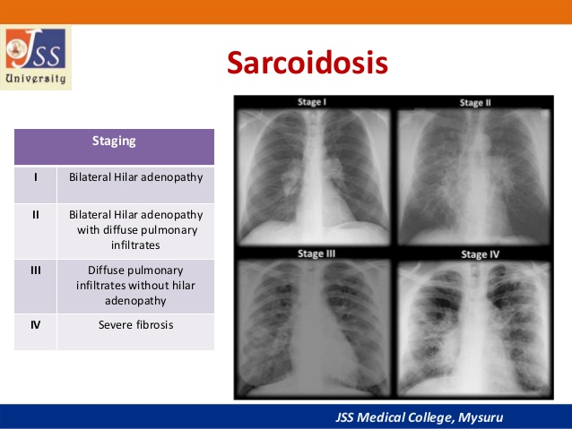
병력
1. 직업 (먼지)
2. 애완동물(강아지, 고양이, 새 등)
3. 최근에 이사 갔는지, 직장을 옮겼는지 확인?
4. 여행력 (국내, 국외)
검사
1. Chest CT
2. specific IgG precipitating Ab.
3. ABGA: hypoxemia 유무 확인
4. PFT, DLCO (일산화 탄소 투과성 감소 확인)
3. Bronchoscopy (BAL시행)
- Lymphocyte dominant, CD4/CD8 감소. (참고: CD4 증가🡪 sarcoidosis)
치료 (교수님과 상의)
1. 조기 진단 및 회피가 가장 중요.
2. steroid
: 원인 항원으로 부터 회피가 불가능할 때 또는 회피 후에도 병이 진행하는 경우 사용
급성형 – 증상이 심한 경우 단기간 Pd 0.5mg/kg/day, 2~4주
만성형 – Pd 60mg 2~4wks 사용하면 최대 폐기능 상태 유지하는데 도움
** 예후
: 조기 진단되고 원인 항원에 더 이상 노출되지 않는 경우 예후는 좋으며 대부분 첫
1-6개월 내에 호전이 된다. 급성기에 정적 폐탄성과 일산화 탄소 확산능이 감소하나
수주 내에 회복
29. Pneumothorax 발생한 환자
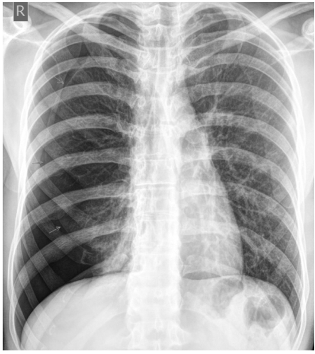
병력
1. 흡연력, 기흉 기왕력
2. 체중감소, 기생충 감염 가능성(민물게장, 육회 등 생식)
3. 기저질환(ex. COPD, Asthma 등)
4. trauma
5. 호흡곤란, 흉통, 혈압 감소, 의식 저하 (tension pneumothorax 가능성 생각해야 함)
분류
1. Spontaneous
Primary: subpleural bleb rupture, bullous rupture
Secondary: COPD, tuberculosis, malignancy, ILD
2. Acquired: traumatic, iatrogenic
검사
: Chest PA, CHEST CT, 필요에 따라서 ABGA
치료
1. Iatrogenic pneumothorax (ex. Thoracentesis, central cath. PCNB 등)
: 일단 산소를 공급하고 경과관찰, 호전되지 않으면 Chest Cath. 삽입
🡪 Chest PA F/U하고 흉부외과 Consult
산소: 원래는 high flow O2. (일반적으로는 nasal prong 산소 4L/min 정도)
🡪대기 중의 가장 많은 부분(78%)을 차지하는 질소보다는 산소가 흡수가 훨씬 잘되므로
2. 기저질환 있거나 이차적 원인으로 발생한 pneumothorax
🡪 chest tube 삽입(흉부외과 consult)
삽입 후 Chest PA F/U
3. Tension pneumothorax: 의심되면 즉시 치료 (chest PA 찍기 전)
청진했을 때 호흡음이 전혀 들리지 않는다.
🡪 2nd intercostals space에 large-bore needle 삽입해서 진단 겸 치료
흉부외과 연락해서 바로 chest Tube 십입.
30. Esophageal-tracheal(Bronchial) fistula가 의심되어서 입원
병력
1. 생선 먹은 적 있나? 가시가 목에 걸린 적이 있나?
2. 목 부위 방사선 치료
3. 결핵 가능성
4. 이전 수술력 (esophagus, lung, mediastinum, or etc)
검사
1. endoscopy
2. bronchoscopy (indigo carmine 또는 methylene blue 오더 내기)
(필요시 L-tube로 methylene blue 주입하면서 bronchoscopy로 T-E fistula 여부 확인)
3. esophagography
치료
1. anaerobic pathogen cover
Ex) cefotaxime(ceftriaxone) plus clindamycin
Or cefepime plus clindamycin
2. 흉부외과 수술적 치료
3. 수술적 치료가 어려운 경우 endoscopic procedure(stent) 고려
4. NPO가 길어지는 경우 gastrostomy 등 고려
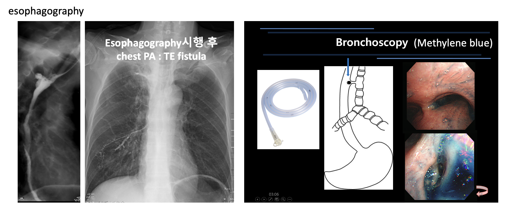
31. PDT(Photodynamic therapy)를 위해서 내원
적응증)
상피내암종 기저질환으로 인해서 수술을 시행 받지 못하는 조기 폐암. 수술이 불가능한 기관지폐쇄를 동반한 IIIA~IV 기 환자.
치료 준비 및 시술)
환자 입원 후 직사광선 피한다. (커튼을 친다. 썬글라스 준비, 장갑, 긴팔, 마스크)
1)입원일 또는 입원일 다음날 오전 🡪 Photofrin 2 mg/kg의 용량으로 3-5분에 걸쳐 천천히 정맥주사
2) 주사 후 40-50시간 후에 레이저 빛을 조사 (기관지 내시경실에서 PDT 시행)
3) PDT 시행 2일 후 기관지 내시경을 이용한 괴사 조직제거 🡪 이후 퇴원 고려
** 환자는 초기치료 후 적어도 30일 지난 후에야 두 번째 광역학요법 치료를 받을 수 있다
3번까지 이 광역학요법 치료를 받을 수 있다(각 시술간에는 적어도 30일 간의 간격을 두어야 한다)
퇴원후에도 직사광선 피한다. (외출 삼가. 썬글라스 준비, 장갑, 긴팔, 마스크)
** Photofrin (Porfimer sodium) 약물 조제
: 5 DW 또는 0.9% NS에 녹여 2.5 mg/ml 농도의 용액으로 만들어 정맥주사
75mg/Vial 🡪 환자 입원전에 약이 미리 주문이 되어야 하며, 보통 2 vial이 필요하므로 약국에
2 vial이 주문되어서 현재 약국에 있는지 확인 해야함.
Ex) 70/M, 70Kg 🡪 photofrin 140mg 필요함.
Photofirn 75mg 1 vial을 NSS 30ml에 mix한다.
농도가 2.5mg/ml 이므로 140mg 은 56ml 이다.,
56ml(대략 60ml)을 3~5분에 걸쳐 천천히 정맥 주사
합병증)
광역학 치료 부위의 부종 및 출혈종양 및 주면조직의 괴사로 인한 섬유조직의 증가로 인한 기관지 폐쇄 및 폐 허탈
32. Anaphylaxis로 내원한 환자
약물, 조영제, 벌독 등에 의해 아나필락시스가 발생할 수 있음.
원인 불명의 아나필락시스가 발생하기도 함.
환자의 병력청취를 정확하게 하는 것이 중요함.
검사
1. Tryptase
--> 반감기가 짧기 때문에 Event 발생 4시간 이내에 시행해야 한다.
2. Total IgE
--> 환자의 알레르기 경향성을 파악하기 위해 시행한다.
치료
1. Epinephrine 0.5mg IM
--> 혈압 감소, 의식저하가 있으면 신속히 투여한다. 보통 응급실에서 투여한 후 회복된 상태에서 일반 병동에 입원한다. 의식회복이 안되고 혈압저하가 계속 있으면 epinephrine continuous infusion 하며 ICU로 입원하게 된다.
2. Massive fluid resuscitation
--> Normal saline으로 한다. 고령, 심부전 여부 확인하여 환자에게 적합한 속도로 수액을 공급하고 I/O check 를 한다.
3. Dexamethasone iv 5mg q24h, Chlorpheniramine iv 4mg q12h 를 투여
--> 증상이 호전되면 스테로이드는 바로 중단하고, 항히스타민제는 경구로 변경한다.
4. Respiratory symptom 호소시, 산소를 공급하고, 네불라이져 (ventolin, atrovent)를 시행한다.
** 병력청취를 하여 원인 의심 물질에 대한 Specific IgE 검사를 시행한다.
Ex)
1.벌독 알레르기가 의심되는 경우
Allergen specific IgE - H1: Hooney bee, I2: White faced hornet, I3: Common Wasp, I4: Paper Wasp 시행
2. 항생제가 의심되는 경우
Allergen specific IgE - C1:Penicilloyl G, C2: Penicilloyl V, C5: Ampicilloyl, C6: Amoxycilloyl, C7: Cefacolr
** Event 발생 후 24시간 이내까지는 delayed hypersensitivity reaction이 발생할 수 있으므로 경과관찰이 필요하다.
33. 약물 중증 피부반응으로 내원한 환자
중증약물유해반응은 DRESS (Drug reaction with eosinophilia and systemic symptoms) 증후군, 스티븐스존슨 증후군 (Steven-Johnson syndrome, SJS), 독성표피괴사용해 (Toxic epidermal nerolysis, TEN)이 대표적이다.
가장 중요한 치료는 원인 약물을 찾아서 신속히 중단하는 것이다.
1. DRESS 증후군
피부발진과 함께 호산구 증가, 고열, 내부장기 침범 등 전신반응이 함께 나타나는 지연형 약물과민반응이다.
검사
객관적인 검사를 통해 진단하는 방법은 없다.
임상증상의 조합을 통해 진단한다.
① 피부발진
② 호산구 증가 or 비전형림프구 존재
③ 림프절병증, 간염, 신장염 등 최소한 1가지 이상의 내부장기 침범
치료
① 병력청취를 자세히 하여, 원인 의심약제를 찾고 중단하는 것이 가장 기본적인 치료이다.
② 흔한 원인 약물로는 sulfonamides, beta-lactams, anticonvulsants, NSAIDs, allopurinol minocycline 등 있다.
③ 보통 1-8주 정도 복용한 후에 발생한다.
④ 증상이 심하면 Systemic steroid를 사용한다. Prednisolone 0.5-1mg/kg로 시작하여 증상이 호전되면 감량해 가면서 2-3개월 정도 사용한다.
2. SJS과 TEN
특징적인 표피 분리(epidermal detachment)가 나타나 수포나 광범위한 피부박리가 나타나는 지연형 약물과민반응이다.
SJS와 TEN은 기본적으로 동일한 병태생리를 가지는 질환으로 본다.
피부박리가 10% 미만이면, SJS
피부박리가 10-30% 인 경우, overlap SJS-TEN
피부박리가 30% 이상이면, TEN
검사
객관적인 검사를 통해 진단하는 방법은 없고, 임상증상을 통해 진단한다.
입술, 구강, 결막, 성기의 점막 침범이 흔하게 관찰된다.
안검유착, 각막궤양 등 안 합병증이 발생하여 실명에 이르는 경우도 발생할 수 있어 안과 협진의뢰가 반드시 필요하다.
치료
① 병력청취를 자세히 하여, 원인 의심약제를 찾고 중단하는 것이 가장 기본적인 치료이다.
② 흔한 원인 약물로는 sulfonamides, beta-lactams, anticonvulsants, NSAIDs, allopurinol minocycline 등 있으며, 1-8주 정도 복용한 후에 발생한다.
③ 특이적인 치료는 없고, 대증치료가 중심이 된다.
④ 병변에 대해 항균 구강액, 비부착성 거즈 등을 사용하며, 수포액으로 수포가 팽팽해지면 무균적으로 수포를 열어서 수포를 감압해준다.
⑤ 염증반응 약화를 위해 Systemic steroid를 사용할 수 있으나, 장기간 사용할 경우 상피재생을 저해하여 회복을 더디게 할 수도 있고, 면역저하로 감염이 발생할 수도 있다.
⑥ 스테로이드에 반응하지 않는 환자들에게는 Intravenous immunoglobulin을 사용해 볼 수 있으나, 아직 치료효과에 대한 명확히 증명된 것은 없다.
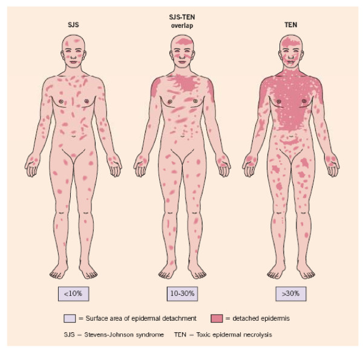
34. 응급 상황 대처
A. 조절되지 않는 massive hemoptysis (200~600cc/24hr)
환자 /보호자 설명)
a. hemoptysis는 소화기관 출혈과는 달리 막혀 있는 공간에 피가 나는 것이고, 조절되지 않는 경우
호흡부전에 빠질 수 있기 때문에 훨씬 더 위험하고 현재 위급한 상황임을 설명
b. 중환자실 치료에 대해서 설명
Check list)
a. bleeding site down.
b. matching, PRC 2 pack 준비.
TRS 1 @ q 8hr
c. ICU arrange
d. dual lumen endotracheal tube 고려
d. 영상의학과 연락 🡪pul. Artery embolization 여부 상의
e. embolization으로 해결안 될 경우 수술적 치료
B. 호흡부전 악화 및 intubation
환자 /보호자 설명)
a. Reserve bag O2 full 또는 Opti-flow (FiO2 100%, Flow 35~40L/min) 로 SaO2 90%,
PaO2 60mmHg 유지되지 못하고, 호흡수 30~35/min이상, work of breath 증가, 의식 저하되는 상황이면 intubation 시행.
b. cancer terminal 등 underlying ds.가 해결되지 못할 환자들의 경우 보호자들과
intubation, 인공호흡기 치료, 중환자실 치료에 대해서 충분히 상의
Check list
a. 백마스크 환기로 산소 제공🡪 Sp02 90% 이상 유지
b. 기도 사정(airway assessment) 🡪 difficult airway 이면 도움을 구한다. (전임의 이상 call)
c. 전처치 약물 투여
Fentanyl 1@ (100mg) iv
2분 후 Etomidate 1/2@ (10mg) 주사: 삭감됨 🡪 midazolam (3mg ~ 5mg)
턱 이완 정도를 살펴보고 intubation🡪 chest X-ray 상 carina 상방 3~5cm 정도에 고정.
C. C-PCR (Cardio-pulmonary Cerebral Resuscitation)
a. 심정지 혹은 peri-arrest 확인 🡪 바로 도움 요청 및 CPCR 방송
b. 발견하자 마다 심장 마사지 시작
c. airway 확보 (head tilt-chin list, bagging)
d. 제세동기 도착 즉시 shockable rhythm (pulseless VT, V.fib) 확인 후 shock (biphasic 200J)
Asystole 혹은 PEA(pulseless electrical activity)인 경우는 shock 없이 바로 CPCR 시작.
e. 제세동후 즉시 흉부압박 시작하고 2분간 CPCR 후 맥박 평가
f. Epinephrine 1mg IV 3분마다 투여
g. 백-마스크 환자가 적절하면 기관내 삽관은 초기 CPCR과 제세동에 반응하지 않을 때까지
미룰 수 있다.
** 강하게 빠르게 흉부압박 (100회/분)
흉곽의 완전한 이완
흉부 압박 중단을 최소화
매 2분마다 심장 압박하는 인턴 선생님 손 바꿀 때 맥박 확인
관류에 있어서 흉부압박이 가장 중요🡪 환기를 위해서 흉부압박을 멈추지 않는다.
1주기 심폐소생술은 30회 압박, 2회 호흡 🡪 5주기는 약 2분 소요.
과호흡 피할 것 (intubation 한 경우 8~10회/분)
중환자실 이송시 O2 saturation, EKG monitoring 하면서 이동.
34. 각종 Procedure check List
A. Thoracentesis
환자 /보호자 설명)
a. 기흉, 혈흉 발생 가능성 🡪 chest tube 삽입 가능성 설명
b. 진단적, 치료적 목적으로 시행 필요성 설명
c. Thoracentesis 시행 후 chest PA F/U 설명
Check list)
a. aspirin, warfarin 등 anti-coagulation 여부 확인
b. thoracentesis 시행 후 chest PA F/U🡪 pneumothorax 발생 여부 확인
c. pleural effusion 하루 500ml~1000mL 이상 뽑지는 않는다. (re-expansion pul. edema발생)
갈비뼈의 아래쪽으로는 vessel, nerve가 지나가니 초음파를 통해 effusion의 양을 확인하고 갈비뼈 위쪽으로 needle이 들어가게 하여 drainage해준다. 시술하는 동안 기침, 심호흡, 갑작스러운 움직임을 피하도록 교육하고 needle이 꽂혀 있는 상태에서는 환자가 inspiration을 하지 않도록 한다.
B. Chest Catheter insertion/ Remove
환자 /보호자 설명)
a. 동의서 받을 때 기흉, 혈흉, 감염 등의 합병증 설명
🡪 chest tube 삽입 가능성 설명
Check list)
a. aspirin, warfarin 등 anti-coagulation 여부 확인
b. chest catheter 삽입 후 chest PA F/U 🡪 Cath. 위치 및 기흉 발생 여부 확인
c. loculated effusion이면 urokinase 주입
d. remove시 주의 사항
- pig tail catheter- cath. 안에 있는 줄 2개를 다 자르면 안됩니다.
2개 중 하나만 절단 후 천천히 pig tail cath.를 당기면 pig tail이 풀리면서
빠집니다.
C. High Flow Nasal Cannula (Opti-flow ®)
환자 /보호자 설명)
a. 폐렴, 폐암 등 악화 가능성에 대해서 설명
b. opti-flow로 유지 안 될 경우 intubation, 중환자실 사용, CRP등에 대해서 상의
check list)
a. 시작은 보통 flow 35~40L/min, Fi02 40% 정도로 시작.
(Flow를 40L/min 이상 올리면 환자 오히려 더 힘들어함. )
b. O2 Saturation 및 ABGA 결과 보면서 Fi02 올린다.
c. Fi02 80%이상인데도 SaO2 90% 유지 안되고 의식 저하되면 Intubation 고려
*** HFNC 장점
1. High flow system으로 정확한 Fi02 공급 가능
2. 가온, 가습된 공기를 제공🡪 mucocilliary function을 호전시킴
3. PEEP 효과 (약 2~3cmH20) 🡪 lung compliance (Δvolume / Δ pressure)를 좋게 함
4. CO2 wash out
Opti-Flow (FiO2, Flow 설정)
Fi02(%)
Flow
(L/min)
NIV (Non-invasive ventilation)
D. NIV (Non-invasive ventilation)
🡪 적응증이 되는 환자가 있으면 내과 고년차 또는 staff에게 연락
Selection criteria
moderate to severe dyspnea with accessory m. and paradoxical abd. motionmoderate to severe acidosis (pH <7.35) and/or hypercapnia respiration frequency: 25 breaths/min
Exclusion criteria
respiratory arrestcardiovascular instability (hypotension, arrhythmia, Myocardial infection)change in mental status, uncooperative patientHigh aspiration risk Viscous or copious secretionsRecent facial or gastroesophageal surgeryCraniofacial traumaBurn, extreme obesity
실제 적용)
환자에게 NIV의 목적 및 필요성, 과정을 충분히 설명한다. 시범을 보여준다. 체위는 30도 정도 올린 상태에서 마스크를 환자 얼굴에 데고 head gear를 이용해서 잘 고정한다. 처음에는 압력을 EPAP 3~5cmH2O, IPAP 8~12cmH20로 시작한다. 의료진은 환자 옆에서 환자의 호흡을 격려하고 교육하면서 Fi02와 압력을 조절한다. NIV 시행 30분후에 ABGA를 시행한다.
E. Urokinase instillation
환자 /보호자 설명)
a. 발열, 출혈 가능성
b. 주입 후 4시간 동안 30분 간격으로 자세 변화 후 병변 있는 쪽이 아래로 가도록 누워있는다.
Check list)
Urokinase 넣기 전 catheter 가 function을 잘 하는지 확인. Chest PA상에서 위치가 적절한지 확인Insertion된 부위의 skin wound가 있진 않는지 확인. loculated effusion이 있는 경우 50000 unit를 NSS 100 cc에 mix해서 chest tube 또는 chest catheter로 instillation(urokinase 1 vial이 10만 unit이므로 1 vial를 2번 사용할 수 있다. )
F. Pleurodesis
- monodoxy (Doxycycline) 100mg 4CA
최근 Abnoba viscum 사용
: 단핵식세포계를 자극하고 대식세포로 인한 cytokines에 의해 염증반응 유도
부작용) 고혈압, 저혈압, 오심,구토,설사. 두통. 발한, 오한, 아나필락시스.
시행시점) catheter 및 tube 로 effusion drain이 충분히 되어서 최대한 lung expansion된 때
Secondary pneumothorax 가 해결이 되지 않을 때
시행방법) NSS 100ml에 mix
🡪chest tube나 catheter로 instillation
4hr 동안 clamping 한 후 release 한다
Clamping하고 있는 동안 20~30분 간격으로 자세 변경을 하여서 골고루 약이
흉막과 접할 수 있게 한다. (chest tube로 하는 경우 tube을 연장해서 Loop 모양으로…)
F. Linear EBUS(Endobronchial ultrasonography)
환자 /보호자 설명)
a. 수면 마취 하에 검사 진행
🡪 수면 중 산소 수치가 유지 안 될 경우 검사 자체를 못할 수도 있다.
b. 대부분은 검사가 특별한 문제 없이 잘 되지만, 경우에 따라서는 충분한 검사를 얻지 못해서
재검사 또는 mediastinoscopy 등 다른 검사를 할 수도 있다.
: 하지만 진단 및 staging을 위해서 꼭 해야 하는 검사이고 다른 검사에 비해서 덜
invasive하고 안전한 검사임을 설명.
c. 시술 후 드물게 출혈, 기흉, 종격동염 등 발생 가능성 설명.
Check list
a. aspirin, warfarin 등 anti-coagulation 여부 확인
b. EBUS 전 bronchoscopy, Chest CT, PET-CT 결과 확인.
c. EBUS 시행 후 Chest PA F/U
d. 결과 확인시 주의 (** 중요함)
🡪 core biopsy 검사와 smear 검사 시행 여부 및 결과를 둘 다 확인 해야함.
Radial probe EBUS with guide sheath (GS)
: Peripheral pulmonary lesion biopsy 가능.
The radial EBUS was positioned inside the peripheral lung lesion (a, within), in the bronchus adjacent to the lung lesion (b, adjacent to) and outside the lung lesion (c, outside).
Linear EBUS = CP-EBUS (Convex prove EBUS) → EBUS-TBNA 시행 | Radial EBUS = RP-EBUS (Radial prove EBUS) → EBUS-GS (Endobronchial ultrasound with guide sheath) TBLB 시행 |
Real time으로 병변을 초음파를 보면서 biopsy를 시행함 | Biopsy시행시에는 real time으로 병변 보지 못함 Guide sheath에 초음파 probe 넣어서 병변 확인하고, GS에서 초음파 probe는 빼고 biopsy needle 넣어서 검사 시행 |
기도뿐 아니라 기도 벽, 종격동 및 폐를 기관지 내시경 시행 중 초음파를 통해 관찰하며 필요시 세침을 이용한 조직검사 시행하는 시술 | gives a 360-degree view of the airway wall and surrounding structures in a viewing plane perpendicular to the bronchoscope shaft |
Trachea, bronchus 주변 central lesion 검사 | Sampling of peripheral lung nodules 검사 |
<Cryobiopsy>: -89 ◦C ~-70◦C
Mediastinal LN
G. PCNB (percutaneous needle biopsy)
환자 /보호자 설명)
a. 기흉, 혈흉 등 발생 가능성에 대해서 설명
특히 기흉은 자주 발생하며 그 정도에 따라서 산소 치료만으로 좋아질 수도 있고
기흉이 심한 경우 chest tube를 삽입해서 치료할 수 있다고 설명.
b. 환자가 잘 협조를 잘 해주어야 검사가 잘 될 수 있다고 설명
- 동일한 양을 흡입을 잘 해야 함. (검사실에서 다시 교육해드림.)
- 대개는 특별한 문제 없이 검사가 잘 되지만 간혹 충분한 검체를 얻지 못해서 재검사 또는
수술적 방법으로 진단 및 치료를 받을 수도 있다.
c. 아주 드물게 air embolism, cerebral infarction, MI, shock 등 예상하지 못하는 합병증이 발생할
수 있다. 🡪 우리 의료진은 그러한 합병증에 적절하게 대처할 수 있음을 설명.
Check list)
a. aspirin, warfarin 등 anti-coagulation 여부 확인
b. supraclavicular LN biopsy, bronchoscopic biopsy, EBUS로 조직 검사할 수는 없는지 다시 확인.
c. PCNB 시행 후 chest PA F/U 🡪 기흉 발생 여부 확인+
d. 수혈 등에 대비해서 matching 검사를 반드시 시행한다.
e. 객혈이 경우 code-s 처방. NPO, Transamine 1a q 8hr 투여.
객혈이 조절되지 않는 경우 pul. Artery embolization 고려
호흡기 내과 주치의 참고 사항)
steroid 역가 비교 및 특징. (glucocorticoid potency 🡪 Anti-inflammatory potency) 1. steroid 역가 비교 및 특징. (glucocorticoid potency → Anti-inflammatory potency)
Drug | Equivalent glucocorticosteroid potency (mg) | Mineralocorticoid potency (relative) | Duration of action (h) | Plasma half-life (min) |
Short-acting | ||||
Cortisone | 25 | 1.0 | 8-12 | 60 |
Hydrocortisone | 20 | 0.8 | 8-12 | 90 |
Intermediate-acting | ||||
Prednisone | 5 | 0.25 | 24-36 | 60 |
Prednisolone | 5 | 0.25 | 24-36 | 200 |
Methylprednisolone | 4 | 0 | 24-36 | 180 |
Triamcinolone | 4 | 0 | 24-36 | 300 |
Long-acting | ||||
Dexamethasone | 0.75 | 0 | 36-54 | 200 |
Betamethasone | 0.6 | 0 | 36-54 | 200 |
** mineralocorticoid potency 🡪 hypokalemia, alkalosis, hypernatremia 유발. 용량 비교: methylprednisone 40mg 🡪 prednisolone 50mg Dexa 5mg 🡪 prednisone 33.3mg ILD ** Interstitium (the tissue and space around the air sacs of the lungs)** ILD concerns alveolar epithelium, pulmonary capillary endothelium, basement membrane, perivascular and perilymphatic tissues진통제 관련
동등진통용량표 Cancer Pain Management GuideLine
Drug | Dose equianalgesic to 10mg IV/SC morphine | PO:IV/SC potency ratio | Half-Life [hr] | Duration of action [hr] | |
PO | IV/SC | ||||
Morphine | 30 | 10 | 1:3 | 2~3.5 | 3~6 |
Codeine | 200 | - | - | 2~3 | 2~4 |
Oxycodone | 20 | - | - | 3~4 | 2~4 |
Tramadol | 120 | 100 | 1:1.2 | 6 | 4~6 |
Hydromorphone | 7.5 | 1.5 | 1:2~1:5 | 2.5 | 4~5 |
Hydrocodone | 15~30 | - | - | - | - |
새 약제의 초회 용량은 불완전한 교차내성(incomplete crosstolerance)을 고려하여 동등진통용량의 50~75%로 한다.전에 사용하던 진통제로
통증 조절이 불충분하였던
경우, 새 약제의 초회 용량
은 동등진통용량의 75~100%
로 한다.
돌발 통증(breakthrough pain)에 대비하여 새로 결정된 약제의 1일 사용 용량의 10~20%를 필요한 경우(prn)에 복용할 수 있도록 처방한다.
경피용 펜타닐 용량표
IV/SC Morphine | Oral Morphine | Transdermal Fentanyl |
20mg | 60mg | 25㎍/h |
40mg | 120mg | 50㎍/h |
60mg | 180mg | 75㎍/h |
80mg | 240mg | 100㎍/h |
** 10mg iv morphine = 100mcg fentanyl iv or transdermal (100배 강력함) (fentanyl patch: 자르면 안됨, 열나면 흡수 많아짐)
** Buprenorphine(부프레노르핀) 노스판 패취 5, 10, 20mcg/h: 1주 1회
Pulmonary nodule F/U Pulmonary nodulessmall, focal, rounded radiographic opacities that may be solitary or multiple well-circumscribed, radiographic opacitymeasures up to 3 cm in diameter surrounded completely by aerated lungNo associated atelectasis, hilar enlargement, or pleural effusion.
Lung masses
: Focal pulmonary lesions that are >3 cm in diameter
Diffuse nodules
: defined as those with >10 nodules
: caused by either metastasis from extrathoracic malignancies or active infection or
inflammation.
조직검사 관련 (Risk. False Negative) Pulmonary function test 해석
Bronchodilator response (+) 기준: post FEV1 12% 이상 and 200ml 이상 상승.
** FVC <1.3L이면 DLCO 검사 못함.
폐포의 산소 분압(PAO2) 계산
ABGA의 해석 Anion Gap : Na+ –(Cl-+ HCO3-)정상 범위 : 10~12A.G >20 : probably high A.G 🡪 metabolic acidosis Albumin 1g/dl 정상에서 떨어지면 A.G 2.5 감소Corrected A.G = A.G + (4-albumin) x2.5
9 High flow system: Ventri-mask
10. Bronchoalveolar lavage (BAL)
Bronchoalveolar lavage (BAL) is a diagnostic procedure where lavage fluid 150~200ml) to the terminal bronchioles and then recollected for analysis to examine cells, inhaled particles, infectious organisms or fluid constituents.
BAL aims to establish a diagnosis, to find out if infections and malignancies are present and to estimate the degree of disease activity e.g. in case of interstitial lung disease
Normal BAL)
Alveolar macrophages | >85% |
Lymphocyte (CD4+/CD8+ = 0.9~2.5) | 10~15% |
Neutrophil | <3% |
Eosinophil | <1% |
Squamous epithelial/ciliated epithelial cell | <5% |
Lymphocytic pattern (>15% lymphocyte) | Eosinophilic pattern (>1% eosinophil) | Neutrophilic pattern (>3% neutrophil) |
Sarcoidosis NSIP, HP, COPDrug induced pneumonitisRadiation pneumonitis | Eosinophilc pneumonia Drug induced pneumonitisAsthma, bronchitis Churg-Strauss syndromeABPA | Idiopathic pulmonary fibrosis (IPF) |
기타 참고 사항)
1) HAP 관련 내용
폐렴의 항생제 선택은 pneumonia severity에 따라 정하는 것이 아니라, 환자의 MDR risk factor에 따라서 결정해야 한다. 예를 들어 건강했던 젋은 여성이 중증 community acquired pneumonia 가 생겼다면 중환자실 치료를 하더라도 흔히 많이 쓰는 tazo/piper + cipro의 조합이 아니라 3rd cepha + macrolide 또는 3rd cepha + respiratory quinolone을 처방해야 한다. ** Pseudonomas cover할지 말지는 pneumonia의 중증도에 따라서 하는 것이 아니다. RISK에 따라서 pseudomonas를 cover할 것인지 결정하는 것이다. Risk factors for Multidrug resistant pathogens
Risk factors | Odd ratio |
Risk factors for MDR VAP | |
Prior IV antibiotics use within 90 days | 12.3 |
Septic shock at time of VAP | 2.01 |
ARDS preceding VAP | 3.1 |
>5 Days of hospitalization prior to the occurrence of VAP | 2.01 |
Acute renal replacement therapy prior to VAP onset | 2.5 |
Risk factors for MDR HAP | |
Prior IV antibiotics use within 90 days | 5.17 |
15% of VAP: bacteremia
25% of positive blood cultures in suspected VAP patients are from a non-pulmonary source
Invasive quantitative culture results below diagnostic thresholdPBS <103 CFU/ml or BAL<104 CFU/mlMRSA 관련 TTA G(+) 양성일 경우 BAL 에서는 G(+) 음성일 수 있다. 워낙 colonization을 잘 하니까.TTA G(-) 양성이면 BAL에서도 G(-) 가올 가능성 높다. VAP 생기면 대개 initial에 MRSA cover한다. 정성 검사: 조금만 있어도 나온다. 정량) semiquantative : 104 이상이면 보고, 104 이하이면 보고 안 한다.처음에 폐렴 의심되면 103 이더라도 항생제 쓸꺼니까 정량 검사 보다는 정성 검사를 해서 어떤 균인지 확인을 하는 것이 좋지 않을까? 기관지 branching : 23번. CT에서는 8번째 정도까지 보인다. Secondary pulmonary lobule: 1~2.5cm, cluster of three~five terminal bronchiolesInterstitium Peripheral : pleura, interlobular septaAxial: around bronchovascular bundle Chest PA 사진 변화 속도 Pul. Edema >> pul. Hemorrhage >> pneumonia Community acquired pneumonia 여서 strep. Pneumonia cover할꺼면 tazo/piper 보다는 cefepime 선호 HCAP이 사망률이 높은 것은 질병의 중증도가 높아서이지 MDR이 많아서 그런 것이 아니다. 그러므로 중증도에 따라서 분류를 하면 되고 HCAP을 따로 구분해서 진료하지 않아도 된다. PK in pneumonia: alveolus level에서의 항생제 농도에 대해서 고민을 해야 한다. MIC (minimal inhibition concentration) : viable한 growth를 억제하는 최소의 항균제 농도Concentration dependent : aminoglycoside, fluoroquinolone, daptomycin. Metronidazole.
Time dependent : B-lactams, macrolides. Oxazolidinones, penicillin, clindamycin. carbapenem
T>MIC : Time that free antimicrobial concentration remains above the MIC
B-lactam은 대개 반감기가 짧다. Ceftriaxone 제외 T>MIC를 높이는 방법: 용량을 늘린다. 투여시간을 늘린다. -Continuous infusion: T>MIC 100% 가능
Antibiotic의 stability 문제(ex. Meropenem은 상온에서 4~6hr stable)
-extended infusion: ex) meropemem 30분 주입하던 것을 3시간동안 천천히 주입
** Monte Carlo simulation: 특정 농도에서 균이 얼마나 억제되는가 simulation
Vancomycin S로 나오더라도 MIC 가 1 넘어가면 Vancomycin 거의 안 들으니까 Linezolid를 써라. Two parenteral polymixins -polymixin B : 미국, 유럽 – Nephrotoxicity 적다. -polymixin E : Colistin 🡪 nephrotoxicity 40%정도
21. Colistin는 peptide 항생제이다.
- (+) charge를 가지고 있어서 detergent처럼 작용. 세균의 outer membrane에 작용.
- membrane을 destruction 시키니까 다른 약의 효과를 좋게 한다. Synergy 좋다.
- G(-) 균에만 효과가 있다.
- IV제형은 Colistimethate(CMS)이고 이것이 가수분해가 되어서 active한 colistin이 된다.
CMS도 소변으로 배출이 되어서 PK study가 어렵다.
- 항균력 ) P. aeruginosa, Acinetobacer spp. E.coli, Klebsiella spp., Enterobacter spp.,
Citrobacter spp. 은 감수성
- proterus spp. Serratia spp. Burkhoderia spp. 는 내성
- stenotrophomonas maltophilia : susceptible 26~76%. 거의 내성이다.
용량 ) colistin base activity (CBA)
우리나라 colistin 1 ampule = 150mg CBA
1 million IU(MIU) = 30mg CBA (흔히 우리가 말하는 colistin 30mg과 동일)
우리나라 colistin 1 ampule = 150mg CBA = 5 MIU
Colistin MIC에서도 colistin은 CBA를 의미.
Colistin dose
Loading dose(신기능에 관계없이): 5mg/kg (max. 300mg) Maintenance dose (loading dose 24시간 후 투여) 신독성 유려로
Dose = Css, avg target x (1.5 x CrCL +30)
2011. 熱病 : 5mg/L
2011~현재 AMC : 2.5mg/L
2014 熱病 : 3.5 mg/L🡪 추후 다시 2.5mg/L로
AMC protocol
GFR 70 | 338 mg/day #2 (divided by two) |
60 | 300 |
50 | 263 |
40 | 225 |
30 | 188 |
20 | 150 |
10 | 113 |
CCRT 시 | 150mg iv q 8h~q 12h |
HD | HD 안하는 날 : 40mg/40mg HD 하는 날 : 40mg/60mg |
(** 이렇게 투여해도 subtherapeutic level 우려가 있음. )
신기능이 좋으면 colistin 배출이 많아져서 오히려 효과가 떨어질 수도 있다.
** Colistin neubulizer
- bronchospasm (~8%)
- lung toxicity 문제 : solution으로 pre-mix된 colistimethate는 상온에서 colistin으로 가수분해됨.
: 폐상피세포의 염증 반응 야기, ARDS로 진행할 수도. Mix 하고 나서 24시간 이내에 사용해야.
적절한 용량은 : AMC : colistin 75mg neb. q 12hr.
Colistin에 내성인 경우) 그래도 colistin iv + neubulizer 쓰고 B-lactam/vanco/mero 등 병합한다.
22. streptococcus, MSSA 항균력 : Cefepime >> imipenem/meropenem
23. tigecylin은 MIC >2 이면 Acinetobacter에서 내성으로 본다.
24. colistin에 rifampin 병합하면 acinetobacter eradication은 더 잘 하지만 mortality 개선은 없다.
25. Vancomycin은 AUC/MIC >400 이 Therapeutic level
AUC/MIC : Time과 concentration이 모두 반영되는 값.
26. PAE (항생제후 효과)
; A phenomenon of continued suppression of bacterial regrowth after exposure to antimicrobial agents.
그람 양성균 : most of antimicrobial agents
그람 음성균 : carbapenem. FQ, AG. Chloramphenicol. Tetracycline, rifampin 등 단백질이나 RNA 합성 억제하는 제제들은 PAE를 보임.
: 피에서는 농도가 떨어져서 Tissue에 있는 세균에서는 효과가 지속된다.
Serum antibiotic level이 MIC 이하로 떨어지더라도 향균효과는 지속되고 low trough level을 가지므로 lesser toxicity를 가진다. (aminoglycoside인 경우 신독성, 이독성 줄인다.)
27. PK (약동학), PD(약력학)
PK : 체내 약물 통태의 특성. 약물의 흡수, 생체 이용율, Protein binding, metabolism. Excretion
PD : 항생제와 원인 미생물의 상호작용 관계를 표현, 감염 병소에서 약물 농도는 시간에 따라 변하기 마련. 시간에 따른 작용 부위에서의 약물 농도와 항균 작용 간의 상호작용.
Profile | Drug | Optimal goal | Parameter |
농도의존형, long PAE | Aminoglycoside Quinolone | 농도의 최적화 | AUC/MIC 및 Peak/MIC |
시간의존형, short PAE | Penicillin Cephalosporin Carbapenem Clindamycin Macrolide | Exposure time의 최적화 | T>MIC |
시간의존형, Long PAE | Vancomycin Azithromycin Tetracyclin colistin | 1일 용량의 최적화 | AUC/MIC 및 T>MIC |
28. Aminoglycoside: septic shock에서 15mg/kg는 부족. Loading dose더 올리자. 25mg/kg.
B-lactam은 fT>MIC> 100% 하기 위해서는 High dose. Prolonged/continuous infusion해야한다.
29. MRAB
Kidney 안 좋으면 colistin neubulizer + carbapenem(or amph/sulbactam)
Kidney 좋으면 colistin iv
30. CRAB 치료 기간: 보통 1주 ~2주. 균 음전 되면.
- 1주일 써보고 Gram stain이나 culture에서 안 나오면 항생제 중단 고려
- procalcitonin 정상화되면 중단 고려
31. Stenotrophomonas maltophilia : Bactrim iv 또는 Levo iv + Bactrim PO
32. MRSA 치료 기간: 보통 2주. 균음전되는데 대개 그 정도 걸린다.
2) 폐암 병리 검사 관련
CK5/6, p63, p40 🡪 squamous cell cancer CK7, TTF-1, Napsin A 🡪 Adenocarcinoma : 70~80% non-mucinous adenocarcinoma: TTF-1 (+)Chromogranin, CD56(NCAM: neural cell adhesion molecule), Synaptophysin🡪 SCLCP40(+), TTF-1(+) 🡪 adenoca. 가능성이 좀더 높음 WT-1, Calretinin, CK5/6, D2-42: mesothelioma (usually negative in adenoca.) Ki-67: cell proliferation markerD2-4-(podoplanin): podocyte 막단백질, mesothelioma 가능성 NUT (Nuclear protein in testis): malignant tumor arising in midline structure)
3) 수술 전 심폐기능 평가
CPET (Cardiopulmonary exercise test) : 산소운반체계를 활성화시키며, 운동에 대한 다양한 기관의 반응을 각각 측정. 호흡곤란을 유발하는 주된 이상이 어디에 있는지 판단하는데 도움됨. VO2 max < 10ml/kg/min : high risk VO2 max > 20mL/kg/min : low risk ** VO2 max : Maximal O2 consumption Reflect the aerobic physical fitness of individual Determinants of endurance capacity during excircise
4) Accessory m.
Inspiration) Scalene m., SCM m., pectoralis major and minor m., Trapezius m.
Expiration) abd. muscle.
{kind=link}
5) 폐암 관련 통계 (폐암학회 “폐암 무엇이든 물어보세요” 참고)
1. 폐암진단 : 1,2기 -20% 정도, 나머지 80%는 3기 이상 (40%정도는 4기로 진단)
2. 수술을 하더라도 50%에서 재발
(수술후 재발률 : 1기 20%, 2기 40%, 3기 이상 70% 이상)
** 10억개 세포 🡪 1cm 암 결절
3. 담배 연기 4000여 가지 화학물질 (그중 60가지 이상이 발암물질)
폐암의 70%가 흡연과 연관, 흡연자 폐암발생 위험 : 10~30배 높다.
금연 : 5년부터 폐암위험 감소. 15년 금연하여도 비흡연자에 비해서 폐암 발생 비험 1.5~2배.
금연 10년 🡪폐암으로 사망할 확률이 반으로 감소
4. 가족력) 직계 가족 폐암(+) 🡪 폐암 발생위험 2배 증가, 사촌 폐암(+) 🡪 30% 증가
5. 폐암 조 발생률 (해당 관찰기간동안 특정인구 집단에서 새롭게 발생한 환자수) 2013년, 한국
: 남자 64명/10만명, 여자 27.7/10만명. (참고. 위암: 남자 80.2명/10만명, 여자 39.2명/10만명)
** 대전 인구 155만명 기준 (남자 992명, 여자 430명 폐암 진단)
한국 2013년 폐암 발생자수) 남자 16,171명, 여자 7,006명
6) 폐암 조기 검진 : 폐암 고위험군 대상 (흡연력 30갑년이상의 55세 이상)
🡪 저선량 CT(chest screening CT) : 폐암 사망률 20% 감소. 2~3mm 결절도 발견
방사선량을 일반 CT의 1/5~1/10로 줄여서 매년 screening 검사 가능
PET-CT | 흉부 CT | 복부 CT | 저선량 흉부 CT | Chest PA |
14.5 mSv | 8 | 10 | 1.14 | 0.02 |
*흉부 CT에서 발견되는 폐결절의 90%--> 양성 결절
검진에서 발견되는 폐결절의 1~3%가 최종적으로 폐암으로 진단
효과) lung cancer mortality 20% 감소, all cause mortality 6.7% 감소
320명 screening을 하면 1명의 lung cancer death를 예방할 수 있다.
7) EBUS 시행 이유
림프절 전이여부 확인 정확도) CT : 60%, PET-CT : 72%
EBUS biopsy) 정확도 95% 이상
민감도 85~90%, 특이도 100%
8) 항암제 분류
1. Cell cycle non-specific : Alkylating agent(Cytoxan), alkylating like agent(cisplatin)
2. Cell cycle dependent
M phase) Taxane-paclitaxel, docetaxel
S phase) Anti-metabolites (gemcitabine, methotrexate, pemetrexed)
Topo-isomerase (Irinotecan, Topotecan)
G2 phase) Epipodophyllotoxin : Etoposide
9) Alveoli transit time
(IFP환자가 안정시에는 SpO2 유지되지만 운동시 SpO2가 급격히 떨어지는 이유)
: RBC가 alveoli 주변의 capillary를 지나가는데 걸리는 시간은 0.75초 정도. 정상적인 폐에서는 RBC가 capillary를 0.25초 정도만 지나가도 산소흡수가 잘 되어서 RBC가 산소를 충분히 받는다. 하지만 IPF등으로 인해서 폐가 섬유화되거나 폐기종이 심한 경우는 산소흡수가 잘 되지 않아서 0.75초 정도 다 지나가야 RBC가 산소를 충분히 받는다. 운동을 하면 RBC의 alveoli transit time이 빨라진다 (예를 들어 0.5초). 건강한 사람은 0.5초라도 RBC가 산소를 충분히 받지만, 폐가 좋지 않는 사람은 RBC가 산소를 반 정도밖에 받을 수가 없어서 SpO2가 급격히 떨어진다. 10) 항암제 Renal dose reduction
Recommendations on the management of the clinical frequently used chemotherapeutic agents in patients undergoing dialysis according to Janus et al3 and Tomita et al 16
Drug | Dose adjustment | Timing of administration |
5-Fluorouracil | Standard dose | After HD |
Capecitabine | Limited data to recommend its use* | No data |
Carboplatin | AUCx25 | Non-dialysis day |
Cisplatin | Reduction of 50%-75% | After HD |
Cyclophosphamide | Reduction of 25% | After HD |
Docetaxel | 65 mg/m2 | Before or after HD |
Doxorubicin | Standard dose | After HD |
Epirubicin | Standard dose | After HD |
Etoposide | Reduction of 40%-50% | Before or after HD |
Gemcitabine | Standard dose | 6-12 hours before HD |
Ifosfamide | Not recommended | |
Irinotecan | Reduced dose: 50 mg/m2/week | After HD |
Methotrexate | Reduction of 75%† | After HD |
Oxaliplatin | Reduction of 30% | After HD |
Paclitaxel | Standard dose | Before or after HD |
Vinorelbine | Reduction of 25%-33% | After HD |
*Reduction by 50% proved safe in two patients.
†Limited data, not recommended.
AUC, area under the curve; HD, hemodialysis.
11) Ant. mediastinal mass
: lymphoma, germ cell tumor, thymoma, thymic cancer
LDH, ßHCG, AFP 확인
**biopsy of possible thymoma should avoid a transpleural approach.
Small biopsy sampling (fine-needle or core-needle biopsy) does not always in
**thymoma: 30~50% 정도에서 myasthenia gravis 동반함.
12) NCCN 2018 version 3 - Most clinicians agree that resection is appropriate for patients with negative preoperative mediastinal nodes and with a single positive node (<3cm) found at thoracotomy - Clinicians also agree that resection is not appropriated for patients with multiple pathologically proven malignant lymph node greater than 3cm.
** The role of surgery in patients with stage IIIA(N2) NSCLC
Two randomized trials evaluated the role of surgery in this population, but neither showed an overall survival benefit with the use of surgery. Patients with occult-positive N2 nodes discovered at the time of pulmonary resection should continue with the planned resection along with formal mediastinal lymph node dissection. If N2 disease in noted in patients undergoing VATS, the surgeon may consider stopping the procedure so that induction therapy can be administered before; however, continuing the procedure is also an option. The presence of N2-positive lymph nodes substantially increases the likelihood of positive N3 lymph nodes. Pathologic evaluation of the mediastinum must include evaluation of the subcarinal station and contralateral lymph nodes.
14) 폐렴사슬알균 백신의 권장 대상과 접종 시기 (2014년 대한 감염학회 권장)
가. 건강한 65세 이상의 고령자: 13가 단백결합 백신(prevena 13) 또는 23가 다당류 백신(뉴모23또는 프로디악스-23)을 접종.
나. 65세 이상의 만성질환자(만성 심혈과 질환, 만성 폐질환, 당뇨병, 알코올 중독, 만성 간질환)
1) 과거에 prevena 13 접종을 받은 65세 이상 만성질환자: 23가 백신으로 1회 추가 접종
2) 과거에 23가 다당류 백신을 접종 받은 65세 이상 만성질환자
- 65세 이전에 23가 접종: 23가 접종 1년 이후에 13가 접종. 5년 후 23가 접종.
- 65세 이후에 23가 접종: 23가 접종 1년 이후에 13가 접종. 23가 추가 접종 필요없다.
3) 과거에 예방접종 안한 65세 이상 만성 질환자: 13가 맞고 6개월~12개월 후에 23가.
다. 18-64세 만성질환자(만성 심혈관 질환, 만성 폐질환, 당뇨병, 알코올 중독, 만성 간질환) : 13가 백신 우선적으로 접종, 13가 백신을 접종 못하면 23가 접종.
라. 18세 이상의 면역저하자 (선천성 또는 후천성 면역 저하, HIV 감염, 만성 신부전 또는 신증후군, 백혈병, 림프종, 호지킨씨 병, 종양질환, 장기간 스테로이드 포함하는 면역억제제를 투여하거나 방사선 치료를 받고 있는 환자, 장기 이식환자)와 기능적 또는 해부학적 무비증, 뇌척수액 누수, 인공와우를 삽입한 환자
- 예방접종력 없는 경우: 13가 백신 우선 접종하고, 최소 8주 후에 23가.
- 23가 접종 1회: 23가 1년 이후 13가 백신, 13가 이후 8주 경과하였고 23가 접종후 5년
지났으면 23가 백신.
- 23가 백신 2회 접종: 마지막 접종하고 1년 경과한 시점에 13가 접종.
** PCV13과 PPSV23을 모두 투여하는 경우, PCV13을 먼저 투여하면 면역 증강 현상(booster effect)이 나타나고, PPSV23을 먼저 투여하는 경우 면역 저하 현상(hypo-responsiveness)이 발생한다는 사실이 보고되어 두 가지 백신을 모두 접종해야 하는 경우 PCV13을 먼저 접종하는 것이 유리할 수 있음이 알려졌다.** 건강한 65세 이상 고령자에 대해서 PCV13 또는 PPV23을 선택적으로 접종하도록 권고하였다. 그러나 65세 이상 만성질환자는 다양한 혈청형에 의한 중증 폐렴사슬알균 감염증의 위험이 높기 때문에 PCV13을 우선 접종하고 6-12개월 이후에 PPV23을 추가 접종할 것을 권고하였다. 단, PCV13과 PPV23의 동시접종은 권고하지 않으며 최소 8주의 간격을 두고 접종해야 한다.15. Definition of tumor proportion score (TPS) The tumor proportion score is the percentage of viable tumor cells showing partial or complete membrane staining (≥ 1+) relative to all viable tumor cells present in the sample (positive and negative)
16. Version of “Immune Response Criteria”
RECIST 1.1 | irRC(+unidimentional variant) | “irRECIST/ irRECIST 1.1” variant | |
Bi/unidimen.? | Unidimentional | Bidimentional | Unidimentional |
N target | 5 | 15;( ≥5 X 5 mm) | 10/5 (≥10mm/ ≥10mm (15 fore nodes)) |
New target lesions added to sum of measures (SOM)? | No | (≥5 X 5 mm); Yes –does not automatically define PD | (RECIST or RECIST 1.1 rules)Yes |
How many? | NA | 10 visceral, 5 cutaneous | 10/ 5 (RECIST 1.1 rules) |
Definition of progression (PD) | ≥ 20% ↑compared to nadir (≥ 5mm↑) | ≥ 25% ↑compared to baseline(BL), nadir/reset BL | ≥ 20% ↑ compared to nadir (≥ 5mm ↑) |
Confirmation? | No | Yes, required | Yes, recommended |
How confirmed? | NA | Not defined | Not defined; not improved?Imager feels is worse ? |
17. ALK FISH: 100개의 세포 중 15개 이상 Rearrangement 있으면 양성. 18. Principles of surgical resection of SCLC1. Stage I SCLC is diagnosed in less than 5% of patients with SCLC2. Patients with disease in excess of T1-2, N0 do not benefit from surgery. 3. Prior to resection, all patients should undergo mediastinoscopy or other surgical mediastinal staging to rule out occult nodal disease. 4. Patients who undergo complete resection should be treated with postop. Systemic therapy. Patients without nodal metastases should be systemic therapy alone. Patients with nodal metastases should be treated with postop. Concurrent systemic therapy and mediastinal radiation therapy. (RT)
5. PCI is recommended after adjuvant systemic therapy in patients who have undergone a complete resection. PCI is not recommended in patients with poor performance status or impaired neurocognitive functions.
Dermatome Phrenic nerve is a nerve that originates in the neck (C3-C5)
21. Recurrent laryngeal nerve (RLN) is a branch of the vagus nerve (cranial nerve X) that supplies all the intrinsic muscles of the larynx, with the exception of the cricothyroid muscles
22. 의식 수준 (Level of consciousness)
Alert(명료) | 완전히 의식이 깨어 있는 정상적 상태 |
Drowsy(기면) | 졸음이 오는 상태, 의사소통 가능, 자극에 느리게 반응, 운동력 저하 |
Obtunded(둔감) | 간단한 움직임, 질문에 반응 |
Stupor(혼미) | 의사소통 불가능, 계속적이고 강력한 자극(강한 빛, 통증)에만 반응 |
Semicoma(반혼수) | 통증에만 반응, 자발적인 근수축 거의 없음. |
Coma(혼수) | 완전한 의식상실, 자발적인 근수축 없음. |
** alert vs drowsy : orientation 여부Drowsy vs stupor : 의사소통 가능 여부Stupor vs semicoma : 자발적인 움직임 유무
23. NGS (Next generation sequencing) : 차세대 염기서열분석 기반 유전자 패널em
처방: TMB/MSI, RNA 포함 (tumor mutation burden, microsatellite instability)
(Next Generation Sequencing (NGS) Technology base Genetic Panel Test)
진행성, 전이성, 재발성 암(또는 암병기 3기, 4기)은 50% 본인부담률로 시행 가능하며 그 외 산정특례 암환자는 급여기준에서 제시한 조건 등에 따라 90% 본인부담률로 검사 가능함.
위암, 폐암, 대장암, 유방암
EGFR | ALK | KRAS | NRAS | BRAF | BRCA1 | BRCA2 |
IDH2 | MYC (C-myc) | N-myc | KIT | PDGFRA | HER2 | IDH1 |
** NGS의 장점: 생어 염기서열 분석(Sanger sequencing)과 달리 많은 수의 DNA조각을 병렬로 처리하는 것이 특징.
용어 정리)
1. 유전자 복제수변이(CNV, Copy Number Variation)
개체 간 유전체 상의 특정 영역의 복제 수가 차이를 보이는 유전적 변화 또는 변이로,
일반적으로 1,000 bp 이상의 긴 DNA 분절의 삽입, 결실 및 중복 등의 변이를 포괄하는 의미로 사용된다.
2. 단일염기다형성(SNP, Single Nucleotide Polymorphism)
개체 간 유전체 상의 단일 염기서열 차이를 보이는 유전적 변화 또는 변이를 말하며 일반적으로는 인구 집단 내에서 1 % 이상 관찰되는 변이
3. 단일염기서열변이 (SNV, Single Nucleotide Variant)
단일 염기의 차이를 보이는 변이를 말하며, 단일염기다형성(SNP, Single Nucleotide Polymorphism)과 점 돌연변이(point mutation)를 포함
4. 대립유전자 빈도 (Variant allele frequency, VAF)
특정 유전자 위치 (locus)에 대립 유전자가 나타나는 빈도. 인구 집단에서의 빈도를 나타낼 수도 있고 한사람의 조직에서의 빈도를 나타낼 수도 있음.
** 유전체 변이의 임상적 영향력에 따른 분류
- Tier-I : 강력한 임상적 중요도를 가지는 변이
- Tier-II : 잠재적 임상적 중요도를 가지는 변이
- Tier-III : 알려지지 않은 임상적 중요도를 가지는 변이
- Tier-IV : 비병원성 또는 비병원성으로 추정되는 변이
24. Target therapy
25. LAM (lymphangioleiomyomatosis, 림프관 평활근증)
유병률은 1,000,000명 당 1명 미만이나, 결절성경화증을 가진 여성 환자에서는 폐의 림프관평활근종증이 동반되는 경우가 40%에 달함.
TSC2 염색체에 의해 생성된 단백질은 mTOR(mammalian target of rapamycin) 단백질을 억제
하게 되는데, TSC2의 돌연변이가 일어나게 되면 mTOR이 활성화되면서 세포 내 신호전달을
통해 단백질의 합성과 세포의 증식이 일어나고 이를 통해 림프관평활근종증이 발생.
점진적 호흡곤란, 기흉, 유미흉, 폐의 낭종성 변화와 기도 폐쇄.
치료) mTOR를 억제: rapamycin(sirolimus)
27. Lung RADS
Lung CT Screening Reporting & Data System (Lung RADS)

28. Genetic code
The genetic code/codon table
Ex) EGFR T790M (amino acid) threonine 🡪 methionine
🡪 DNA : ACG 🡪 AUG 로 변이가 생겨서 amino acid 변화
28. Heimlich bag
The Heimlich valve is a small one-way valve used for chest drainage that empties into a flexible collection device and prevents return of gases or fluids into the pleural space.
The Heimlich valve is less than 13 cm (5 inches) long and facilitates patient ambulation.
** 흉부 진찰 (청진음 관련 유튜브 : “Lung study lab” 검색)
https://www.youtube.com/@kaist79/videos
시진 (inspection) : barrel chest(술통형), Funnel chest(누두형)
촉진 (palpation) : 촉각진탕(tactile fremitus)
타진 (percussion) : resonance(청음), hyperresonnance(과공명음), tympany(고음),
dullness(탁음), flatness(절대탁음)
청진 (auscultation)
이상 호흡음
continuous | discontinuous |
Wheezes (>400 Hz) Rhonchi (<200 Hz) | Fine Crackles (high pitch, softer) Coarse Crackles (lower pitch, louder)Pleural friction rub |
(In 1976, the International Lung Sound Association)Wheezing(천명음): continuous, coarse, whistling sound produced in the respiratory airways during breathing- mono-phasic, poly-phasic - Stridor (협착음): a special type of wheeze (상부기도 폐쇄 시사, 응급질환 가능성)
: Harsh, high-pitched, vibrating sound that is heard in respiratory tract obstruction.
: large airway fixed obstruction, inspiratory phase 때 잘 들림
Ex) epiglottitis, a foreign body lodged in the airway, or a laryngeal tumor. Rhonchi (통음): coarse rattling respiratory sounds, usually caused by secretions in bronchial airways (usually caused by a stricture or blockage in the upper airway)
: 가래를 배출하면 소실됨
Crackle(수포음, 악설음) = rale : clicking, rattling, or crackling noises that may be made by one or both lungs of a human with a respiratory disease during inhalation. Crackles are caused by the "popping open" of small airways and alveoli collapsed by fluid, exudate, or lack of aeration during expiration.Fine crackle: soft, high-pitched, and very brief, late-inspiratory (Velcro rale)interstitial process, such as pulmonary fibrosis or congestive heart failureCoarse crackle: louder, lower in pitch, and last longer than fine cracklesairway disease, such as bronchiectasisPleural friction rub (흉막마찰음): squeaking or grating sounds of the pleural linings rubbing together (pleuritis 시사)@@ rales are no longer used in much of Europe, North America, and Australia with regard to description of auscultatory finding
Mechanism of sound | characteristic | Acoustics | Related disease | |
Fine crackle | Unrelated to secretion | Discontinuous | Rapidly dampened wave deflection Shorter duration (5 ms) | Interstitial lung fibrosis Pneumonia CHF |
Coarse crackle | Intermittent airway opening, related to secretion | Discontinuous Low pitched Inspiratory | Rapidly dampened wave deflection Shorter duration (15 ms) | Same as fine crackles but usually mor advanced disease |
Wheezes | Narrowed airway Flow limitation | Continuous | Sinusoid Frequency >100-5000Hz Duration>80ms | Asthma, COPD, tumor, foreign body |
Rhonchus | Rupture of fluid films of secretions Airway wall vibration | Continuous Low pitched Exp.>Insp. | Sinusoid Frequency about 150Hz Duration>80ms | Bronchitis |
Stridor | Narrowed airway | Continuous High pitched Inspiratory | Sinusoid Frequency >500 Hz | Epiglottis Foreign body |
Pleural friction rub | Pleural inflammation | Continuous Insp. & exp. | Rhythmic succession of short sound Frequency <350Hz Duration >15 ms | Pleurisy Pleural tumor |
Note
(2024.3)
Written by CU Chung
SY Kim, SD Woo
★ 2026 업데이트 보완 자료 ★
기존 매뉴얼 v18 (2025.9)에 최신 진료지침을 보강
본 보완 자료는 기존 매뉴얼의 내용을 보완·업데이트하는 목적으로 추가되었습니다. 기존 매뉴얼의 내용은 그대로 유지되며, 본 챕터에서는 다음 18개 참고 자료의 최신 권고를 토픽별로 정리하였습니다.
• 2017 성인 지역사회획득폐렴 항생제사용지침
• 2020 기침 진료지침 / 2020 폐고혈압 진료지침
• 2022 천식 진료지침 / 2022 호흡기 민간요법 문헌고찰
• 2023 폐암 진료가이드라인 / 202605 NSCLC / 202605 SCLC
• COPD 진료지침 2024
• ILD 진료지침 개정 (2023)
• ARDS 2016 / CDPR 2015
• 결핵 진료지침 5판 (2024.02)
• 기관지내시경 교과서 / 기침 진료지침 PPT 2020
• 성인 병원획득 폐렴 진료 및 항생제 사용지침
★ 기존 매뉴얼에 이미 잘 정리된 항목 (Nebulizer, 객혈, 폐 조직검사, NSCLC/SCLC 기본 치료 등)은 반복하지 않고, 새로 추가/변경된 권고 중심으로 정리하였습니다.
[보완 1] COPD 진료지침 2024 개정 핵심 변화
참고: 대한결핵및호흡기학회 COPD 진료지침 2024
1. 환자군 분류 (기존 가/나/다 유지, 평가 기준 일부 변경)
군 | FEV1 | 증상 (mMRC/CAT) | 악화력 | 치료 |
가군 (저위험·경증) | ≥ 60% | mMRC 0~1 또는 CAT < 10 | 0~1회 | LABA+LAMA 또는 단독제 |
나군 (저위험·중증) | ≥ 60% | mMRC ≥ 2 또는 CAT ≥ 10 | 0~1회 | LABA+LAMA |
다군 (고위험) | < 60% | 관계없음 | ≥ 2회 또는 입원 1회 | LABA+LAMA → eos ≥300 시 +ICS |
2. 약물 치료 - 2024 핵심 변화 (기존 매뉴얼과 차이점)
★ ★ 변화 1: 저위험군에도 일차치료로 LABA+LAMA 복합제 권장 (단독제 → 복합제)
★ ★ 변화 2: ICS 처방 기준 명확화 → 혈액 호산구 ≥ 300/μL (고위험군에 한해)
★ ★ 변화 3: 단순 천식 과거력만으로는 ICS 처방 권고하지 않음 (국내 연구 근거)
★ ★ 변화 4: ICS 처방 시 폐렴 위험 증가 → 호산구 낮은 환자는 ICS 회피
▶ 치료 단계별 약물 (2024)
단계 | 약물 | 비고 |
Step 1 (초기) | LABA + LAMA 복합제 | 저·고위험 모두 일차 |
Step 2 (악화 지속) | + ICS (eos ≥ 300/μL) | 삼제 (LABA+LAMA+ICS) |
Step 3 | + Roflumilast (Daxas) | FEV1<50% + 만성 기관지염 |
Step 4 | + Azithromycin | 250 mg qd / 500 mg 3회·주 (비흡연자) |
Step 5 (신규) | Biologics: Dupilumab | eos≥300, Type 2 inflammation |
3. 동반질환 평가 - 2024 강조 사항
• 폐암 선별검사: 매년 저선량 흉부 CT (한국 - 비흡연자 COPD도 고려)
- · 국내 보고: COPD 환자에서 비흡연자도 흡연자와 유사한 폐암 위험
• 수면무호흡 (COPD-OSA overlap syndrome): 야간 산소포화도 평가
• 노쇠 (Frailty), 다중질환 (Multimorbidity) 평가 - 2024 신규 추가
• 인지장애 평가 (Mini-cog, MoCA)
4. 비약물 치료 - 백신 권고 (2024)
• 인플루엔자: 매년 (모든 환자)
• 폐렴구균: PCV20 단독 또는 PCV15 → PPSV23 (65세 이상 또는 위험군)
• 대상포진: Shingrix (50세 이상)
• COVID-19: 최신 변이주에 따라 (보통 매년)
• RSV: 60세 이상 (2024 신규 권고, Arexvy/Abrysvo)
• Tdap (백일해 포함): 10년마다
5. PRISm (Preserved Ratio Impaired Spirometry)
• 정의: FEV1/FVC ≥ 0.7 이지만 FEV1 < 80% 예측치
• 완전한 COPD는 아니나 향후 COPD 발생 위험 ↑
• 주기적 추적 관찰 권고
6. Young COPD (만 50세 이전 진단)
• Alpha-1 antitrypsin 결핍 검사
• 직업/환경 노출 자세히 확인
• 어린시절 호흡기 감염력, 폐 성장 평가
[보완 2] 천식 진료지침 2022 - GINA 스타일 Step 분류
참고: 대한결핵및호흡기학회 2022 천식 진료지침
1. 진단 추가 검사
• FeNO (호기 nitric oxide) > 50 ppb → 호산구성 염증 시사, ICS 반응 예측
• FeNO 25~50 ppb: 중간
• FeNO < 25 ppb: 호산구성 염증 가능성 낮음
• 혈액/객담 호산구 측정 (Phenotype 분류)
2. 치료 Step (2022 진료지침)
★ ★ 변화: Step 1에서도 SABA 단독 → 저용량 ICS-Formoterol prn 선호 (anti-inflammatory reliever)
단계 | Track 1 (선호, MART 가능) | Track 2 (대안) | 대상 |
Step 1 | 저용량 ICS-Formoterol prn | SABA prn ± 저용량 ICS | 경증 간헐형 |
Step 2 | 저용량 ICS-Formoterol prn | 저용량 ICS qd + SABA prn | 경증 지속형 |
Step 3 | 저용량 ICS-Formoterol 유지+prn (MART) | 저용량 ICS-LABA + SABA prn | 중등도 지속형 |
Step 4 | 중등량 ICS-Formoterol MART | 중등량 ICS-LABA + SABA prn | 중증 지속형 |
Step 5 | 고용량 ICS-LABA + LAMA/Biologics + SABA prn | 동일 | 난치성·중증 |
3. ICS 용량 분류 (성인, Budesonide equivalent)
ICS 종류 | 저용량 | 중등량 | 고용량 |
Budesonide (BUD) | 200~400 μg | > 400~800 μg | > 800 μg |
Fluticasone propionate (FP) | 100~250 μg | > 250~500 μg | > 500 μg |
Fluticasone furoate (FF) | 100 μg (=92) | 200 μg (=184) | - |
Beclomethasone (HFA) | 200~500 μg | > 500~1000 μg | > 1000 μg |
Ciclesonide (HFA) | 80~160 μg | > 160~320 μg | > 320 μg |
Mometasone furoate | 200~400 μg | > 400 μg | - |
4. 중증 천식 생물학제제 (Biologics)
약제 | 표적 | 적응 phenotype | 용법 |
Omalizumab (Xolair) | Anti-IgE | 알레르기성 (IgE 30~700) | 체중·IgE에 따라 SQ q2~4wk |
Mepolizumab (Nucala) | Anti-IL-5 | 호산구성 (eos ≥ 150~300) | 100 mg SQ q4wk |
Reslizumab (Cinqair) | Anti-IL-5 | 호산구성 (eos ≥ 400) | 3 mg/kg IV q4wk |
Benralizumab (Fasenra) | Anti-IL-5Rα | 호산구성 (eos ≥ 300) | 30 mg SQ q4wk × 3 → q8wk |
Dupilumab (Dupixent) | Anti-IL-4Rα | Type 2 (eos ≥ 150 또는 FeNO ≥ 25) | 300 mg SQ q2wk |
Tezepelumab (Tezspire) | Anti-TSLP | Phenotype 무관 (광범위) | 210 mg SQ q4wk |
★ 생물학제제 보험 기준: 중증 천식 + 호산구 ≥ 300/μL + 고용량 ICS-LABA에도 조절 안 됨
5. Phenotype/Endotype 기반 접근
• Type 2 high (호산구성, 알레르기성): ICS, biologics 반응 좋음
• Type 2 low (호중구성, paucigranulocytic): ICS 반응 떨어짐, Macrolide/Bronchial thermoplasty 고려
• Aspirin-exacerbated respiratory disease (AERD): Aspirin desensitization, Leukotriene modifier
[보완 3] 결핵 진료지침 5판 (2024.02) - MDR-TB 권고 처방
참고: 질병관리청 결핵 진료지침 5판 (2024.02)
1. 약제 분류 변경 (WHO 2019 기반)
Group A (모두 사용 권고):
• Levofloxacin (Lfx) 또는 Moxifloxacin (Mfx)
• Bedaquiline (Bdq)
• Linezolid (Lzd)
Group B (1개 이상 추가):
• Clofazimine (Cfz)
• Cycloserine (Cs) 또는 Terizidone
Group C (Group A+B로 충분하지 않을 때):
• Ethambutol, Delamanid, Pyrazinamide, Imipenem-Cilastatin/Meropenem (+ Amoxicillin-Clavulanate), Amikacin (또는 Streptomycin), Ethionamide/Prothionamide, p-Aminosalicylic acid
2. MDR-TB 권고 처방 (2024 개정 핵심)
★ ★ 집중치료기 (Intensive phase, 6개월): 4개 효과적 약제
• Group A 3개 (Bedaquiline + Linezolid + Levofloxacin/Moxifloxacin)
• + Group B 1개 이상 (Cycloserine 또는 Clofazimine)
★ ★ 유지치료기 (Continuation phase): Quinolone 포함 3개 약제
★ ★ 총 치료기간: 18~20개월 (배양 음전 시점과 치료 반응에 따라 조절)
3. 약제별 사용 기간 / 모니터링
약제 | 사용기간 | 주요 부작용 | 모니터링 |
Bedaquiline (Bdq) | 6개월 | QT 연장, 간독성 | EKG (baseline, 2, 4, 8, 12, 24주) |
Linezolid (Lzd) | 전체 기간 (부작용 없으면) | 혈소판/백혈구↓, 신경병증, 시신경염 | CBC weekly, 시력 검사 |
Levofloxacin | 전체 기간 | QT, 건염, GI | EKG |
Cycloserine | 전체 기간 | 정신 증상, 발작 | 정신과 평가 / Pyridoxine 병용 |
Clofazimine | 전체 기간 | 피부 변색, QT, GI | EKG |
4. Pre-XDR / XDR-TB
• Pre-XDR: MDR + Fluoroquinolone 내성
• XDR-TB (2021 새 정의): MDR/RR + FQ 내성 + Bedaquiline 또는 Linezolid 중 ≥1 내성
• Pre-XDR/XDR: 신약 (Bedaquiline, Delamanid, Pretomanid) 포함 다제요법
• BPaL regimen (XDR/MDR intolerant): Bedaquiline + Pretomanid + Linezolid 6~9개월
5. 잠복결핵 (LTBI) 치료 - 2024 단축 요법
요법 | 약제 | 기간 | 비고 |
3HP (선호) | Rifapentine 900 mg + INH 900 mg 주 1회 | 12주 | DOT 필요 |
1HP | Rifapentine 600 mg + INH 300 mg qd | 4주 | 단기, 효과적 |
4R | Rifampin 600 mg qd | 4개월 | 간독성 적음 |
9H (기존) | INH 300 mg + Pyridoxine qd | 9개월 | 전통적 |
6. 신속 감수성검사 권고 (2024 강조)
★ ★ Xpert MTB/RIF 또는 Xpert XDR (이차약 내성) - 결과 ~2시간 내
• RIF 내성 확인 → 통상 감수성 결과 나올 때까지 MDR-TB로 간주하여 치료 시작
• 전국 결핵 환자에서 Xpert 검사 표준화
[보완 4] 성인 병원획득/인공호흡기관련 폐렴 (HAP/VAP) 진료지침
참고: 대한감염학회 성인 HAP/VAP 항생제 사용지침
1. 정의
• HAP: 입원 48시간 이후 발생
• VAP: 기관삽관 48시간 이후 발생
• HCAP (Healthcare-associated pneumonia): 2018 지침에서 분리 - 별도 카테고리 폐기, 위험인자 기반 평가
2. 다제내성균 (MDR) 위험인자
• 지난 90일 내 정맥 항생제 사용
• 패혈성 쇼크
• VAP 발생 전 ARDS
• 5일 이상 입원 후 VAP 발생
• 급성 신대체요법 (CRRT)
• 해당 병동의 균주별 MDR 비율 ≥ 10%
3. 경험적 항생제 - MDR 위험 낮음
일차 선택 (단일 요법):
• Piperacillin/tazobactam 4.5g q6~8hr
• 또는 Cefepime 2g q8hr
• 또는 Levofloxacin 750 mg qd
• 또는 Imipenem 500 mg q6hr / Meropenem 1g q8hr
4. 경험적 항생제 - MDR 위험 높음
병합 요법 (3가지):
• 1. Antipseudomonal β-lactam: Pip/Tazo, Cefepime, 또는 Meropenem
• 2. + 두 번째 antipseudomonal: Ciprofloxacin/Levofloxacin 또는 Amikacin/Tobramycin
• 3. + MRSA cover: Vancomycin 또는 Linezolid
5. 주요 내성균별 치료
균종 | 약제 | 비고 |
MRSA | Vancomycin (TDM, AUC 400~600) 또는 Linezolid 600 mg q12hr | Vanco trough → AUC 기반 |
ESBL(+) Enterobacterales | Carbapenem (Meropenem 1g q8hr) | |
Pseudomonas aeruginosa | β-lactam + AG 또는 FQ 병용 (중증) | 경증은 단독 가능 |
CRE (carbapenem 내성) | Ceftazidime/avibactam, Meropenem/vaborbactam | Colistin + Carbapenem |
CRPA (carbapenem 내성 PA) | Ceftolozane/tazobactam, Ceftazidime/avibactam | |
Acinetobacter baumannii (CRAB) | Colistin ± Sulbactam ± Tigecycline | Cefiderocol (2024 신규) |
Stenotrophomonas maltophilia | TMP/SMX (Bactrim) IV 또는 Levofloxacin |
6. De-escalation 및 치료 기간
★ ★ 48~72시간 후 배양 결과 확인 → 좁은 spectrum으로 변경 (De-escalation)
★ ★ Procalcitonin이 정상화되거나 50% 감소 시 항생제 중단 고려
• 표준 치료 기간: 7일 (대부분 환자)
• Pseudomonas, Acinetobacter, 면역저하: 14일
• Cavitary, abscess, empyema: 더 장기 (4~6주)
7. Cefiderocol (2024 신규 약제)
• Siderophore cephalosporin - 철 흡수 통해 세균 내 침투
• CRAB, MDR-PA, CRE 등 광범위 G(-) 다제내성균
• 용량: 2g q8hr IV (3시간 infusion)
[보완 5] 간질성 폐질환 (ILD) 진료지침 개정 2023
참고: 대한결핵및호흡기학회 ILD 진료지침 (2023)
1. IPF 진단 기준 (2018 ATS/ERS/JRS/ALAT)
HRCT 패턴 분류:
패턴 | HRCT 소견 | 진단 의미 |
UIP | Subpleural + basal + honeycombing ± reticular | 조직검사 없이 IPF 진단 가능 (다른 원인 배제 시) |
Probable UIP | Subpleural + basal + reticular, honeycombing 없음 | MDT 후 IPF 진단 가능 |
Indeterminate | 비특이적 | 조직 검사 필요 |
Alternative diagnosis | 비-UIP 특징 (GGO 우세, mosaic) | 다른 ILD 가능성 |
2. IPF 치료 - 항섬유화제 (Antifibrotic)
약제 | 용량 | 주요 부작용 | 비고 |
Pirfenidone (Esbriet) | 801 mg tid (식후) | 광과민, 피부발진, GI, 간기능 | Titration 권장 |
Nintedanib (Ofev) | 150 mg bid | 설사 (50~60%), 간독성, GI | 식사와 함께 |
★ ★ 두 약제 모두 FVC 감소 속도를 약 50% 감소시킴 (CAPACITY, ASCEND, INPULSIS)
★ ★ 스테로이드 단독은 IPF에서 권장 안 함 (PANTHER-IPF: 사망률 증가)
3. Progressive Pulmonary Fibrosis (PPF / PF-ILD)
★ ★ 2023 개정 핵심: IPF가 아닌 ILD에서도 진행 시 Nintedanib 적응증 확대 (INBUILD)
PPF 진단 기준 (1년 내 다음 중 ≥2):
• 호흡기 증상 악화
• FVC ≥ 5% 절대 감소
• DLCO ≥ 10% 절대 감소
• HRCT상 섬유화 진행 (traction bronchiectasis 악화, honeycombing 새로 발생)
대상 ILD:
• Chronic HP (만성 과민성 폐렴)
• Unclassifiable ILD
• CTD-ILD (RA-ILD, SSc-ILD)
• Asbestosis, exposure-related ILD
• Sarcoidosis 등
4. CTD-ILD 주요 검사
• ANA, RF, anti-CCP (RA)
• Anti-Scl-70, Anti-centromere, Anti-RNA polymerase III (SSc)
• Anti-Jo-1, MDA-5, EJ, PL-7, PL-12 (IIM/Anti-synthetase syndrome)
• Ro/SSA, La/SSB (Sjögren)
• KL-6, SP-A/SP-D - 활성도 및 예후 marker
5. IPF Acute Exacerbation
• 정의: 1개월 이내 호흡곤란 급격 악화 + HRCT상 새로운 GGO/consolidation + 다른 원인 (감염, PE, HF) 배제
• 30일 사망률 50% 이상
• 치료: 고용량 스테로이드 (Methylprednisolone 1g IV × 3일 → 1mg/kg) ± 면역억제제
• 산소, NIV (보존적 치료)
• 항섬유화제 유지
6. 폐이식 (Lung transplantation)
• IPF: 진단 시점부터 의뢰 고려 (질병 진행이 빠름)
• 적응증: GAP score 진행, FVC < 50% 또는 DLCO < 40%, 산소 필요 시
[보완 6] 폐고혈압 (PH) 진료지침 2020
참고: 대한결핵및호흡기학회 2020 폐고혈압 진료지침
1. 정의 변경 (2018 6th WSPH)
★ ★ mPAP > 20 mmHg at rest (이전 ≥25에서 변경)
Pre-capillary PH: mPAP > 20 + PAWP ≤ 15 + PVR > 2 WU (Wood Units)
Post-capillary PH: mPAP > 20 + PAWP > 15
Combined pre/post: 위 둘 + PVR > 2 WU
2. 분류 (5 groups, WHO)
Group | 명칭 | 대표 질환 |
1 | PAH (pulmonary arterial HTN) | IPAH, HPAH, CTD-PAH, CHD, drug, HIV, schistosomiasis |
2 | PH due to left heart disease | HFrEF, HFpEF, valvular, congenital LH |
3 | PH due to lung disease/hypoxia | COPD, ILD, OSA, 폐기능 정상 PH (rare) |
4 | CTEPH (chronic thromboembolic) | 만성 PE |
5 | Unclear / multifactorial | Sarcoid, hematologic (sickle), metabolic, ESRD |
3. 진단 알고리즘
• 1단계: Echo screening (TR Vmax > 2.8 m/s, RV/RA enlargement)
• 2단계: 원인 평가 (PFT, HRCT, V/Q scan, ABG, sleep study)
• 3단계: CTEPH 배제 (V/Q scan 우선, CT pulmonary angiography)
• 4단계: Right heart catheterization (RHC) - 확진, vasoreactivity test
4. Group 1 (PAH) 치료
★ ★ 위험도 기반 (Low/Intermediate/High) 4-strata: ESC 2022 (개정)
▶ Risk stratification 핵심 지표
• WHO functional class (II, III, IV)
• 6MWD (>440, 320~440, 165~320, <165 m)
• NT-proBNP (<300, 300~650, 650~1100, >1100 ng/L)
• Echo: RA area, TAPSE, pericardial effusion
• RHC: RAP, CI, SvO2
▶ 초기 약물 치료 (2022 ESC)
위험도 | 초기 치료 |
Low/Intermediate-low | Oral 2제 병용 (ERA + PDE5i) |
Intermediate-high | Oral 2제 + IV/SQ Prostacyclin (Treprostinil) 고려 |
High (NYHA IV) | 3제 (ERA + PDE5i + IV Epoprostenol/Treprostinil) |
▶ 표적치료제 종류
경로 | 약제 |
ERA (Endothelin RA) | Bosentan, Ambrisentan, Macitentan |
PDE5 inhibitor | Sildenafil, Tadalafil |
sGC stimulator | Riociguat (CTEPH도) |
Prostacyclin | Epoprostenol IV, Treprostinil IV/SQ/PO/inhaled, Iloprost (흡입) |
IP receptor agonist | Selexipag PO |
Activin signaling inhibitor | Sotatercept SQ q3wk (2024 신규, FDA 승인) |
5. CTEPH (Group 4) 치료
• PEA (Pulmonary endarterectomy) - 1차 치료, 수술 가능 환자에서 완치 가능
• BPA (Balloon pulmonary angioplasty) - 수술 불가 / 잔류 PH
• 약물: Riociguat (PEA 후 잔류 / 수술 불가)
• 항응고: 평생
6. Group 2/3 PH
• Group 2: 기저 심질환 치료 (HFrEF는 GDMT, HFpEF는 SGLT2i, MRA)
• Group 3: 기저 폐질환 치료, 산소, 폐이식
• PAH 약제는 일반적으로 권고 안 함 (pulmonary edema 위험)
[보완 7] ARDS - Berlin 정의 및 Global 정의 (2023)
참고: ATS/ESICM/SCCM Berlin 2012 + Global definition 2023
1. Berlin 정의 (2012)
항목 | 기준 |
Timing | 알려진 손상/호흡기 증상 발생 후 1주 이내 |
Imaging | 양측성 폐 침윤 (CXR or CT) |
Origin | 심부전 / 과수분으로 완전히 설명되지 않음 |
Mild | PEEP ≥ 5 + 200 < PaO2/FiO2 ≤ 300 |
Moderate | PEEP ≥ 5 + 100 < PaO2/FiO2 ≤ 200 |
Severe | PEEP ≥ 5 + PaO2/FiO2 ≤ 100 |
2. Global Definition (2023) - 확장
★ ★ HFNC ≥ 30 L/min 환자에서도 ARDS 진단 가능 (Non-intubated ARDS)
★ ★ SpO2/FiO2 ratio 사용 가능 (자원 부족 환경): ≤ 315 (mild), ≤ 235 (mod), ≤ 148 (severe)
★ ★ 초음파 (LUS, B-lines bilateral) - imaging 대신 사용 가능
3. 원인
• 직접 (pulmonary): 폐렴 (가장 흔함), 흡인, 흉부 외상, 익수, 흡입 손상
• 간접 (extrapulmonary): Sepsis, 췌장염, 다발성 외상, 대량 수혈, DIC, 화상
4. Lung protective ventilation (LPV) 핵심
• Tidal volume: 4~8 mL/kg PBW (목표 6 mL/kg)
• Plateau pressure ≤ 30 cmH2O
• Driving pressure (ΔP = Pplat - PEEP) ≤ 15 cmH2O
• PEEP: ARDSnet PEEP/FiO2 table 또는 best PEEP titration
• Permissive hypercapnia (pH > 7.20 허용)
• Higher PEEP는 moderate-severe ARDS에서 유리 (LOVS, EXPRESS)
▶ PBW (Predicted Body Weight) 계산
• 남성: 50 + 0.91 × (키cm - 152.4)
• 여성: 45.5 + 0.91 × (키cm - 152.4)
5. 보조 치료 (Severe ARDS)
치료 | 적응증 | 근거 |
Prone positioning | P/F < 150 | PROSEVA - 사망률 감소 |
Neuromuscular blockade (NMB) | Severe (48시간) | ACURASYS / 효과 논쟁 (ROSE) |
ECMO (VV-ECMO) | P/F < 80 (적절한 LPV 후 6h) | EOLIA, CESAR - 적응증 환자 |
INO (inhaled nitric oxide) | Refractory hypoxemia | 단기 산소화 개선 / 사망률 무효 |
Recruitment maneuver | 개별 | 논쟁적, ART에서 사망률 증가 |
6. 스테로이드
★ ★ 일반 ARDS: Dexamethasone 20 mg qd × 5일 → 10 mg qd × 5일 (DEXA-ARDS, Spain 2020) - 사망률 감소
★ ★ COVID-19 ARDS: Dexamethasone 6 mg qd × 10일 (RECOVERY) - 표준
7. 예후
• Mortality: Mild 27%, Moderate 32%, Severe 45%
• Long-term: 폐기능 회복 1년 이상
• 인지/심리 후유증: PTSD, 우울, 인지 저하 (PICS, Post-Intensive Care Syndrome)
[보완 8] 만성 기침 (Chronic cough) 진료지침 2020
참고: 대한결핵및호흡기학회 2020 기침 진료지침
1. 분류
• 급성 (acute): < 3주
• 아급성 (subacute): 3~8주
• 만성 (chronic): > 8주
2. 만성 기침 3대 원인 (90%)
★ ★ Triad: UACS + Asthma/CVA + GERD
▶ 1) UACS (Upper Airway Cough Syndrome, 구 PNDS)
• 알레르기성/비알레르기성 비염, 부비동염
• 치료 (진단적 치료):
- · 1세대 항히스타민제 + decongestant (예: Brompheniramine + pseudoephedrine, 1~2주)
- · 부비동염 동반: 비강 스테로이드 (Fluticasone nasal) + 필요시 항생제 3주
- · 알레르기성: 비강 ICS + 2세대 항히스타민제
▶ 2) 천식 / Cough-variant asthma (CVA)
• 기침이 유일한 천식 증상일 수 있음
• Methacholine 유발검사 (PC20 < 8 mg/mL)
• 치료: ICS-LABA, LTRA (Montelukast)
▶ 3) GERD (Gastroesophageal Reflux Disease)
• Heartburn, regurgitation - 없을 수도 있음 (silent GERD)
• 치료: PPI (Omeprazole 20mg bid × 8~12주)
• 생활: 식후 3시간 누워있지 않기, 머리 elevation, 체중 감소
3. 기타 원인
• 약제: ACE inhibitor (5~20%) → ARB로 변경, Sitagliptin, Mycophenolate
• NAEB (Non-Asthmatic Eosinophilic Bronchitis): 객담 호산구 ≥ 3%, ICS 반응
• 만성 기관지염, 기관지확장증
• Habit cough, psychogenic
• Refractory / Unexplained chronic cough
4. 진단 알고리즘 (단계별)
단계 | 평가/조치 |
1 | 병력 + 신체검진 + Chest X-ray + Spirometry |
2 | 흡연자 → 금연 / ACE inhibitor → 중단 (4주 관찰) |
3 | UACS 의심 → 1세대 항히스타민제 + decongestant (1~2주) |
4 | 천식 의심 → Methacholine 유발검사 → 양성 시 ICS 치료 |
5 | GERD 의심 → PPI 시도 (8주) |
6 | NAEB 의심 → 객담 호산구 검사 → ICS |
7 | 기타: HRCT, 이비인후과 (laryngoscopy), 정신과 |
5. Refractory Chronic Cough 치료
★ ★ 비특이적 기침 억제제 (반응 부족 시 단계적)
• Speech therapy (PSALTI: Physiotherapy and Speech And Language Therapy Intervention)
• Gabapentin 300 mg qd → 600 mg bid → 900 mg bid (titration)
• Pregabalin 75 mg bid
• Amitriptyline 10~25 mg qhs
• Morphine SR 5~10 mg bid (마지막 수단)
• Gefapixant (P2X3 antagonist, 2024 일본/EU 승인) - 만성 난치성 기침
6. 호흡기 민간요법 - 2022 문헌고찰 요약
• 대부분 민간요법은 RCT 근거 부족
• 도라지, 배즙 등: 일부 진해 효과 가능성 (근거 약함)
• 한약: 변증 후 처방 시 보조 가능
• 주의: 기저 질환 치료 지연시키지 말 것
[보완 9] 폐암 2026 최신 업데이트 - Adjuvant/면역치료
참고: 대한폐암학회 2023 + 202605 NSCLC/SCLC 진료지침
1. Early-stage NSCLC (수술 가능) - Perioperative therapy
▶ Adjuvant Osimertinib (ADAURA trial)
★ ★ EGFR L858R/Exon 19 del + Stage IB(≥4cm)~IIIA → Adjuvant Osimertinib 80 mg qd × 3년
• 수술 후 10주 이내 시작 (보조 항암 시 26주 이내)
• DFS HR 0.20, OS HR 0.49 (3년 5년 update)
• 한달 비보험 약값 ~230만원
• 국내 보험: Stage IB ~ IIIA, EGFR L858R/Exon 19 del
▶ Adjuvant Atezolizumab (IMpower010)
• Stage II~IIIA, EGFR/ALK 음성, PD-L1 ≥ 1% → Atezolizumab 1년
• PD-L1 ≥ 50%에서 가장 큰 이득
▶ Neoadjuvant Nivolumab + 화학요법 (CheckMate 816)
• Resectable Stage IB~IIIA → Nivolumab + Platinum 3 cycles 전수술
• pCR 24% vs 2.2% (chemo 단독)
▶ Perioperative Pembrolizumab (KEYNOTE-671)
• Stage II~IIIB resectable → Neo Pembro + chemo 4 → 수술 → Adj Pembro 13 cycles
2. Locally-advanced (Stage III) - CCRT 후
• PACIFIC: CCRT 후 Durvalumab consolidation 12개월 - 표준
• Stage III 모든 환자 (PD-L1 무관) 적용 (국내)
• 단, EGFR/ALK 양성에서는 효과 제한적 (재고)
3. Advanced NSCLC (Stage IV) - 1차 치료 (Driver mutation +)
Driver | 1차 치료 | 비고 |
EGFR Exon 19 del / L858R | Osimertinib 80 mg qd | +Chemo (FLAURA2) 또는 +Amivantamab+Lazertinib (MARIPOSA) |
EGFR Exon 20 ins | Amivantamab + Chemo | Mobocertinib (시판 중단) |
ALK | Alectinib, Brigatinib, Lorlatinib | Lorlatinib - CNS 침투 우수 |
ROS1 | Crizotinib, Entrectinib, Repotrectinib | Repotrectinib (TRIDENT-1, 2024) |
BRAF V600E | Dabrafenib + Trametinib | |
KRAS G12C | Sotorasib, Adagrasib | 2차 이후 보험 |
MET ex14 skipping | Capmatinib, Tepotinib | |
RET fusion | Selpercatinib, Pralsetinib | |
HER2 mutation | Trastuzumab deruxtecan (T-DXd) | 2차 (DESTINY-Lung01) |
NTRK fusion | Larotrectinib, Entrectinib | Tissue-agnostic 승인 |
4. Advanced NSCLC (Driver -) - 1차 면역치료
PD-L1 | 추천 1차 치료 |
≥ 50% | Pembrolizumab 단독 또는 + 화학요법 |
1~49% | Pembrolizumab + 화학요법 |
< 1% | 화학요법 + 면역치료 (Pembrolizumab/Atezolizumab) 또는 Nivolumab + Ipilimumab + 화학요법 |
5. EGFR-TKI 내성 (Osimertinib post-progression)
• Re-biopsy or Liquid biopsy (cfDNA NGS) - 내성 기전 확인
• 주요 내성: C797S 변이, MET amplification, HER2 amplification, SCLC transformation
• 치료 옵션:
- · Lazertinib + Amivantamab (MARIPOSA-2 / CHRYSALIS) - 진행 시
- · Osimertinib + Savolitinib (MET amp) - SAVANNAH
- · Pemetrexed + Platinum (chemotherapy) - 표준
- · Patritumab Deruxtecan (HER3) - 임상시험
6. SCLC 1차 - 면역치료 병합
★ ★ ED-SCLC 1차: 화학요법 + 면역치료 표준
• IMpower133: Carboplatin + Etoposide + Atezolizumab → Atezo 유지 (mOS 12.3개월)
• CASPIAN: Cisplatin/Carboplatin + Etoposide + Durvalumab → Durva 유지
7. SCLC 2차 이상 신약
• Lurbinectedin (Zepzelca, 비보험): 3.2 mg/m2 q3wk (DNA alkylator)
• Tarlatamab (Imdelltra, 2024 FDA 승인): DLL3-targeting BiTE
- · 용량: 10 mg IV q2wk
- · 부작용: CRS (cytokine release syndrome) - 첫 cycle 입원 모니터링
- · ORR 40%, mDOR 9.7개월
• Topotecan: 표준 2차
8. 면역관련 부작용 (irAE) 관리 - 핵심 정리
Grade | 관리 |
Grade 1 (경미) | 면역치료 지속, 증상 추적 |
Grade 2 (중등도) | 면역치료 일시 중단, Prednisolone 0.5~1 mg/kg/일 |
Grade 3~4 (중증) | 면역치료 영구 중단 (대부분), Methylpd 1~2 mg/kg/일 IV |
Steroid 비반응 (48~72시간) | 추가 면역억제제 (Infliximab, MMF, IVIG, Vedolizumab) |
★ ★ Myocarditis, Pneumonitis Grade 3+는 영구 중단 + 응급 처치
★ ★ Endocrine irAE (갑상선, 부신, 뇌하수체)는 호르몬 보충 후 면역치료 재개 가능
[보완 10] 기관지내시경 (Bronchoscopy) - 술기 보완
참고: 대한호흡기내시경학회 기관지내시경 교과서
1. 검사 전 평가
• 금기 확인: 불안정 협심증, 미보정 응고병증 (Plt < 50K, INR > 1.5), 심한 hypoxemia
• 항혈전제 중단: Aspirin 단독은 진단 bronchoscopy/BAL은 유지 가능, biopsy는 5~7일 중단
• NPO 6시간
• 동의서 (출혈, 기흉, 저산소, 부정맥, 알레르기, 감염, 사망)
2. 마취 / 진정
• 국소: Lidocaine 1~2% (총 7 mg/kg 이내) - 비강, 인후두, 성대, 기관기관지
• Atropine 0.5 mg IV (분비물 감소, 미주신경반사 예방)
• Midazolam 0.02~0.03 mg/kg IV (sedation)
• Fentanyl 25~50 μg IV (진통, 진해)
• Propofol (deep sedation, 마취과 참여)
3. Bronchoalveolar Lavage (BAL)
▶ 적응증
• 감염 (PJP, 결핵, 진균, 바이러스)
• Alveolar hemorrhage (Diffuse alveolar hemorrhage)
• ILD 감별 (특히 HP, Sarcoid)
• Malignancy (lymphangitic carcinomatosis)
▶ 술기
• 병변 부위 wedge → 38°C 생리식염수 20~50 mL × 3~5회 주입
• 총 100~300 mL 주입, 회수율 30~50% 정상
• 첫 회수액 (bronchial fraction)은 분리 - 미생물 검사용
• 이후 회수액 (alveolar fraction) - cytology, cell count
▶ BAL Cell differential 해석
양상 | 시사 질환 |
정상 | Macrophage 80~90%, Lymphocyte < 15%, Neutrophil < 3%, Eosinophil < 1% |
Lymphocyte 우세 (>15%, 특히 >25%) | HP, Sarcoidosis (CD4/CD8↑), NSIP, COP, CTD-ILD, 약물 유발 |
Neutrophil 우세 (>3%) | IPF, ARDS, 세균감염, COP, 흡인 |
Eosinophil 우세 (>1%, 특히 >25%) | Eosinophilic pneumonia, ABPA, Drug, Churg-Strauss |
Hemosiderin-laden macrophage > 20% | DAH (Diffuse alveolar hemorrhage) |
Lipid-laden macrophage | 흡인성 폐렴, lipoid pneumonia |
4. EBUS-TBNA 시술
• Linear EBUS - convex probe, 22~21G needle
• LN 2R/L, 3P, 4R/L (paratracheal), 7 (subcarinal), 10R/L, 11R/L, 12R/L
• EUS-FNA로 보완 가능: 5/6 (aortopulmonary), 7, 8, 9
• 각 station ≥ 3 pass, ROSE (Rapid On-Site Evaluation)로 충분성 확인
• Lymphoma 의심 시: cell block + flow cytometry
• 합병증: 출혈 1%, 감염 0.2%, mediastinitis 드묾
5. 기관지경 중재시술 (Interventional bronchoscopy)
시술 | 적응증 | 비고 |
Balloon dilatation | Benign/malignant stenosis | 재발 잦음 |
Stent (silicone/metal) | Inoperable stenosis, fistula | Silicone 제거 가능, Metal 유지 길음 |
Laser, APC, Electrocautery | Endobronchial tumor debulking | 즉시 효과 |
Cryotherapy | 조직 채취, 종양 제거 | Cryobiopsy ILD 진단 |
Endobronchial valve (EBV) | 심한 폐기종 LVRS | fissure intact 환자 |
PDT (Photodynamic) | 표재성 조기 폐암, palliation | 광민감제 + laser |
Bronchial thermoplasty | 난치성 중증 천식 | 평활근 줄임 |
6. 합병증 모니터링
• Bronchoscopy 후 1~2시간 회복실 모니터링 (산소, SpO2, BP, EKG)
• TBLB / EBUS 후 Chest PA - 기흉 확인 (즉시 + 다음날 아침)
• 2시간 NPO 후 식이 진행
• 소량의 객혈 정상 - 다량 시 즉시 보고
• Sedation reversal 약제 준비 (Flumazenil, Naloxone)
[보완 11] 부록 - 빠른 참고표
1. 신기능에 따른 주요 항생제 용량 조절
약제 | 정상 | CrCl 30~50 | CrCl 10~30 | CrCl < 10 / HD |
Cefepime | 2g q8hr | 2g q12hr | 2g q24hr | 1g q24hr (HD 후) |
Cefotaxime | 1~2g q8hr | 1g q8~12hr | 1g q12hr | 1g q24hr |
Ceftriaxone | 2g q24hr | 동일 | 동일 | 동일 (간 50%) |
Piperacillin/tazo | 4.5g q6~8hr | 3.375g q8hr | 2.25g q8hr | 2.25g q12hr |
Meropenem | 1g q8hr | 1g q12hr | 500mg q12hr | 500mg q24hr |
Imipenem | 500mg q6hr | 500mg q8hr | 500mg q12hr | 250mg q12hr |
Vancomycin | 15mg/kg q12hr | TDM | TDM | HD 후 |
Levofloxacin | 750mg qd | 500mg qd | 500mg q48hr | 500mg q48hr |
Moxifloxacin | 400mg qd | 동일 | 동일 | 동일 (조절 불필요) |
Amikacin | 15~20mg/kg qd | TDM | TDM | HD 후 |
Bactrim | 5mg/kg q6~8hr (TMP) | q12hr | q24hr (전문가 상의) | 회피 |
★ ★ 용량 조절 불필요: Azithromycin, Ceftriaxone, Chloramphenicol, Clindamycin, Doxycycline, Linezolid, Minocycline, Moxifloxacin, Nafcillin, Polymyxin B, Tigecycline
2. 결핵약 체중별 용량
약제 | < 40 kg | 40~55 kg | 56~75 kg | > 75 kg |
INH | 200 mg | 250 mg | 300 mg | 300 mg |
RFP | 400 mg | 450 mg | 600 mg | 600 mg |
EMB | 600 mg | 800 mg | 1200 mg | 1600 mg |
PZA | 1000 mg | 1500 mg | 1500 mg | 2000 mg |
3. 흡입제 ICS 용량 분류 (성인, daily dose μg)
ICS | 저용량 | 중등량 | 고용량 |
Budesonide (BUD) | 200~400 | > 400~800 | > 800 |
Fluticasone propionate | 100~250 | > 250~500 | > 500 |
Fluticasone furoate | 100 | 200 | - |
Beclomethasone (HFA) | 200~500 | > 500~1000 | > 1000 |
Ciclesonide | 80~160 | > 160~320 | > 320 |
Mometasone furoate | 200~400 | > 400 | - |
4. CURB-65 / qSOFA / NEWS2 빠른 점수
▶ CURB-65 (CAP 중증도)
• C: Confusion (의식)
• U: Urea (BUN) > 20 mg/dL
• R: RR ≥ 30/min
• B: BP SBP < 90 or DBP ≤ 60
• 65: Age ≥ 65
• 해석: 0~1 외래, 2 단기 입원/외래, ≥ 3 입원 (4~5 ICU 고려)
▶ qSOFA (Sepsis screening, 일반 병동)
• 의식 변화 (GCS < 15)
• RR ≥ 22
• SBP ≤ 100
• ≥ 2점 → 중증 감염 / sepsis 가능성 ↑ → SOFA 평가
5. 자주 쓰는 응급 약물 용량
상황 | 약제 | 용량 |
Anaphylaxis | Epinephrine 1:1000 | 0.3~0.5 mg IM (대퇴 외측), 5~15분마다 반복 |
Anaphylaxis (IV) | Epinephrine 1:10000 | 0.1 μg/kg/min infusion, titration |
Status asthmaticus | Magnesium sulfate | 2g IV over 20분 |
Hyperkalemia | Calcium gluconate | 1g IV over 5분 (cardiac protection) |
Hyperkalemia | Insulin + Glucose | RI 10U IV + D50W 50mL |
Status epilepticus | Lorazepam | 0.1 mg/kg IV (max 4 mg) |
CPR (VF/pVT) | Amiodarone | 300 mg IV bolus, 2차 150 mg |
CPR | Epinephrine | 1 mg IV q3~5분 |
Bradycardia | Atropine | 0.5 mg IV q3~5분 (max 3 mg) |
Tension pneumothorax | Needle decompression | 14G IV at 2nd ICS MCL 또는 5th ICS MAL |
Septic shock | Norepinephrine | 0.05~3 μg/kg/min, MAP ≥ 65 목표 |
Severe HTN | Labetalol IV | 10~20 mg IV, 10분마다 두 배 (max 300 mg) |
6. 자주 쓰는 약어 (추가)
약어 | 의미 |
ACO | Asthma-COPD Overlap |
ADAURA | Adjuvant Osimertinib in resected NSCLC trial |
BAE | Bronchial artery embolization |
BiTE | Bispecific T-cell engager |
CTEPH | Chronic thromboembolic pulmonary hypertension |
DAH | Diffuse alveolar hemorrhage |
DLCO | Diffusing capacity for CO |
DPP | Drug-induced pulmonary pneumonitis |
FeNO | Fractional exhaled nitric oxide |
GAP score | IPF prognosis (Gender, Age, Physiology) |
HFNC | High-flow nasal cannula |
irAE | Immune-related adverse event |
IPF | Idiopathic pulmonary fibrosis |
LDCT | Low-dose chest CT (폐암 screening) |
LVRS | Lung volume reduction surgery |
MART | Maintenance and reliever therapy |
MARIPOSA | Lazertinib + Amivantamab in EGFR NSCLC trial |
NAEB | Non-asthmatic eosinophilic bronchitis |
NIV | Non-invasive ventilation |
PACIFIC | Durvalumab consolidation after CCRT |
PBW | Predicted body weight (lung protective ventilation) |
PEA | Pulmonary endarterectomy (CTEPH) |
PF-ILD / PPF | Progressive fibrosing ILD / Progressive pulmonary fibrosis |
PRISm | Preserved Ratio Impaired Spirometry |
ROSE | Rapid on-site evaluation (EBUS) |
SCAR | Severe cutaneous adverse reaction |
SGRQ | St. George's Respiratory Questionnaire |
sGC | Soluble guanylate cyclase |
SOTATERCEPT | Activin signaling inhibitor (PAH 신약) |
TARLATAMAB | DLL3 BiTE (SCLC 2차 신약) |
UACS | Upper airway cough syndrome |
VATS | Video-assisted thoracic surgery |
WSPH | World Symposium on Pulmonary Hypertension |
7. 2022~2026 핵심 업데이트 요약 (정리표)
분야 | 주요 변화 |
COPD 2024 | LABA+LAMA 일차치료 (모든 환자), ICS는 eos ≥ 300/μL에 한정, Dupilumab 신규 |
천식 2022 | Step 1에서 ICS-Formoterol prn 선호 (SABA 단독 회피), Tezepelumab 신규 |
결핵 5판 (2024) | MDR-TB: Bedaquiline + Linezolid + Levo + (Cs/Cfz) 18~20개월, 1HP/3HP 단축 LTBI |
폐고혈압 2020 | mPAP > 20으로 정의 변경, 4-strata risk, Sotatercept (2024) 신규 |
ILD 2023 | PF-ILD에 Nintedanib 적응 확대, IPF 진단 시 항섬유화제 조기 시작 |
NSCLC 2026 | Adjuvant Osimertinib (ADAURA), Adjuvant Atezolizumab (IMpower010), PACIFIC, MARIPOSA, T-DXd (HER2) |
SCLC 2026 | ED-SCLC 1차 Atezolizumab/Durvalumab, Tarlatamab (DLL3 BiTE) 2차 신약 |
HAP/VAP | HCAP 카테고리 폐기, 위험인자 기반 평가, Procalcitonin guided de-escalation, Cefiderocol 신규 |
ARDS Global 2023 | HFNC ARDS 인정, SpO2/FiO2 사용 가능, LUS imaging 가능 |
만성 기침 2020 | UACS+CVA+GERD triad 진단적 치료, Refractory cough에 Gabapentin/Pregabalin/Gefapixant |
— 2026 업데이트 보완 자료 끝 —
본 보완 자료는 기존 매뉴얼 v18을 보강하는 목적이며, 실제 진료는
각 환자의 임상 상황과 최신 진료지침 / Staff 선생님의 판단에 따라 결정해야 합니다.